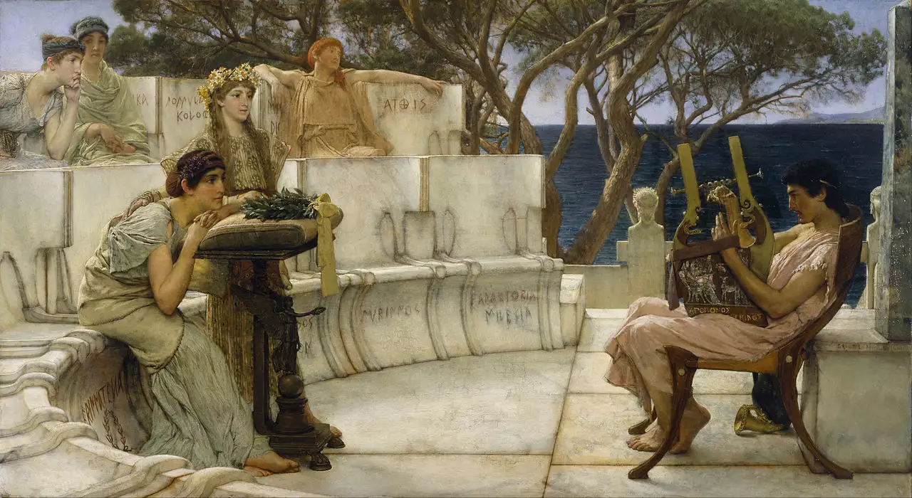
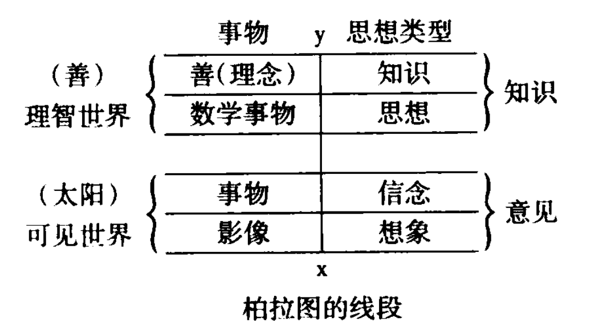

第一部分 古希腊哲学/Ancient Greek Philisophy
第零章 古希腊年表
- 公元前776年，第一届奥林匹克运动会举办，成为后来希腊世界很多历史事件确定时间的基础。
- 约公元前740—公元前720年，第一次美塞尼亚战争。斯巴达取胜，占领美赛尼亚人大部分国土。
- 公元前735年，科林斯人建立希腊人在西西里的第一个城邦纳克索斯；公元前734年，科林斯人在西西里建立叙拉古城邦。
- 公元前8—公元前7世纪，诗人希西阿德在世，希腊此时称为“希西阿德时期”。
- 公元前725年，斯巴达人建成希腊第一座石制神庙阿尔忒弥斯神庙。
- 公元前683年，雅典执政官改为一年一任，日后雅典国家文件常用名年执政官纪年。
- 公元前664年，普萨美提克一世开始招募希腊雇佣兵，希腊人开始渗入埃及。
- 约公元前7世纪中期，重步兵战术开始在希腊传播，深刻影响希腊世界的作战方式。
- 公元前660—公元前645年，第二次美塞尼亚战争，斯巴达占领美塞尼亚人的全部领土，奴役全部美塞尼亚人。
- 公元前650年，希腊人开始向黑海地区殖民。
- 公元前638年，梭伦出生于雅典。
-
公元前630年，希腊人在利比亚建立昔兰尼城邦。
-
公元前630年，女诗人萨福出生列斯波斯岛。萨福是有史可查的古希腊第一位女诗人。 
-
公元前624年，米利都学派创始人泰勒斯出生于米利都。

- 公元前621年，雅典执政官德拉古颁布古希腊第一部成文法典。
- 公元前610年，米利都学派哲学家阿那克西曼德出生于米利都。他首次在哲学史上提出“本原”的概念。
- 公元前595—公元前586年，为争夺德尔菲的控制权而爆发第一次神圣战争。
- 公元前594年，梭伦改革。雅典开始民主化进程。
- 公元前590—公元前560年，斯巴达-提吉亚战争。斯巴达取胜，提吉亚被迫成为斯巴达的“盟邦”。
- 公元前580年，雅典建立第一座雅典娜神庙。
- 约公元前580年，毕达哥拉斯出生于萨摩斯岛。他最早提出地球是球形的思想。
- 公元前560年—公元前527年，庇西特拉图在雅典反复建立僭主政治，促进了雅典民主的建立。
- 公元前544年，爱菲斯学派创始人、哲学家赫拉克利特出生于爱菲斯。列宁称其为“辩证法的奠基人”。
- 公元前540年，阿拉里亚海战，希腊人向地中海西部的扩张被迦太基人和爱特鲁里亚人阻止。
- 公元前534年，雅典第一部悲剧在酒神节中上演。
- 公元前525年，“悲剧之父”埃斯库罗斯出生于阿提卡的埃琉西斯。
- 公元前525—公元前523年，斯巴达人扩张到萨摩斯。伯罗奔尼撒同盟逐渐形成。
- 公元前510年，雅典僭主希庇阿斯被驱逐，雅典僭主制结束。
- 公元前508年，克里斯提尼改革，雅典民主政治基本建立，雅典国家正式形成。
- 约公元前500年，雅典十将军制度确立。
- 公元前499年，波斯统治下的伊奥尼亚人暴动。
- 公元前496年，悲剧作家索福克勒斯出生于雅典。
- 公元前494年，波斯军攻陷并洗劫米利都。
- 公元前490年，5月，雅典在海战中败于埃及那；波斯军出征希腊本土；9月，马拉松战役，希腊联军大胜。
- 约公元前490—公元前480年，智者学派代表人物普罗塔哥拉出生于阿布德拉。
- 公元前487年，雅典首次实施“陶片放逐法”。同年第一部喜剧上演。
- 公元前486年，雅典执政官开始实行抽签选举。
- 约公元前484年，历史学家希罗多德出生于哈利卡纳苏。
- 公元前482年，雅典人在劳里昂发现银矿，并利用银矿的收入发展海军。
- 公元前481年，波斯军攻陷雅典，雅典人全部登上舰船；10月，在斯巴达组建希腊同盟。
- 公元前480年，9月，温泉关战役；同月，萨拉米海战，希腊联军大胜，波斯军大部撤军。

- 公元前480年，悲剧作家欧里庇得斯出生于阿提卡的佛利亚乡。
- 普拉提亚战役，希腊联军大胜，波斯驻希腊陆军统帅玛尔多纽斯阵亡；米卡列战役。

- 公元前478年，提洛同盟成立。
- 公元前469年，苏格拉底出生于雅典。

- 约公元前468年，攸里梅敦河战役，客蒙率领提洛同盟军大胜波斯军。
- 约公元前464—公元前453年，第三次美塞尼亚战争，美塞尼亚人获得了解放。
- 公元前462年，雅典厄菲阿尔特改革，民主程度加强。
- 公元前460—公元前446年，以雅典为首的城邦集团与以斯巴达为首的城邦集团交战（又称“第一次伯罗奔尼撒战争”）。
- 公元前460年，历史学家修昔底德出生于雅典；医学家希波克拉底出生于科斯岛；哲学家德谟克利特出生于色雷斯，他提出了“原子论”。
- 公元前459—公元前454年，雅典人远征埃及，最终全军覆没。
- 公元前454年，提洛同盟金库转移至雅典，雅典帝国初步形成；罗马派遣考察团前往希腊考察法律。
- 公元前449—公元前448年，第二次神圣战争。
- 公元前447年，帕特农神庙开始修建。
- 公元前446年，喜剧作家阿里斯托芬出生于阿提卡；优卑亚暴动。
- 公元前445年，雅典人与伯罗奔尼撒人签订三十年和约。
- 公元前443年，雅典人在南意大利建立图里伊城邦。
- 公元前442—公元前429年，伯利克里连续当选将军，雅典民主政治进入黄金时代。
- 约公元前440年，历史学家色诺芬出生于雅典。
- 公元前438年，帕特农神庙竣工。
- 公元前437年，雅典人在色雷斯建立安菲波利斯城邦。
- 公元前433年，雅典与科基拉结盟，援助科基拉与科林斯作战。此事是伯罗奔尼撒战争的导火索之一。
- 公元前431年，伯罗奔尼撒战争爆发，斯巴达国王阿奇达慕斯率军入侵阿提卡。

- 公元前430—公元前427年，雅典大瘟疫。
- 公元前427年，柏拉图出生于雅典；西西里的高尔基亚出使雅典，修辞学开始在希腊本土传播。
- 公元前424年，伯罗奔尼撒同盟军攻克安菲波利斯，史学家修昔底德因救援不利而被放逐。
- 公元前422年，克里昂、伯拉西达战死，伯罗奔尼撒战争双方主和派占上风。
- 公元前421年，雅典与斯巴达签订“尼基阿斯和约”。
- 公元前418年，斯巴达在曼丁尼亚战役中大败阿尔戈斯同盟军。
- 公元前416年，雅典在西西里的盟友爱吉斯泰与赛林努斯发生冲突。
- 公元前415年，雅典公民大会通过远征西西里的决议，任命亚西比德、尼基阿斯、拉马库斯为远征军指挥；赫尔墨斯神像案，远征进行时公民大会决议逮捕亚西比德回国，亚西比德潜逃至斯巴达。
- 公元前413年，雅典军在西西里惨败，损失战舰200艘以上。从此雅典不再有赢得伯罗奔尼撒战争的可能。
- 公元前411年，6月，雅典四百人政府执政；9月，雅典五千人政府执政；年底，亚西比德指挥雅典军在库诺赛马和阿卑多斯取胜。
- 公元前410年，雅典五千人政府被推翻，恢复了民主制。
- 公元前407年，亚西比德会到雅典，成为全权将军；吕山德成为斯巴达海军统帅。
- 公元前406年，3月，斯巴达于诺提昂海战击败雅典；8月，雅典在阿吉努塞海战大胜斯巴达，但8名将军中有6名被判处死刑。
- 公元前405年，羊河海战，雅典战败，失去几乎全部海上力量。
- 公元前404年，雅典投降，拆毁比雷埃夫斯长城，建立三十寡头政府，其暴政引起雅典人普遍不满。伯罗奔尼撒战争结束。
- 公元前403年，雅典三十寡头政府被推翻，民主制恢复。
- 公元前401—公元前400年，希腊万人雇佣军参与小居鲁士与其兄阿尔塔薛西斯二世争夺王位的战争。色诺芬《长征记》记载了此内容。
- 公元前399年，苏格拉底被判处死刑。
- 公元前396—公元前394年，斯巴达进军小亚。
- 公元前395年，科林斯战争爆发；雅典开始重修长城。
- 公元前394年，克多尼斯海战，科浓作为雇佣军将领率波斯海军大败斯巴达舰队，斯巴达失去海上霸权。
- 公元前393年，雅典重修长城竣工。

- 公元前390年，雅典名将伊菲克拉特首次率轻盾兵击败斯巴达重步兵。
- 公元前387年，柏拉图创建阿卡德米学园。
- 公元前386年，《大王和约》签订，波斯从此能合法介入希腊事务。
- 公元前384年，亚里士多德出生于色雷斯的希腊殖民地斯塔基拉。


- 公元前382年，斯巴达军攻占底比斯卫城。
- 公元前378年，雅典与底比斯结盟；第二雅典海上同盟成立。
- 公元前376年，纳克索斯海战，雅典重新掌握爱琴海制海权。
- 公元前371年，留克特拉战役，底比斯军大败斯巴达军，底比斯开始称霸希腊。
- 公元前369年，雅典与斯巴达结盟，抵抗正在崛起的底比斯。
- 公元前362年，曼丁尼亚战役，底比斯惨胜反底比斯联军，底比斯名将伊巴密浓达战死。
- 公元前359年，马其顿的腓力摄政，雅典与马其顿结盟。
- 公元前356—公元前346年，第三次神圣战争。
- 公元前340年，德摩斯梯尼组织反马其顿同盟。
- 公元前338年，喀罗尼亚战役，希腊诸邦联军惨败于马其顿；第一次科林斯会议。
- 公元前337年，第二次科林斯会议，组建以马其顿为首的希腊同盟，并向波斯宣战。
- 公元前336年，马其顿的亚历山大二世继位。
- 公元前335年，亚里士多德在吕凯昂建立学园。
- 公元前334年，亚历山大征服小亚。
- 公元前333年，伊苏斯战役，波斯军大败。
- 公元前331年，亚历山大里亚建城；高加米拉战役。
- 公元前327年，亚历山大进入印度。
- 公元前323年，亚历山大去世。
- 公元前323—公元前322年，拉米亚战争，希腊反马其顿联盟惨败。
第一章 苏格拉底的前辈
希腊哲学诞生在与雅典隔爱琴海相望的港口城市米利都，它坐落于小亚细亚伊奥尼亚地区的西海岸。由于他们所处的地理位置，第一批希腊哲学家就被称作米利都学派或伊奥尼亚学派。
由于他们所处的地理位置，第一批希腊哲学家就被称作米利都学派或伊奥尼亚学派。大约公元前 585 年，当米利都学派的哲学家们开始他们系统的哲学工作时，米利都巴经成为一个海洋贸易和各地思想的汇聚之地。早先伊奥尼亚就诞生过创作了《伊利亚特 》和《奥德塞》Odyssey)的荷马(约公元前700年)。
1.1 什么东西是持存的
泰勒斯
对于米利都的泰勒斯我们知道的并不多，而我们所知道的那些还不如说是一些逸闻。泰勒斯没有留下任何作品。他是希腊国王克洛素斯和执政官梭伦的同代人，他生活的年代大概是在公元前624年到公元前546年之间。 他开启了一个全新的思想领域, 由此，也赢得了西方文明“第一个哲学家”的称号。
泰勒斯全新的问题是关子事物的本质的。事物是由什么构成的呢?或者，哪种”物质”构成了万事万物?泰勒斯提出这些问题，试图解释这样一个事实，即存在着各种不同的事物, 例如士壤、云和海洋，有时这些事物中的一些转变成另一些事物，不过它们在某些方面依然类似。泰勒斯对思想的独特贡献在于他的如下思想，即不论事物之间有多大的差异，它们之间依然存在着根本的相似。多通过一而相互关联。他假定某种单一的元素，某种“物质”包含了自身活动和变化的原则，它是所有物理实在的基础。对泰勒斯来说，这个一，这种物质，就是水。
他的问题为一种新的研究创造了条件，这种研究就其本性而言是允许争论的，在进一步的分析中它可能得到证实，也可能被驳倒。
阿那克西曼德
阿那克西曼德是比泰勒斯年轻一些的同代人，也是泰勒斯的学生。他同意老师的看法.认为存在着某种单一的基本物质，事物就是由它构成的。但是, 阿那克西曼德不同于泰勒斯，他说，这种基本的物质既不是水，也不是其他任何特殊的元素。他认为，所有这些物质都来自最原始的本质，它就是一个不定的或无限制的实在。
他另外还提出了人是由鱼演化而来的演化论，绘制了第一幅全球地图，认识到天体环绕北极星运转提出天空是一个完整的球体等等。
阿那克西米尼
阿那克西米尼(约公元前585年——公元前528年)，他是阿那克西曼德的年轻同伴。阿那克西米尼试图沟通他的两个前辈的不同观点，他提出气是万物由之而产生的原初物质。就像泰勒斯提出的水的思想，气也是一种确定的物质，我们可以很有理由的把它看作是所有事物的基础。例如，虽然气是不可见的，但是我们只有在可以呼吸时才能存活，“就像我们的灵魂——它是气——把我们凝聚为一体，气息和气也包围了整个世界。”就像阿那克西曼德 提出的无限制者处于持续的运动中这种看法一样，气弥漫于所有的地方——虽然不像无限制者，它是一种特殊的、可以被实实在在把握到而加以识别的物质实体。此外，气的运动也是一个比阿那克西曼德的“分离”更加特殊的过程。为了解释气是如何作为万物本原的，阿那克西米尼指出，事物之成为它们所是的那个样子，取决于组成这些东西的气在多大程度上凝聚和扩张。在这样说的时候，他已经提出了一种重要的新思想:质上的差异，原因在于量上的差异。
米利都学派真正的意义在于他们第一次提出了事物的最终本性的问题，并且第一次迟疑不决地但却是直接地探究了自然实际上是由什么构成的。
1.2 万物的数学基础
毕达哥拉斯
爱琴海中有一座与米利都一水之隔的小岛——萨摩斯岛。它就是智薏非凡的毕达哥拉斯(约公元前570年——公元前497年)的出生地。亚里士多德告诉我们，毕达哥拉斯派"致力于数学研究，他们是最先推动这项研究的，由于长期浸淫其中，他们进而认为数的原则就是所有事物的原则。“与米利都学派形成对照的是, 毕达哥拉斯学派认为，事物是由数构成的。
像毕达哥拉斯学派那样说所有事物都是数，就意味着在他们看来所有具有形状和大小的事物都有一个数的基础。他们以这种方式从算术转到了几何，然后再转到实在的结构。对数的这种理解使毕达哥拉斯学派形成了他们最重要的哲学观念，即形式的概念。米利都学派已经形成了原初物质或质料的观念，所有的事物都是由它构成的，但是特殊事物是如何从这个单一的原初物质中分化出来的?他们对此却没有一个连贯的概念。他们都谈到了一种无限定的物质，不论它是水、气，还是不确定的无限制者，都以之来意指某种原初的物质。毕达哥拉斯学派现在提出了形式的概念。在他们看来，形式意味着限定(limit)，而限定尤其要通过数来加以理解。
毕达哥拉斯及其追随者的辉煌在某种程度上体现在他们对后来的哲学家尤其是柏拉图的影响上。柏拉图哲学的许多内容在毕达哥拉斯的教导中已经得到了表述，包括灵魂的重要性和它的三重区分，还有数学的重要性，因为它关系到形式或“理念”的概念。
1.3 解释变化的尝试
赫拉克利特
早先的哲学家们试图描述我们周围世界的构成要素。来自爱菲索的贵族赫拉克利特(约公元前540年-公元前480年)把注意力转向一个新的问题，即变化的问题。他的主要思想是“一切都处于流变之中”，他用如下的话表达了永恒变化的思想：“我们不能两次踏进同一条河流“。这种流变的思想不仅适用于河流，而且适用于一切事物，包括人类的灵魂。赫拉克利特指出，在这许多形式和那单一的持存元素之间，在多和一之间，必定存在着某种基本的统一性。他的说理方式富有想象力，因此他的许多说法在后来柏拉图和斯多噶派的哲学中有着重要的位置；在近几个世纪里，他则深为黑格尔与尼采所激赏。
流变与火 为了把变化描述为多样性中的统一，赫拉克利特认定必定存在着某种在变化的东西，他说这个东西就是火。但是他并不只是简单地用火这个元素取代素勒斯的水或者阿那克西米尼的气。赫拉克利特之所以认定火是万物的基本元素，是因为火的活动方式提示出了变化过程是如何进行的。火在同一时刻既是一种不足，又是一种过剩：它必须不停地加人（燃料），它也不停地释放出某些东西一热、烟或者灰烬。火是一个转化的过程，于是在这一过程中，添加进火里去的东西转化成其他的东西。
除了火的概念外，赫拉克利特还提出了另外一个很有意义的思想，这就是作为普遍规律的理性的思想。
作为普遍规律的理性 变化的过程不是杂乱无章的运动，而是神的普遍理性（逻各斯，logos)的产物。理性的观念来源于赫拉克利特的宗教信仰，他相信最实在的东西是灵魂，而灵魂最独特最重要的属性是智慧或思想。但是当他谈到神和灵魂时，却并未想到独立的人格实体。对他而言，只存在一种基本的实在，这就是火，赫拉克利特将火这个物质实体称作一或神。因此，赫拉克利特是一个泛神论者，即认为神就是宇宙中万物的总体。在赫拉克利特看来，一切事物都是火/神。既然火/神存在于一切事物之中，所以甚至人的灵魂也是火/神的一部分。
巴门尼德
巴门尼德是比赫拉克利特年轻一些的同代人。他大约出生在公元前510年，他的一生大部分时间是在埃利亚度过的。这座城市位于意大利的西南部，是由希腊的流亡者们建造的。居于此城时，巴门尼德在多个领域卓有建树，他为埃利亚的人们制定了法律，建立了一个新的哲学学派即埃利亚学派。巴门尼德对他的前辈们的哲学观点深感不满，他提出了一种非常引人注目的理论：整个的宇宙只有一个东西，它从不变化，没有任何部分，永远不可毁灭。他把这个单一的东西称作一(One)。在巴门尼德看来，所有这些变化和多样性都只是一个幻觉。不管现象是怎样的，存在的只能是一个单一的、不变的、永恒的东西。为什么巴门尼德要提出一个与现象截然相反的理论呢？原因就在于他更加信服于逻辑推理而不是眼睛看到的东西。
巴门尼德的理路从如下一个简单的陈述开始，要么存在者存在，要么存在者不存在。例如，母牛存在，但是独角兽不存在。经过进一步的考虑，巴门尼德认识到我们只能断言上面这个陈述的前半部分，即存在者存在。因为我们只能对存在的东西形成概念并言说之，而对不存在的东西则不能。因此，在巴门尼德看来，我们必须拒斥任何暗含着存在者不存在的观点。巴门尼德随后揭示了这个观点的几个隐含的意思。首先，他指出不存在变化。赫拉克利特认为一切都处在持续不断的变化之中；而巴门尼德侧持完全相反的观点。我们通常观察到事物通过产生和消失而变化着。虽然事物如此这般地呈现在我们眼前，但是巴门尼德指出，这个所谓的变化过程在逻辑上是有缺陷的。我们先是说树不存在，然后又说它存在，接着我们再一次说它不存在。这里我们在开始和最后都说到了存在者不存在这个不可能成立的观点。于是从逻辑上来说，我们不得不拒斥这个所谓的变化过程，把它看作一个巨大的幻象。因此，没有什么东西是变化的。
与此类似，巴门尼德指出，世界是由一个不可分的东西构成的。不过我们通常也观察到世界包含许多不同的东西。例如，假设我看到一只猫坐在地毯上。对此，我通常所知觉到的是，猫和地毯是不同的东西，而不仅仅是一团没有分别的物质。但是这种通常的物理差别的观点在逻辑上也是有缺陷的。我其实是在说在猫爪子的下面不存在猫，而从它的爪子到头才存在猫，在猫的头顶之上又不存在猫。因而当我划分猫的物理界限时，我在开始和最后都说到了存在者不存在这个不可能的观点。因此我必须拒斥所谓的物理差异的事实，把它也看作一个幻象。简而言之，只有一个不可分的东西存在。
巴门尼德运用类似的逻辑指出一必定是不动的：如果它运动的话，它在它原来的地方将不存在，这包含了存在者不存在这样一个不合逻辑的断言。巴门尼德还指出一必定是一个完满的球体。如果它在任何一个方向上是不规则的一就像保龄球上钻有三个洞，这将在保龄球里边产生一个不存在的区域。这也会错误地断言某物不存在。
即使我们承认巴门尼德论证的逻辑力量，我们也很难抛弃我们的常识观点，即世界呈现出变化和多样性。但是巴门尼德拒斥这些通常的思想，坚持在现象与实在之间作出区分。他说，变化和多样性混淆了现象和实在。在现象与实在的区分之后的是巴门尼德另外一个同样重要的区分，即意见与真理之间的区分。现象只能产生意见，而实在是真理的基础。常识告诉我们，事物似乎处在流变之中，因此处在个持续的变化过程之中。然而巴门尼德说，这个建基于感性的意见必须被理性的活动所取代。理性能够辨别出关于事物的真理，它告诉我们如果存在着一个单一的实体，而且所有东西都是由它构成的，那么就不可能存在运动或变化。当泰勒斯说一切都来源于水的时候，他在某种程度上也提出了这个观点。泰勒斯暗示说，事物的现象并没有向我们展示实在的构成物质。但是巴门尼德明确地强调这些区分，它们在柏拉图的哲学中产生了决定性的作用。柏拉图接受了巴门尼德关于存在的不变性的根本思想，由此进一步提出他的真理的理智世界和意见的可见世界之间的区分。
巴门尼德在65岁时由他主要的学生芝诺陪同前往雅典。传说他与年轻的苏格拉底进行了对话。巴门尼德关于变化和多样性的极端观点不可避免地招致了人们的质疑和嘲笑。捍卫这些观点、反击其论敌的任务落在了巴门尼德的学生芝诺的上。
芝诺
芝诺大约在公元前489年出生在埃利亚。当他陪同巴门尼德访问雅典时已经40岁了。芝诺为巴门尼德进行辩护的主要策略是揭示关于世界的所谓常识会导致比巴门尼德的观点更荒唐的结论。例如，毕达哥拉斯学派拒斥巴门尼德所接受的一个基本的假设，这就是实在是一。相反他们相信事物的复多性——存在着大量分离的互相区别的事物——因而运动和变化是实在的。他们的观点似乎更能得到常识和感官的验证。但是芝诺所追随的埃利亚学派要求在现象与实在之间作出区。
芝诺强烈地感到我们的感官没有为我们提供关于实在的任何线索，它只是为我们提供了关于现象的线索。所以我们的感官没有给我们提供可靠的知识，而只是提供了意见。他举了一个黍米种子的例子来说明这一点。如果我们把一粒黍米的种子扔到地上，是不会发出声响的。但是如果我们把半蒲式尔的种子倒到地上，就会有声音了。芝诺由此下结论说，我们的感官欺骗了我们。因为要么哪怕只有一粒种子落下时也有声音，要么即使许多种子落下时也没有声音，二者必居其一。所以要想达到事物的真理，思想之路要比感觉之路更为可靠。
芝诺的四个悖论 为了回击对巴门尼德的批评，芝诺把他的论证构造成悖论的形式。关于世界的常识观点采用了两个主要的假设：(1)变化在时间中发生，以及(2)各种不同的事物延伸在空间之中。芝诺追随巴门尼德，他当然也拒斥这两个假设。为了反驳常识观点，芝诺暂时先接受上面的两个假设，然后揭示出从中产生的悖论。这样得到的结果实际上如此荒唐，以至于常识的观点再也不是表面上看来那么符合常理了。两相对比之下，巴门尼德关于一的观点似乎倒是对世界更合理的解释了。芝诺提出了四个主要的悖论。
1.运动场恃论 根据运动的这个悖论，一个奔跑者从跑道的起点到终点要穿越一系列的距离单位。根据毕达哥拉斯学派的假设，跑步者要跑完全程必须在有限数量的时间内穿越无限数量的点。但关键问题是，一个人如何能够在有限的时间里穿过无限数重的点呢？跑步者要达到跑道的终点，就必须首先达到跑道的中点：但是从起点到中点又可以分成两半，要想达到中间点，跑步者必须首先达到那个四分之一点。同样从起点到四分之一点之间的距离也是可分的，这个分割的过程必定可以无限进行下去，因为分割后总是有剩余，而剩余的部分还是可分的。所以，如果跑步者不首先到达某个点之前的一个中间点，他就不能到达那个点，而如果有无数的点，那么他就不可能在有限的时间里穿越无限数量的点。因此芝诺下结论说，运动并不存在。
2.阿基里斯追🐢的恃论 这个悖论与运动场悖论很类似。让我们想象在迅捷的阿基里斯和缓慢的乌龟之间举行一场赛跑。由于阿基里斯是位运动健将，假设之下，阿基里斯永远也追不上乌龟。
3.飞失恃论 当射手瞄准一个靶子射出箭时，那支箭运动吗？毕达哥拉斯学派承认空间的实在性与可分性，他们会说，运动的箭在每一刻都占据了空间中的一个特定位置。但是如果一支箭在空间中占据了和它的长度相等的一个位置，那么这正是我们说一支箭不动时所表达的意思。由于飞矢必定总是在空间中占据这样一个等于它的长度的位置，它必定总是处于静止状态。此外，正如我们在运动场的例子中看到的，任何量都是无限可分的。因此，飞矢占据的空间是无限的，这样它就必须与所有其他的事物相重合，在此情况下，所有事物都必定是一而不是多。因此运动只是一个幻象。
4.运动的相对性恃论 想象三辆相同长度的大客车，它们在相互平行的道路上行驶，每辆车的一边都有8个窗户。一辆车静止不动，其他两辆车以相同的速度朝相反的方向运动。芝诺主要的观点就是运动没有清晰的定义，它是一个相对的概念。
在所有这些论证中，芝诺仅仅是在对巴门尼德的反对者的观点进行驳难，他严格遵循他们对复多性世界——例如其中一条线或者时间是可分的世界——的假设。通过把这些假设推导到它们的逻辑结论，芝诺试图证明复多性世界的思想将使人陷人不可解决的荒谬和悖论之中。因此，他重申了巴门尼德的论题：变化和运动乃是幻象，只有一个存在者，它是连续的、物质的、不动的。芝诺的努力尽管勇气非凡，但是关于世界的常识观点依然存在，它促使后来的哲学家们采取一种不同的方式来解决变化与恒常的关系问题。
恩培多克勒
恩培多克勒在他的家乡西西里岛的阿格里琴托是个引人注目的人物，他在那里大概从公元前490年活到了公元前430年。他的兴趣和活动覆盖了从政治学和医学到宗教和哲学的泛领域。传说为了让人们永远对他奉若神明，恩培多克勒跳进埃特纳火山口结束了自已的生命，这样他的身体就不留下任何痕迹，人们便会以为他升天了。恩培多克勒认为承认与否认运动变化的论证都有各自的价值。由此他发现了一种协调的方式，使得我们既可以说存在着变化，同时也可以断言实在从根本上来讲是不变的。
恩培多克勒在如下的观点上是同意巴门尼德的，即存在是永生的、不可毁灭的，它仅仅只存在着。他写道：“从绝对没有实存的东西不可能产生任何存在；而存在的毁灭也是完全不能实现也不可想象的：因为它将一直存在下去，不论什么人把它放在什么条件下，都是如此。”但是，恩培多克勒不像巴门尼德，他不同意说实存之物仅仅由“一”构成。我们要接受那个“一”的概念就必须否认运动的实在性，可是对于恩培多克勒来说，运动的现象如此显而易见、引人注目因而是不容否认的。因此他拒斥了“一”的观念。恩培多克勒同意巴门尼德的存在是永生的且不可毁灭的观点，但是他认为，存在不是一而是多。不变的、永恒的东西是多。
在恩培多克勒看来，我们看到和经验到的物体事实上是有成也有毁的。但是这样的变化和运动之所以可能，是因为物体是由许多物质微粒组成的。因此，虽然物体能够变化，就像赫拉克利特说的那样，但是它们由之构成的微粒是不变的，就像巴门尼德谈论的一那样。但是这些微粒包括什么呢？恩培多克勒认为这些微粒包括四种永恒的物质元素，即土、气、火、水。他相信这四种元素是不变的、永恒的，永远也不能转化为其他的东西。用来解释我们看到的物体中的变化的，是四种元素的混合，而不是它们的转化。他写道，“只存在混合以及混合之物的相互交换。”土、气、火、水是不变的微粒，它们混合在一起形成物体，这就使得我们在日常经验中看到的变化成为可能。
恩培多克勒对土、气、火、水的解释只是他的理论的第一个部分。第二个部分是对推动变化过程的特殊的力的解释。伊奥尼亚学派假定自然物质自身就转化为各种各样的物体。只有阿那克西米尼试图用气的稠密和膨胀的理论来具体地分析变化的过程。恩培多克勒则与之形成鲜明对照，他假定在自然中存在着两种力，他称之为爱和恨（也可以说和谐与争执)。它们就是导致四种元素互相混合后来又互相分离的力。爱的力导致元素相互吸引，形成某种特殊的形式或者某个特殊的人。恨的力导致事物的解体。
阿那克萨戈拉
阿那克萨戈拉（公元前500年-公元前428年）出生在一个叫克拉左美奈的海滨小城，它现在土耳其境内。后来他来到雅典伴随执政官伯里克利左右。他主要的哲学贡献是提出了心灵（奴斯，nous)概念，他把它和物质区分开来。阿那克萨戈拉同意恩培多克勒的观点，所有存在的产生和消灭都仅仅在于已经存在的物质的混合与分离。但是他不接受恩培多克勒认为各种事物都是由爱与恨形成的那种含糊不清甚至带有神话色彩的思想。在阿那克萨戈拉看来，这个世界和世上的一切事物都是井然有序而且具有复杂精妙的结构的；所以，必定存在着某个有知识有力量的存在者把物质世界组织成这个样子。
根据阿那克萨戈拉的看法，实在的本质最好被理解为是由心灵和物质构成的。在心灵影响物质的形状和行为之前，物质就已经存在了，它是各种各样物质实体的混合，而这些物质实体都是不生不灭的。即使当这种物质原料被分成实际的物体时，分出的每个部分也还是包含着其他所有元素“种子”的微粒。例如雪就既包含了黑又包含了白，而它之所以被称作白的只不过是因为白在其中居于主导地位。所以在某种意义上，实在的每个部分都和实在的全体有同样的成分，因为，每个部分之中都含有每种元素的“一份”。
根据阿那克萨戈拉的看法，原始物质形成各种事物是通过分离的过程，这个分离是由心灵的力量促其发生的。具体说来，心灵首先产生了一个旋转运动，形成了一个漩涡，它扩展开来，使得越来越多的原初物质卷入进来。这迫使各种物质“分离”开来。这个漩祸运动最初将物质分成两大部分，其中的一部分包含热、光明、稀薄和干燥的物质，另一部分则包含冷、黑暗、稠密和潮湿的物质。这个分离的过程是连续的，是永不间断地进行下去的。特定的事物总是由诸物质结合而成的，在其中某种特定的物质占了统治地位。例如，水中是潮湿的元素占主导地位，但也存在所有其他的元素。
虽然阿那克萨戈拉把心灵作为宇宙中和人的身体中的推动力或控制力，但是他对心灵实际作用的解释是有其局限的。一方面，心灵不是物质的创造者，因为他认为物质是永恒的。此外，他在心灵中没有看到自然世界的任何目的。那种主要用“分离”过程来说明心灵在特殊事物起源中的作用的办法，看来是一个机械论的解释。事物是物质原因的产物，而心灵除了予以最初的推动外，似乎就没有任何别的特殊作用了。
亚里士多德后来区分了不同种类的原因，他对阿那克萨戈拉的观点的评价有褒有贬。他把阿那克萨戈拉和他的前辈作了比较，那些前辈把事物的起源归结为自发性和随机。根据亚里士多德的观点，阿那克萨戈拉说，“理性在动物中，也在全部的自然中作为秩序和一切安排的原因而出现时，他看起来头脑冷静，截然不同于他的前辈。”但是，亚里士多德又说，阿那克萨戈拉对心灵概念的运用是“远不充分的”。他的批评是，“阿那克萨戈拉让理性作为一具神奇的机器来制造世界。当他说不清楚某事物必然存在的原因何在时，他就会把理性拉进来，但在其他一切情况下他都把事物的原因归于理性之外的东西。”阿那克萨戈拉似乎只是解释了物质如何能发生漩涡运动，自然秩序的其余内容测不过是这个运动的产物而已。
然而，阿那克萨戈拉关于理性的说法在哲学史上产生了深远的影响，因为他由此把一种抽象的原则引入了事物的本质之中。他区分了心灵和物质.他或许还没有将心灵描述为完全非物质的，但是他将心灵和它要与之打交道的物质区分了开来。他宜称，心灵不像物质，“它不与其他任何东西相混合，是单独的、自在的”。心灵不同于物质的地方在于它是“所有事物中最精细的、最纯的，它拥有对每件事物的一切知识，具有最大的力量”。因而，物质是复合的，而心灵则是单一的。但是阿那克萨戈拉并没有区分两个不同的世界一心灵的世界和物质的世界一而是将它们看作总是相互关联的。所以他写道，心灵存在于“每一个事物存在的地方”。虽然阿那克萨戈拉没有展开他的心灵概念的所有可能性，但是这个概念注定会对此后的希腊哲学产生巨大的影响。
1.4 原子论者
留基波和德谟克利特建立了一种关于事物的本质的理论，它与某些当代的科学观点有着惊人的相似。然而今天我们很难把留基波和德谟克利特各自对这个理论的贡献区分开。他们的作品绝大部分都佚失了，但是我们至少知道留基波是原子论学派的创立者，对此理论的详尽阐述则来自德谟克利特。留基波与恩培多克勒（公元前490年-公元前430年）是同时代的人，但是除此之外我们对他的生平几乎一无所知。德谟克利特出生在色雷斯的阿布德拉，据说他活了100岁，生于公元前460年，卒于公元前360年。他学识广博，力求对他那抽象的原子理论进行清晰的表述，这些自然都让留基波相形见绌。不过我们还是得肯定，是留基波提出了原子论的主要观点，即所有事物都是由运动在虚空中的原子构成的。
原子和虚空
根据亚里士多德的描述，原子论的产生是想要克服埃利亚学派拒斥空间的逻辑结果。巴门尼德否认存在任何独立的事物，因为到处都是存在，在这种情况下整个的存在是一。尤其是他否认非存在或虚空（空的空间）的存在，因为说存在着虚空就是说虚空是某种存在。他认为，我们不可能说存在着无。留基波建立他的新理论，正是为了反对埃利亚学派对空间或虚空的处理方式。
留基波肯定了空间的实在性，从而为一种关于运动和变化的连贯理论的提出准备了条件。使巴门尼德的空间概念陷入困境的是，他认为任何存在的东西都必须是物质的，因此如果空间存在，那么它也必定是物质的。而留基波则认为，我们可以肯定空间的存在，同时无须说空间是物质的。所以他把空间描述为一个容器，它可以在某个地方是空的，而在另一个地方被充满。空间或虚空作为一个容器可以是物体移动的场所，留基波认为，很显然我们没有任何理由否认空间的这一特性。要是没有这样一种空间概念，留基波和德谟克利特就不可能提出他们的万物都是由原子构成的观点。
在留基波和德谟克利特看来，事物的本质在于无限数量的微粒或单元，称为“原子”。留基波和德谟克利特赋予这些原子两个主要的特性——这也是巴门尼德认为“一”所具有的——即不可毁灭性和永恒性。巴门尼德说过，实在是个单一的“一”，而原子论者现在说，存在着无限多的原子，每一个原子自身是绝对致密的。这些原子不包含任何的虚空，因此是不可入、不可分的。它们存在于空间之中，并且在形状和大小上相互区别。由于它们太过微小，所以是不可见的。因为这些原子是永恒的，所以它们不是被创造的。因此，自然只包含两种东西：空间（它是真空）和原子。原子在空间中运动，它们的运动使它们形成了我们所经验到的物体。
原子论者认为无须解释原子最初是如何在空间中运动起来的。他们认为这些原子最初的运动类似于灰尘在光线中向各个方向的飞速运动，即使没有风推动它们，灰尘也会这样。最初原子在空间中运动着，它们是单个的单元。它们不可避免地相互碰撞。在有些情况下，它们的形状使它们能够结合在一起，形成团。在这点上，原子论者和认为事物都是数的毕达哥拉斯学派有近似之处。事物就像数一样是由可以相互结合的单元构成的；对于原子论者来说，事物仅仅是各种不同原子的结合。数学的形体和物理的形体是类似的。原子一开始就存在于空间中。每个原子就像巴门尼德的一，但是，虽然它们是不可毁灭的，却永远处于运动之中。原子论者把土、气、火、水描述为本身不变的原子所形成的各种不同的聚集一这些聚集产生于最初单一的原子的运动。这四种元素并不像早先的哲学家所认为的那样是所有其他事物的最初根源，它们本身也是绝对原初的物质——原子——的产物。
原子论者对事物的本质提出了一个机械论的概念。对他们来说，所有事物都是在空间中运动的原子相互碰撞的结果。他们认为没有必要解释原子的来源，也没有必要解释推动原子的最初运动。因为这些起源的问题总是可以问下去，甚至对于上帝我们也可以这么问：赋予物质的原子以永恒的存在似乎并不比其他任何解释更令人感到不满。
留基波和德谟克利特设想的原子理论在历史上造成了长久而深远的影响。这一理论的生命力十分顽强，虽然在中世纪曾一度式微，但到了文艺复兴时期又东山再起，并且为接下来几个世纪里的科学工作提供了模式。伊萨克·牛顿(1642-1727)在写作著名的《数学原理》(Principia Mathematica)时依然用原子论的术语进行思考。在这部著作里他推导出了行星、彗星、月球和海洋的运动；他在1686年写道：
我希望我们能够用从机械原理得出的相同的推理揭示出自然的其他现象，因为有许多原因促使我猜测它们或许都依赖于某些力，凭借这些力，由于某种目前还不清楚的原因，这些物体的微粒互相吸引，形成规则的形状，或者互相排斥而彼此远离。
虽然牛顿假设是上帝椎动了事物运动起来，他对自然的物理分析却仅限于在空间中运动的物质的机械原则。在牛顿之后原子论一直占据支配地位，直到量子理论和爱因斯坦为当代科学提供了一种新的物质概念，它否认了原子有不可毁灭性。
知识理论和伦理学
除了描述自然的结构，德谟克利特还关注其他两个哲学问题：知识问题和人类行为问题。德谟克利特是个彻底的唯物主义者，他认为思想也可以用解释其他现象的方式来解释，即它也是原子的运动。他区分了两种不同的知觉，一种是感性知觉，一种是理性知觉，它们都是物理过程。当我们的眼晴看到某个东西时，它其实是由物体造成的“影响”，是物体的原子的流射，从而形成了一个“影像”。这些事物的原子影像进人眼晴和其他感觉器官，对灵魂产生了影响，而灵魂自身也是由原子构成的。
德谟克利特进一步区分了两种认识事物的方式：“存在着两种形式的知识，真实的知识和暗昧的知识。属于后者的是视觉、听觉、嗅觉、味觉和触觉。但是真实的知识与这完全不同。”区别这两种思想的东西是，“真实的”知识仅仅依赖于对象，而“暗昧的”知识则受到那个人特定身体条件的影响。例如两个人都会同意他们品尝的是苹果（真实的知识）。但是他们可能对苹果的味道意见不一（暗昧的知识）。所以根据德谟克利特的看法，“我们通过感官不能知道任何确切的真理，我们所知道的只是那些按照我们身体的倾向以及进入身体或者抵抗身体的东西的倾向而变化的东西。”不过德谟克利特还是承认，感觉和思想是相同类型的机械式的过程。
关于伦理学，德谟克利特为人类行为提出了一套雄心勃勃的规则。总的来说，他认为生活最令人向往的目标是快乐，我们最好是通过在一切事务上的节制有度和文化上的教养来获得它。随着伦理学成为哲学最关注的问题，哲学也走到了它的一个主要分水岭前，哲学的第一个时期结束了，这一时期的主要问题是自然的秩序。现在人们提出了许多更富有挑战性的问题来探讨他们应该如何行动。
第二章 智者派与苏格拉底
第一批哲学家关注的是自然;而智者派和苏格拉底则将哲学的关注点转到了对人类的研究。他们不去问“事物的终极原则是什么”等一些关于宇宙的大问題，而是提出一些与道德行为有着更直接关系的问題。哲学由主要关注科学问题转而关注基本的伦理问题，这一转向能在下述事实中得到部分解释:前苏格拉底哲学家们彼此之间并没有能达成任何一种统一的宇宙概念。他们对自然提出了各不相同的解释，这些解释彼此似乎无法调和。例如，赫拉克利特说自然由多种实体构成，所有事物都处于持续的变化过程中。巴门尼德则持完全相反的观点，他论证实在是单一的、静止的实体，是“一〞，运动和变化只是由事物的現象投射于我们的感官而引起的幻觉。如果这些相互矛盾的宇宙论在破解自然之迷时所遇到的巨大困难产生的仅仅是人们的一种理智的疲倦，那么哲学也许就会在这里止步不前了。确实，关于事物终极原則的爭论导致了一种怀疑主义的傾向:人类理性是否有能力发现自然的真理?但是这种怀疑主义为哲学转向一个新方向提供了推动力，因为怀疑主义自身成了被加以认真考虑的主題。哲学家们现在不再就各种自然理论争论不休，他们现在想解决有关人类知识的问題，问道:我们有没有可能发现普遍的真理?各个种族和社群的文化差异使这个问题越发显得突出。结果，关于真的问题与关于善的问题深深地纠缠在了一起。如果人们没有能力认识到任何普遍的真理，那么还能够存在一个普通的善的概念吗?这场新爭论的主要参与方是智者派和苏格拉底。
2.1 智者派
在公元前5世纪前后，雅典出现三个最为杰出的智者，他们是普罗泰戈拉、高尔吉亚和塞拉西马柯。他们这群人或者是作为游历教师来到雅典的，或者是像埃利斯的希庇亚的情况那样，作为使节来到雅典的。他们给自己加上“智者”或者“有知识的人”的特别称号。他们的文化背景各异：普罗泰戈拉来自色雷斯的阿布德拉，高尔吉亚来自南西西里岛的林地尼，塞拉西马柯侧来自卡尔亚冬。他们对雅典人的思想和习俗进行了一番新的审视，提出了一些追根究底的问题。特别是，他们使雅典人不得不考虑自己的观念和习俗是基于真理还是仅仅基于惯常的行为方式。雅典人在希腊人与野蛮人之间，以及在主人与奴隶之间作出的区分是有充足的根据还是仅仅基于偏见？智者们对不同文化的广博知识使他们怀疑获得任何让社会能借以对人们生活进行规范的绝对真理的可能性。他们迫使富有思想的雅典人考虑希腊文化是建基于人为的规侧(nomos)还是建基于自然(physis)。他们令雅典人追问自己的宗教和道德规范是约定俗成的从而也是可变的，还是自然的从而也是永恒的。毫无疑问，智者们为更加深人细致地思考人类本性开辟了道路——尤其是我们如何获得知识以及我们如何规范自己的行为。
智者派主要是一些有实际经验的人，他们尤其善于语法、写作和公开辩说。这些技能使他们成了惟一有能力满足雅典社会中一种特殊社会需要的人。在执政官伯里克利（公元前490年-公元前429年)的领导下，雅典旧有的贵族政体被民主制取代了。由于自由民可以参与政治讨论并担任领导职务，人们的政治生活得到了强化。但是旧有的贵族教育体系主要建基于家庭传统，无法使人们适应民主社会生活中的新情况。在宗教、语法领域以及对诗歌的细致解释方面，还没有严格的理论训练。智者们进入这一文化真空，他们在教育上的实践兴趣满足了这个迫切的需要。他们成为广受欢迎的讲师，是新式教育的主要提供者。使他们特别受人追捧的首先是他们自称能教授修辞术——即令人信服地演说。在民主的雅典，说服力对任何一个想要爬到领导层的人都是政治上所必需的。
智者派的声誉最初是很好的。他们为训练人们清晰有力地表述自己的思想而做了大量工作。但是修辞术有些像一把刀，既可为善，也可作恶。修辞术的运用从令人赞许变为令人遗憾，这其中智者派所固有的怀疑主义起了极大的推动作用。没有多久，智者派的怀疑主义和相对主义使他们受到了怀疑。他们的形象已经不同于早期哲学家那种不带任何经济考虑而从事哲学的公正无偏的思想家形象。智者派为他们的教学索取费用，而且刻意找那些付得起费的有钱人来教。苏格拉底曾在智者门下学习，可是因为穷，他只上得起他们提供的“短期课程”。这种收费教学的行为使得柏拉图将他们讥为“销售灵魂食品的商人”。
普罗泰戈拉
在来到雅典的诸多智者当中，阿布德拉的普罗泰戈拉（约公元前490年-公元前420年)是年纪最长的，在许多方面他也是最有影响的。他因下面的这一陈述而广为人知，“人是万物的尺度，是存在者存在的尺度，也是不存在者不存在的尺度。”就是说，每个个人是他或她作出的所有判断的最终标准。这意味着任何我可能达到的关于事物的知识都受到我作为人的能力的限制。普罗泰戈拉不考虑任何神学的探讨，他说，“关于神，我既不能认识到他们是否存在，也不能认识到他们是什么样子的；因为阻碍我的认识的因素有很多：问题的晦涩，人生的短暂。”普罗泰戈拉说，知识受到我们各种知觉的限制，这些知觉是因人而异的。如果两个人观察同一个对象，他们的感觉会各不相同，因为每个人相对于这个对象的位置不一样。与此相似，同一阵风吹向两个人，一个人会觉得凉，一个人则会觉得暖。因而，说一个人是所有事物的尺度就是说我们的知识被自己的知觉所限制。如果在我们内部的某个东西使我们以与别人不同的方式知觉事物，那么就不存在什么标准来检验是不是某个人的知觉是对的而另一个人的是错的。普罗泰戈拉认为，我们通过自己各种各样的感官知觉到的对象必定具有不同的人各自知觉到的属于它们的所有属性。由于这一原因，我们不可能发现一个事物的“真正”本质是什么；一个事物有多少感知它的人就有多少特性。这样，我们就没有办法区分一个事物的现象和它的实在。基于这一知识理论，我们不可能获得任何绝对的科学知识，因为不同的观察者之间存在着固有的差异，这使我们每个人对事物的观察各不相同。普罗泰戈拉总结道，知识对每个人而言都是相对的。
当普罗泰戈拉谈到伦理学时，他认为道德判断也是相对的。他乐意承认法律观念反映了存在于每一种文化中的想在所有人中建立道德秩序的普遍愿望。但是，他拒绝承认存在着任何适合于所有人类行为的统一的、所有人在任何地方都可以发现的自然法律。他区分了自然和习俗，他说法律和道德规范不是基于自然，而是基于习俗。每个社会都有它自己的法律和道德规则，没有什么方法来断定这个社会的法律和道德规范的对错。但是普罗泰戈拉没有将这一道德相对主义推到极端，他并不认为每个个人都能够仅凭自已就断定对他或她而言什么是道德。相反，他持一种保守的观点，认为城邦制定法律，而每个人应该接受它们，因为这些法律是能够制定出的最好的法律。其他的社群或许有不同的法律，这个城邦里的个人或许想到不同的法律，但是在这两种情况下，并不是说它们就是更好的法律：它们只不过是不同的法律而已。因而，为了社会和平有序，人们应该尊重和支持自己的传统精心发展出的习俗、法律和道德规范。在宗教问题上，普罗泰戈拉持类似的观点：我们不能确定地知道诸神的存在及其本质，不过这并不妨碍我们对神的崇拜。普罗泰戈拉相对主义有趣的结果是他保守的结论，年轻人应该被教育接受和支持自己的社会的传统，这不是因为此传统是正确的，而是因为它使一个稳定的社会成为可能。尽管如此，毫无疑问，普罗泰戈拉的相对主义严重地打击了人们对有可能发现真知的信心。他的怀疑主义招致了苏格拉底和柏拉图的严厉批评。
高尔吉亚
高尔吉亚（公元前5世纪后期）于公元前427年作为使节从他的母邦利昂提尼来到雅典。他对真理所持的观点如此极端，以至最终他放弃了哲学，而转向了修辞术的实践与教学。他的极端观点不同于普罗泰戈拉的观点，因为普罗泰戈拉说，相对于不同的观众，一切都是真的；而高尔吉亚侧拒绝承认任何真理的存在。高尔吉亚极其繁琐地运用埃利亚哲学家巴门尼德和芝诺所使用的推理类型，提出了一系列非同寻常的观点：(1)无物存在，（2)如果有某物存在，它也无法被认识，(3)即使它可以被认识，也不能被传达。以第三个观点为例，他论证说，我们用语言进行交流，但是语言只是符号或标记，符号与它所代表的事物是绝不相同的。因此，知识就不能被传达。通过这种推理，高尔吉亚认为他能够证明上述全部的观点，至少他的推理与和他意见相左者的推理一样严密。他确信不存在任何可靠的知识，当然也不存在任何真理。
高尔吉亚放弃哲学之后转向了修辞学，他试图将之作为说服的技术加以完善。在修辞学和说服术的这种结合中，传统认为他运用心理学和暗示的力量发展了欺骗术。
塞拉西马柯
在柏拉图的《理想国》(Republic)中，塞拉西马柯被刻画为智者，他断言不正义比正义的生活更可取。他并不把不正义看成性格的缺陷。相反，塞拉西马柯将不正义的人看作在性格和智力上更优越的人。他说，事实上，不正义不只是在小偷这种可怜的水平上令人“获利”（虽然在这里也会有利可图），而且尤其对那些将不正义推行到登峰造极之境的人有利，并使他们成为城邦或国家的首领。只有傻子才追求正义，正义只能导致软弱。塞拉西马柯主张，人们应该以一种事实上是毫无顾忌地自作主张的方式去肆意追求他们自己的利益。他将正义看作较强者的利益，他相信“有力即有理”。他说，法律是由统治集团为了自己的利益而制定的，这些法律规定了什么是正确的。所有的国家都一样，“正当”的观念意味着同一个东西，因为“正当”仅仅是以权力建立起来的，反映了把持权力的集团的利益。所以，塞拉西马柯说，“合理的结论就是‘正当'的东西在任何地方都是一样的：都是更强大的集团的利益。”
这里有一个从道德到权力的还原。这是智者派的怀疑主义不可避免的结果，这种怀疑主义使得他们对真理和伦理抱有相对主义的态度。而揭示智者派的逻辑矛盾，重建某种真理概念，为道德判断建立某种牢固的基础，这些就是苏格拉底主要考虑的问题了。
2.2 苏格拉底
许多雅典人误把苏格拉底看作智者，事实上苏格拉底是智者派最尖锐的批判者之一。苏格拉底之所以被人们混同于智者，部分地是因为他对任何主题的不带感情的分析——智者们也运用了这一技术。然而在苏格拉底与智者派之间存在着一个根本的差异。智者派挖空心思钻牛角尖，以表明对于一个问题的任何一面都可以作出同样好的论证。他们是怀疑主义者，不相信有任何确定的或可靠的知识。此外，他们还得出结论说，既然所有知识都是相对的，那么道德标准也是相对的。相反，苏格拉底坚持不懈地进行论辩却是怀着不同的动机。他坚定地追求真理，认为自己的任务就是为确定的知识寻找基础。他也试图发现善的生活的基础。苏格拉底在履行自己的使命时，发明了一种达到真理的方法：他将知和行联系起来，所以认识善就是行善，在这个意义上，“知识就是美德”。所以，与智者派不同，苏格拉底致力于进行讨论是为了获得对真理和善的实质性概念。
苏格拉底的生平
苏格拉底于公元前470年出生在雅典。历史上很少有某时某地像此时的雅典这样出现了如此众多的天才人物。这个时候，刷作家埃斯库罗斯已经完成了他的几部戏剧杰作。欧里庇得斯和索福克勒斯这两位剧作家此时还是小孩子，他们以后将要创作的伟大悲剧苏格拉底很有可能是到剧场看过的。这时伯里克利还是个年轻小伙，他将会开创一个政治民主、艺术繁荣的伟大时代。苏格拉底有可能看过帕特农神庙和菲狄亚斯的雕塑，它们就是完成于他生活的那个年代的。这个时候，波斯已经被打败，雅典已经成为海上期主，基本上控制了爱琴海。雅典达到了前所未有的强大和辉煌。虽然苏格拉底成长于一个黄金时代，但在垂暮之年，他目睹了雅典在战争中的失败，而他自己的生命也在狱中结束。公元前399年，也就是苏格拉底71岁时，他遵从法庭对他的判决喝下了毒药。
苏格拉底没有写下文字作品。我们所知道的关于他的绝大部分事情都是由他的三个著名的年轻的同代人记载下来的，他们是阿里斯托芬、色诺芬以及三人中最重要的一位——柏拉图。从这些资料里看，苏格拉底天资过人，不仅思维严谨超乎群伦，为人也热情友善，秉性幽默。他体格健壮，颇能吃苦耐劳。阿里斯托芬在他的喜剧《云》里把苏格拉底描绘得像一只自负的水鸟，取笑他转跟珠的习惯，俏皮地提到他的“学徒们”及“思想的作坊”。而色诺芬所描绘的则是一位忠诚的战士，他充满激情地探讨着道德的要求，对那些想在他这里得到指点的年轻人有着难以抗拒的吸引力。柏拉图肯定了对苏格拉底的这个总的写照，并进一步把苏格拉底描绘为一个有着深沉的使命感和绝对的道德纯洁性的人。在《会饮篇》中，柏拉图讲述了一位美少年阿尔西比亚德斯是如何希望赢得苏格拉底的爱情的，他想方设法要和苏格拉底单独相处。但是，阿尔西比亚德斯说，“从来就没有出现过这种情况：他只愿意用他通常的方式和我交谈，和我呆了一整个白天后，他就会离开我，自顾自走了。”苏格拉底在从军征战时比其他任何人都更能忍饥挨饿。其他人都“小心翼翼地”把自己包得严严实实，用“毡子加羊毛”裹在鞋子外面，以抵御冬日的严寒。而苏格拉底，阿尔西比亚德斯说，“就穿着他平常穿的一件外套在那样的天气里出门，他光着脚在冰面上行走比我们穿着鞋走还要轻快。”
苏格拉底的注意力能长时间地高度集中。在一次战役中，他曾经站着沉思了一天一夜，“直到黎明来临，太阳升起；在向着太阳做了一次铸告之后，他才走开”。他经常从一个神秘的“声音”那里获得信息或警告，他称这个声音为自己的灵异(daimon)。虽然这种“超自然的”征兆从小就侵扰着他的思想，但对此最合理的解释应该是苏格拉底具有“宗教梦幻式”的气质，尤其是具有对人类行为的道德品质的敏感，正是这些道德品质赋予生活以价值。他对早期希腊街学家们的自然科学必定是非常熟悉的，虽然在柏拉图的《申辩篇》中，他说过，“事情的真相就是如此，雅典人、我与对自然的思索没有任何关系。”对他而言，这样的思索已经让位于那些更紧迫的问题，即人的本性、真理和善。一个决定性的事件确认了苏格拉底的使命是做一个道德哲学家，这就是德尔斐神庙的神谕。故事是这样的，一个名叫凯勒丰的虔信宗教的青年到德尔斐附近的阿波罗神庙去问，这世上是否还有人比苏格拉底更聪明；女祭司回答说没有。苏格拉底认为这个回答的意思是，他之所以是最聪明的，是因为他意识到并且承认自己的无知。苏格拉底就是以这样的态度开始了他对不可动摇的真理和智慧的探求。
作为哲学家的苏格拉底
由于苏格拉底自己没有留下文字作品，究竟哪些哲学思想可以确认是他的，现在还是有争议的。关于他的思想，我们所拥有的最全面丰富的资料来源是柏拉图的《对话集》，他是这些对话中的主角。但是长期以来一直存在的一个问题是，这里柏拉图所描绘的是苏格拉底确实教导过的东西，还是在假托苏格拉底的形象来表达他自己的思想。有些人认为柏拉图《对话集》中的苏格拉底就是历史上的那个苏格拉底。这将意味着这些对话中包含的创造性的哲学工作全都要归功于苏格拉底。要是这样看的话，柏拉图就不过是发明了一种文学体裁，使苏格拉底的思想能够保存下来并得到详尽阐述、准确表达和文字上的润色。可是，亚里士多德对苏格拉底和柏拉图的哲学贡献作出了区分。亚里士多德将“归纳论证和普遍定义”归功于苏格拉底，而将理念论——普遍的原型独立于特殊事物而存在，特殊事物只是它们的具体化——的提出归功于柏拉图。其实，争论就在于是苏格拉底还是柏拉图提出了理念论。因为亚里士多德自己对这个问题特别感兴趣，在学园里已经和柏拉图对之进行过详尽的讨论，因此似乎有理由认为他对苏格拉底和柏拉图的思想的区分是准确的。同时，柏拉图的一些早期对话似乎体现了苏格拉底自己的思想，比如《申辩篇》、《欧绪弗洛篇》。因此，对此问题最合理的解决方法就是把两种观点各采纳一部分。这样我们就可以认为，柏拉图早期的很多对话都是对苏格拉底哲学活动的描述，而柏拉图后期的对话则主要代表了他自己的哲学发展，包括系统地提出具有形而上意义的理念论。在这个基础上，我们就应当把苏格拉底看作是一个原创性的哲学家，他提出了一种新方法来进行理智的探究。
要想成功地克服智者派的相对主义和怀疑主义，苏格拉底就必须为知识的大厦找到一个稳固的基础。苏格拉底在人之中，而不是在外部世界的种种事实中，发现了这个稳固的基础。苏格拉底说，内在生活是一种独特活动即认知活动发生的场所，这一活动导致实践活动，也就是行为。为了描述这一活动，苏格拉底提出了灵魂或心灵(psyche)的概念。对他而言，灵魂不是任何特殊的官能，也不是任何一种特别的实体。相反，它是理智和性格的能力；它是一个人有意识的人格。苏格拉底进一步表述了他的灵魂概念的意义，灵魂是在“我们之中的，我们由于它而被断定是聪明的还是愚意的，是好的还是坏的”。通过这样的描述，苏格拉底是把灵魂等同于理智和性格的正常能力，而不是什么幽灵般的实体。灵魂是人格的结构。虽然苏格拉底很难确切地描述灵魂究竟是什么，但他还是确信灵魂的活动乃是去认识和影响甚至指引和支配一个人的日常行为。虽然对苏格拉底而言灵魂不是一个事物(thing),他还是可以说，我们最应该关心的就是去照料我们的灵魏，“使灵魂尽可能地善”。当我们理解了事实与幻想的区别从而将我们的思想建基于对人类生活的真实状况的知识上时，我们就最好地照料了我们的灵魂。由于获得了这样的知识，那些在思想中照料好了自己灵魂的人也将根据他们对真实的道德价值的知识而采取相应的行动。简而言之，苏格拉底主要关注的是善的生活，而不是纯粹的沉思。
对苏格拉底而言，这种灵魂概念的要点涉及到我们对一些词语的意义的清醒意识。认识到一些事物与另一些事物相矛盾——比如，正义不能意味着伤害别人——就是一个典型的例子，灵魂仅仅通过运用自己的认知能力就可以发现它。因而当我们在行动中违抗这种知识的时——例如当我们伤害一个人而同时又十分清楚这一行为违背了我们关于正义的知识的时候——就会破坏我们自己作为人的本性。苏格拉底确信人可以获得可靠的知识，而且只有这样的知识小能成为道德的正当基础。因而他的首要任务就是为他自己和他的追随者澄清一个人是如何得到可靠的知识的。
苏格拉底的知识理论：思想的助产术
苏格拉底确信，得到可靠知识的最可靠的方法就是通过受到规训的对话，这种对话所起的作用就像一名思想的助产士。他称这个方法为辩证法(dialectic)。不管面对什么问题，这方法总是先讨论它的最显而易见的方面。在对话的过程中，交谈的各方将不得不澄清他们的观点，最终的结论将是一个意义清晰的陈述。虽然这套方法表面上看很简单，但当苏格拉底将之运用到别人身上时，不管是谁，不久都会感受到它那极其严密的力量，也会因苏格拉底的讽刺而感到难堪。柏拉图的早期对话就展示了这种方法，苏格拉底假装对某个主题一无所知，然后设法从其他人的言谈中抽引出他们关于这一主题所能有的最完满的知识。他认为通过对不全面或不确切的思想进行一步步的修正，就可以诱导任何人得出真理。他常常揭示出潜藏在对方观，点之下的矛盾——这种技术被称作“问答法”(elenchus)——从而迫使那人放弃自己误人歧途的观点。如果有些东西是人类的心灵所认识不了的，苏格拉底也要把这点论证出来。因此他相信，没有经过仔细审视的观念是不值得拥有的，正如没有经过仔细审视的生活是不值得过的一样。有些对话的结尾没有结论，因为苏格拉底关心的不是提出一套教条式的思想强加给他的听众，而是引导他们去经历一个有条不紊的思想过程。
我们在柏拉图写的对话《欧绪弗洛篇》中发现了苏格拉底方法的一个很好的例子。对话发生在阿卡翁国王的宫邸前，苏格拉底等在那里想看看是谁指控他不虔敬，这可是一项死罪。年轻的欧绪弗洛赶到那里向他解释说，他想指控自己的父亲不虔敬。苏格拉底表示对不虔敬的含义一无所知，他要欧绪弗洛解释它的意思，因为欧绪弗洛就是以这个罪名指控他的父亲的。欧绪弗洛作出了回答，他将虔敬定义为“起诉犯罪的人”，而不虔敬就是不起诉他。苏格拉底对此回答说，“我没有要你从无数虔敬的行为中举出一两样来；我是要你告诉我虔敬的概念是什么，正是它使得一切虔敬的行为成为虔敬的。”由于他的第一个定义并不令人满意，欧绪弗洛再次尝试说，“凡是令诸神喜悦的就是虔敬的”。但是苏格拉底指出，诸神也相互争吵，这表明诸神之间对于什么是更好的和什么是更糟的意见不一。因而，同一个行动可能令一些神感到喜悦却并不令另一些神喜悦。所以欧绪弗洛的第二个定义也不充分。饮绪弗洛试图修正，他提出了一个新的定义，“虔敬就是诸神全都喜爱的，而不虔敬就是诸神全都痛恨的”。但是苏格拉底问，“诸神是因为一个行动是虔敬的而喜爱它，还是因为诸神喜欢这个行动它才是虔敬的？”简而言之，虔敬的本质是什么？欧绪弗洛再次尝试说，虔敬乃是“正义的一部分，它与对诸神给予其应得的侍奉有关”。苏格拉底再次问，诸神应得的侍奉是怎样的，以迫使欧绪弗洛作出一个更加清晰的定义。这个时候，欧绪弗洛已经陷入了无法摆脱的犹疑不定之中，苏格拉底告诉他，“你不能起诉你年迈的父亲,除非你确切地知道什么是虔敬和不虔敬。”当苏格拉底迫使他再一次作出一个更清晰的定义时，欧绪弗洛回答说，“下次吧…苏格拉底。我现在很忙，我得走了。”
这篇对话对于有关虔敬的话题没有得出结论。但它是苏格拉底辩证方法的一个生动例子，是他关于哲学生活的概念的一个写照。特别是它表现出了苏格拉底对定义的独特关注，定义乃是清晰思想的工具。
定义的重要性 苏格拉底求知方法的再清楚不过的体现是在他寻求定义的过程中。也正是通过对定义的强调，他对智者派进行了最有决定意义的反驳：名词术语都有确定的意义，这就从根本上动摇了相对主义。对他来说，一个定义是一个清晰而确定的概念。苏格拉底深刻地意识到这样一个事实：虽然特殊的事件或事物在某些方面变化或消逝着，它们里面却有某种东西是同一的，从不变化，从不消逝。这就是它们的定义、它们的本性。当苏格拉底追问“那使得一切虔敬的行为成为虔敬的虔敬概念”时，他想要欧绪弗洛给出的就是这个永恒的意义。苏格拉底以一种相似的方法寻求正义的概念，由于它，一个行为才成为正义的；寻求美的概念，由于它，特殊的事物才可以被称作美的；寻求善的概念，由于它，我们才认为一个人的行动是善的。例如，没有什么特殊的事物是完全地美的：它之所以美只是因为它分有了更大的美的概念。此外，当一个美的事物消逝了，美的概念却依然存在。苏格拉底所看重的是我们对一般观念而不仅仅是特殊事物的思考能力。
他认为无论我们思考什么东西，某种意义上我们都是在思考着两种不同的对象。一朵美的花首先是这一朵特殊的花，同时它又是美的一般或普遍意义的一个例子或分有者。对苏格拉底而言，定义包含一个过程，通过这一过程我们的心灵能够区分思想的这两种对象，即特殊（这一个特殊的花朵）和一般或普遍（美的概念，这朵花由于分有了它才是美的)。如果苏格拉底问，“什么是一朵美的花？”或者“什么是一个虔诚的行动？”他一定不会满足于你向他指出这朵花或这个行动。因为虽然美以某种方式与一个特定的事物相关联，但这个事物既不等于也没有穷尽美的概念。此外，虽然各种美的事物互不相同，但不论它们是花还是人，都被称作美的，这是因为它们不管彼此有何差别，都一样分有使它们被称为美的那种要素。只有通过严格的定义过程，我们才能最终把握一个特殊的事物（这一朵美的花)和一个普遍的观念（美或美的）之间的区别。定义的过程，正如苏格拉底所展示的，是一个达到清晰确定的概念的过程。
运用这种定义的方法，苏格拉底表明了真知识不仅仅是简单地考察事实，知识相关于我们在事实中发现那些永恒要素的能力，这些要素在这些事实消逝之后也依然存在。玫瑰花凋谢了，美依然存在。对心灵来说，一个不完美的三角形暗示了那个三角形（的概念），不完美的圆则被看作近似于那个完美的圆（的概念），完美的圆的定义产生了清晰确定的圆的概念。事实可以产生许多不同的观念，因为没有两朵花是相同的。同样也没有两个人或两种文化是相同的。如果我们将我们的知识仅仅限于罗列未经解释的事实，我们的结论将是所有的事物都各不相同，不存在普遍的相似之处。智者派就是这么做的，他们搜集其他文化的一些事实，然后论证说，有关正义和善的所有观念都是相对的。但是苏格拉底不愿接受这个结论。在他看来，人们之间事实上的差异——例如他们的身高、体力和智力的差异——并没有抹杀他们都是人这个同样确定的事实。他通过定义的过程，透过具体的人显而易见的实际差异，发现了是什么东西使每个人尽管有这些差异，却仍然是一个人。他的清晰的人的概念为他对人的思考提供了一个牢靠的基础。与此相似，虽然存在着文化上的差异，存在着实际的法律和道德规则上的差异，苏格拉底认为，法律、正义和善的概念依然可以像人的概念一样被严格地定义。面对我们周围变异的事实，苏格拉底并不认为我们周围的多样性的事实一定会导向怀疑主义和相对主义，相反地，他相信，只要我们运用分析和定义的方法，这些事实就能够产生出清晰而确定的概念。
于是苏格拉底相信，在事实世界的后面，在事物之中，存在着一个我们可以发现的秩序。这使得他在哲学中引入了一种考察宇宙万物的方法，即对事物的一种目的论的概念——它认为每个事物都有一个功能或目标，都朝向善。例如，说一个人有一个可定义的本质，也就是说有某种行为是适合于他或她的本质的。如果人是理性的存在者，那么理性地行动就是适合于他的本质的行为。这差不多也就等于说人们应该理性地行动。通过发现每个事物的本性，苏格拉底相信他也可以在事物中发现可理解的秩序。从这个观点看，事物不仪有它自己特殊的本质和功能，而且这些功能在所有事物的整体安排中还有某种另外的目的。宇宙中存在着许多种事物，这不是由于偶然的混合，而是每个事物都各尽其职，所有的事物共同构成了有序的宇宙。很明显，苏格拉底可以区分出两个层次的知识，一个层次是基于对事实的观察(inspection),另一个层次则是基于对事实的解释(interpretation)。换言之，一个是基于特殊的事物，一个是基于一般的或普遍的概念。
在话语中总是使用诸如美、直线、三角形、人等普遍概念，这个事实表明它们的使用实际上存在着某种实在的基础。重要的是，这些普遍的概念是否是指某种像特殊的世界那样存在着的实在？如果约翰这个词是指存在于一个特定地方的一个人，那么人这个概念是否也指存在于某处的实在？苏格拉底是否处理了这个普遍意义上的形而上学问题，这得看我们认为是柏拉图还是苏格拉底是理念论的创立者。柏拉图确确实实教导说，这些概念化的理念是最实在的存在者，它们独立于我们看到的特殊事物而存在，特殊事物只是分有了这些理念。亚里士多德则拒斥主张理念单独存在的理论，他论证说，某种意义上普遍的形式只存在于我们经验到的实际事物之中。他也表明，苏格拉底并没有把这些理念和事物“分离开来”。即使苏格拉底不是见于柏拉图对话中的理念论的创立者，隐藏于可见世界背后的可理解秩序观念，却依然是由他创建的。
苏格拉底的道德思想
对苏格拉底而言，知识和德性是同一个东西。如果德性与“使灵魂尽可能地善”有关，那么我们首先就有必要知道什么使灵魂善。因此善和知识密切相关。但是苏格拉底对于道德所说的不只于此。他实际上将善与知识等同起来，他说，认识善就是行善，知识就是德性。通过将知识和德性等同起来，苏格拉底也就认为恶行或恶乃是缺乏知识。正如知识就是德性，恶行也就是无知。这个推理的结论使苏格拉底确信没有人会作恶无度或者明知故犯地行恶。他说，做错事总是不自觉的，是无知的结果。
把德性与知识、恶行与无知分别划上等号，这似乎有悖于我们关于人的最基本的经验。常识告诉我们，经常有这样的情况：即使我们知道一个行为错了，我们还是会拼命去做，因此我们是故意而自愿地做错事的。苏格拉底承认我们会做坏事。但是他不认为人们是明知故犯。苏格拉底说，当人们做坏事时，他们总是以为这些事在某种意义上是好事。
当苏格拉底把德性和知识等同起来时，他头脑中考虑的德性概念有着特殊的含义。对他而言，德性意味着履行一个人的功能。作为一个理性的存在者，一个人的功能就是理性地行事。同时，每个人都不可避免地为其灵魂追求幸福或好的生活。这一内在的好的生活，“使灵魂尽可能地善”，只有通过某种合适的行为方式才能达到。因为我们有着对幸福的渴求，我们就会对我们的行动有所选择，希望它们能带来幸福。哪种行动或者什么行为可以带来幸福？苏格拉底认识到，有些行动表面上带来了幸福，但实际上并非如此。因此我们常常选择那些本身很成问题的行动，却以为它们可以带来幸福。小偷或许知道偷窃本身是错误的，但是他们依然行窃，希望以此获得幸福。与之类似，我们追求权力、肉体愉悦和财富，以为它们是成功和幸福的标志，却混滑了幸福的真正基础。
不管怎么说，把恶行和无知等同其实并不是那么违背常识的，因为苏格拉底所说的无知是对一个行动产生幸福的能力的无知，而不是对行动自身的无知。这是对一个人的灵魂的无知，即不知道怎么办才可以“使灵魂尽可能地善”。因此过错就是对某些行为不确切的估计造成的后果。这种不确切的预期以为某些事物或愉悦能带来幸福。因而，过错之所以是无知的产物，就是因为人们在做错事的时候指望它会产生其产生不了的结果。无知即在于看不到某些行为并不能产生幸福。要有对人类本性的真知识，才能知道什么才是幸福所必需的。还要有对事物和行为类型的真知识，才能知道它们是否能实现人们对幸福的要求。这就要求我们的知识能够区分：什么东西表面看上去能带来幸福，什么东西确实能带来幸福。
所以，说恶行是无知，是不自愿的，就是说没有人会故意选择损害、破坏或者毁灭自己的人性。甚至当我们选择痛苦时，我们也是希望这种痛苦能够带来德性，实现我们人的本性——这个本性追求着它自己的好的生活。我们总是认为我们的所作所为是正当的。但是我们的行为是否正当则依赖于它们是否与真的人性相和谐，而这是一个真知的问题。此外，因为苏格拉底相信人性的基本结构是恒常的，所以他相信有德性的行为也是恒常的。这就是他得以克服智者派的怀疑主义和相对主义的基础。苏格拉底为道德哲学所设定的方向，是道德哲学在整个西方文明史中一直遵循的。他的思想得到了柏拉图、亚里士多德和基督教神学家们的修正，但它依然是理智和道德方面万变不离其宗的主导性传统。
苏格拉底的审判与死亡
苏格拉底确信我们最该关心的就是照料我们的灵魂，所以他把一生大部分的时间都用在审视他自己的生活和其他雅典人的生活和思想上。当雅典在伯里克利统治下是一个稳定而强大的民主社会时，苏格拉底可以履行他作为一只“牛虻”的使命而没有招致严重的反对。他不留情面地在人们无序的行为之下追寻稳定恒常的道德秩序。这一追寻要么令人愤怒，要么令人愉快，这也为他带来从事于悖论的智者这个名声。更增糕的是，人们认为他的思想太没有拘束，对于那些雅典人认为不容置疑的敏感问题也进行追问。然而，在雅典经济和军事上还强大的时候，苏格拉底还是可以随其所好去进行追问而不受惩罚。但是，随着雅典的社会大势走向危机和挫折，苏格拉底就再也不能免于受到追究了。他在上层社会的年轻人中发展辩证技能的努力一尤其是对道德习俗、宗教和政治行为的刨根问底的技巧一已经引起了人们的疑虑。但是直到雅典与斯巴达交战期间，他的行为才终于被认为是具有明显的、迫在眉睫的危险性的。
与这场战争有关的一系列的事件最终导致了对苏格拉底的审判和处死。其中之一是阿尔西比亚德斯的叛国行为，他是苏格拉底的学生。阿尔西比亚德斯的确去了斯巴达并在对雅典的作战中为斯巴达人提出了颇有价值的建议。这就难免让许多雅典人认为苏格拉底在某种程度上应该为阿尔西比亚德斯的行为负责。此外，苏格拉底发现自己与五百人会议分歧严重，他是其中的一个成员。他们面临的问题是有8位军事指挥官被指控在亚吉努撤群岛附近的一次海战中玩忽职守。雅典军队虽然最终赢得了这场战争，但是他们也付出了高昂的代价，损失了25艘战舰和4000名士兵。8位卷人这场损失惨重的战役的将领被要求受审判。但是，五百人会议不是一个一个地确定每一位将军的罪责，而是被命令-次性投票表决这8个人全体是否有罪。起先会议抵制这一动议，认为它违反了正常的法律程序。但是当检举人威胁说除了将军们还要起诉会议成员时，就只有苏格拉底还坚持原来的意见，其他会议成员都屈服了。将军们后来被认定有罪，其中已经被监禁起来的6人被立即执行了死刑。这些事件发生在公元前406年。在公元前404年，随着雅典的衰落，苏格拉底再一次发现他面临着强大的反对势力。在斯巴达胜利者的压力下，雅典成立了一个30人团为雅典的新政府起草法律。但是这个30人团很快蜕变成-一个横暴的寡头统治集忧.他们专断地迫害以前拥护伯里克利民主秩序的人，为自己聚敛财富。仪仅过了一年，这个寡头集团就被暴力推翻了，雅典重新建立起了民主秩序。但是很不幸，被推翻的寡头集团里有一些人是苏格拉底的好友，尤其是克里提亚斯和查米德斯。这是他又一次因株连而获罪，如同在先前阿尔西比亚德斯的案件中他因为是叛徒的老师而被判入狱一样。到这个时候，人们对苏格拉底的愤怒已经发展到对他的不信任。大概在公元前399年，苏格拉底被控受审，据第欧根尼·拉尔修记载，他被指控的罪名是：“(1)对于城邦所崇拜的神不虔敬，而是引人新的陌生的宗教惯例；(2)更有甚者，腐蚀青年。指控者要求判处苏格拉底死刑。”
苏格拉底听到对他的指控后本来可以选择自愿流放。但是他依然留在雅典，在法庭上为自己辩护。法庭的陪审团由大约500人组成。柏拉图的《申辩篇》记载了苏格拉底为自己的辩护，这是对他理智能力的光辉证明。它有力地揭露了原告们的动机和他们指控根据的不充分。他强调自己对雅典的毕生忠诚，他提到了他的军旅生涯和在审判将领们的事件中对法律程序的维护。他的辩护是强有力论证的典范，完全建立在引用事实和要求讲理的基础上。当他被判有罪时，他还有机会提议给自己定什么刑。苏格拉底不但坚信自己无罪，而且坚信他这样的生活和教导对雅典是有价值的，他提议雅典人应该让他得到应得的奖赏。苏格拉底把他自己和“在奥林匹克比赛中赛马、赛车夺冠的人”作了比较，他说，“这样的人只是让你们表面上快乐，而我是令你们真正地快乐。”因此他说，他的奖赏应该是“由城邦出钱在名人院里奉养他”，这个礼遇是只有声名显赫的雅典人、将军、奥林匹克冠军和其他杰人士才能荣享的。陪审团在他的傲慢面前颜面扫地，最后判处他死刑。
最后，他的朋友们试图提供机会让他越狱逃跑，但是苏格拉底坚决不从。正如他拒绝在陪审团面前提及他的妻子和年幼的孩子们来打动他们一样，现在他也没有为他的学生克里托的恳求所动，克里托曾说，他不想自己也得想想他的孩子们。他如何能够收回他曾经教导别人的东西，抛弃自己对真理永远忠贞不渝的信念？苏格拉底相信，逃跑就是违抗并损害雅典和雅典的法制，那将是在追求一个错误的目标。法律对他的审判和死刑并无责任；有责任的是那些误入歧途的原告们，是阿尼图斯和美勒托，是他们犯了错误。因此，他服从法庭对他的判决，以此证明他对法制的尊重。
柏拉图在他的《斐多篇》中描绘了苏格拉底喝下毒药后的最后时刻，“苏格拉底摸了一下自己，说等药力抵达心脏，他就完了。他已经开始变冷…说出了最后的话，‘克里托，我还欠阿斯克勒比俄斯一只公鸡；千万别忘了替我还上’…这就是我们这位朋友的结局，我认为他是他的时代所有人中最优秀、最睿智、最公正的人。”
第三章 🐮柏拉图ψ(｀∇´)ψ
柏拉图对知识的全面论述是如此有力，以至于他的哲学成为西方思想史中最有影响的流派之一。他的前辈们关注单个的重大问题，而柏拉图则把人类思想所关注的主要问题都综合进了一个连贯的知识体系中。最早的希腊哲学家即米利都学派的学者们关注的主要是物质自然的构造，而不是道德的基础。同样，埃利亚学派哲学家巴门尼德和芝诺的主要兴趣是论证实在是不变的、单一的，是一。另一方面，赫拉克利特和毕达哥拉斯则将实在描述为总是变化的，充满流变，只有许多不同的东西构成的。苏格拉底和智者派则对物质自然不甚关心，而是将哲学引入道德领域。柏拉图的巨大影响源于他将所有这些不同的哲学关注点置入一个统一的思想体系之中的方式。
3.1 柏拉图的生平
柏拉图于公元前428/427年生于雅典，这是伯里克利去世的第二年，这一年苏格拉底大概42岁。雅典文化欣欣向荣，柏拉图的家庭也是雅典的名门望族，他幼时接受的教育包括雅典文化在艺术、政治和哲学各方面的丰富内容。他父亲把自己家族的世系追溯到雅典古代的君王们，并继续往上追溯到波塞冬神。他的母亲珀里克提俄涅是查米底斯的姐姐、克里提亚斯的表妹，这两个人都是伯罗奔尼撒战争中随着雅典的衰落而出现的短暂的寡头统治时期的领导者。在柏拉图幼年时期，他的父亲就去世了，他的母亲改嫁给了皮里兰佩，此人曾是伯里克利的-一个好朋友。尤其是在他母亲这一边的先辈中曾有一位是立法者梭伦的一个朋友，而她家族的另一个远亲侧是公元前644年的执政官。
在这样一个家庭环境中，柏拉图学到了很多有关社会政治生活的东西，并在早年就培养了一种为公共政治服务的责任感。但柏拉图在伯罗奔尼撒战争最后阶段的亲身见闻影响了他对雅典民主政治的态度。他看到这种民主制产生不了伟大的领导者，他也看到了它如何对待雅典城邦最伟大的公民苏格拉底。苏格拉底受审时柏拉图在场，并且愿意为苏格拉底的罚金作担保。雅典的衰败和他的老师苏格拉底被判死刑，这些很可能导致了他对民主制的绝望，转而开始构想新的政治统治概念，在这种概念中，权威和知识适当地结合在一起。柏拉图总结说，如同在一艘船上，领航员的权力是建基于他的航海知识上的，国家这艘船也应该由某个具备充分知识的人来领航。他在《理想国》中详细论述了这一主题。
公元前387年柏拉图大概40岁的时候，他在雅典建立了学园。在某种意义上，这是西欧历史上出现的第一所大学，柏拉图掌管学园前后凡20年。学园的主要目标是通过原创性的研究追求科学知识。虽然柏拉图尤其关注于对未来统治者的教育，不过他确信他们的教育必须包括严格的理智活动一这里他是指包括数学、天义学和声学在内的科学研究。学园对科学的强调和柏拉图同时代的伊索克拉底形成鲜明对照，后者采用了更加实用的方法来训练青年们参与社会政治生活。科学在伊索克拉底那里几乎没有用武之地，因为他认为纯粹的研究没有丝毫的实际价值或人文意义。但是柏拉图将数学纳入课程安排的核心，他认为，为那些将掌握政治权力的人所做的最好的准备是对真理或科学知识超功利的追求。一群出色的学者加盟学园造成了超出以前毕达哥拉斯学派的数学知识的重大的进步，这也使得著名数学家欧多克索率领他的学派从西西索斯赶来与柏拉图在雅典的学同合并。
苏格拉底被处死使柏拉图对政治的幻想从内心深处破灭了，使他个人从积极的公共活动中退出来。不过柏拉图继续教导说，严格的知识必须被用来对统治者进行正确的训练。他由于这一观点而声名远播，他受邀至少去了叙拉古三次以教导年轻的僭主狄奥尼索斯二世。他的努力没能获得成功，因为他对这个学生的教育开始得太晚了，而此人性格也太软弱。柏拉图此后继续从事著述，直到公元前348/347年于80岁去世时，他依然在学园里积极工作。
柏拉图在学园授课时是不用任何笔记的。因为他的讲授从来没有讲稿，它们也从来没有出版，虽然他的学生们记的笔记被人们传阅着。例如亚里士多德于公元前367年在他18岁进入学园时，他就对柏拉图的讲授作了笔记。不过柏拉图创作了20多部哲学对话，最长的一部有200多页。学者们对这些对话创作的先后年代争论不休，但是现在一般都把它们分为二组。第一组是早期作品，由于它们对伦理问题的关注而通常被称为苏格拉底对话。这其中包括《申辩篇》、《克里托篇》、《卡尔米德篇》、《拉凯斯篇》、《欧绪弗洛篇》、《欧绪德谟篇》、《克拉底鲁篇》、《普罗泰戈拉篇》和《高尔吉亚篇》。第二组包括《美诺篇》、《会饮篇》、《斐多篇》、《理想国》以及《斐德若篇》，在这些作品中，理念论和形而上学理论得到了详细的说明。柏拉图在其晚年创作了一些方法上更成熟的对话，它们时常展示出一种不断加深的宗教信念；这些对话包括《泰阿泰德篇》、《巴门尼德篇》、《智者篇》、《政治家篇》、《斐莱布篇》、《蒂迈欧篇》和《法律篇》。我们找不到任何一部作品可以为我们提供柏拉图思想的图解式的布局。不同的对话处理着不同的问题，而他的许多处理方式由于时间前后不同而是有变化的。但不管怎样，在这些对话中还是存在着一些最重要的主题，下面我们就来加以介绍。
3.2 知识理论
柏拉图哲学的基础是他对知识的论述。我们已经看到，智者派对我们获得知识的能力持怀疑的观点。他们相信，人类知识以社会习惯和个人感觉为基础。文化不同，个体不同，“知识”也就随之而摇摆不定。然而，柏拉图坚决反对这种观点。他确信，存在着人类理性可以把握的不变的普遍真理。在他的对话《理想国》里，柏拉图用洞穴的寓言和分割线段的隐喻对其观，点进行了生动的例证。
洞穴
柏拉图让我们想象一些人住在一个巨大的洞穴中，从小就被锁链锁住了颈项和腿脚而动弹不得。因为他们甚至没法扭头，所以只能看到他们前面的东西。在他们后面是一块高地，隆起于这些人被囚系的地面之上。在这个高地上有另外一些人，他们缸着人造的东西来来回回地走动，那些人造物包括用木头、石头和其他各种材料做成的动物和人的形象。在这些走动的人后面是一团火，再后面是洞穴的出口。那些被锁住的人只能往他们前方洞穴尽头的洞壁方向看，既看不见彼此，也看不见那些走动的人及其后面的火。闪徒们惟一能看见的是他们前面洞壁上的影子，这些影子是人们在火前走动时被火光投射到洞壁上的。闪徒们从来没有看见过扛着东西的人和那些东西。他们也没有意识到那些影子只是其他东西的影子。当他们看到一个影子并听到从洞壁传来的某个人的回声时，就认为声音来自那个影子，因为他们没有意识到其他任何东西的存在。如此一来，这些囚徒所认作实在的只是在洞壁上形成的影子 。 柏拉图问道，如果其中有个囚徒被解除了锁链，被强迫站起来，转过身去，向前走并抬眼看那火光，那么将会发生什么事情？假定他被迫看着那些被搬动的物体和它们在洞壁上投下的他熟悉的影子。他岂不会发现这些真实的物体既不如那些影子悦目，也不如它们有意义吗？如果他直视火光本身，他的眼晴岂不会疼吗？此刻毫无疑问他会努力逃离那释效他的人，想回到那些他能清楚地看见的东西那里去，他确信那些影子要比他被迫在火光中看见的物体更清楚。
假定这个囚徒不能回转，而是被强拖着沿着陡峭崎岖的通道走到洞口，直到已经被带到阳光下他才被放开。阳光刺激得他眼睛发痛，他将不能看见他现在被告知是真实的任何东西。要过一段时间他的眼睛才能适应洞穴外的世界。他将首先认出一些影子，他将会觉得它们很熟悉。如果是一个人的影子，他先前在洞穴的墙壁上就已经看过。然后，他将看到人们与各种东西在水中的倒影，这将代表他在知识上的一个巨大进步。因为对那曾经只知道是黑乎乎的模糊的东西，现在他能够看到线条和色彩这些更精确的细节。关于花实际上是什么样子，花的影子所能告诉我们的很少。但是花在水中的倒影为我们的眼睛提供了每片花瓣和它的各种色彩的更清晰的影像。然后他将看到花本身。当他抬眼向空中看时，他首先发现更容易看到夜晚的天体，看着月亮和星星而不是看着白天的太阳。最终，他将直视天空中的太阳而不是它在其他任何东西上的反射。
这次非凡的经历将逐渐使这个被解放的囚徒得出结论说，是太阳使得事物能被看见。太阳也可以解释一年四季的原因，因此太阳也是春天里的生命的原因。现在他理解了他和他的闪徒伙伴们在洞壁上所看到的东西一一影子和倒影是如何不同于可见世界中实际存在的东西的，他也会明白，何以没有太阳就没有可见的世界。这个人对他先前的洞穴中的生活将作何感想？他将回想他和他的囚徒伙伴在洞穴里认作智慧的东西。他将回想起，对把来来往往的影子看得最清、把这些影子的前后顺序记得最准的那个人，他们曾如何交口称赞。这个被释放的囚徒还会认为这种称赞是值得拥有的吗？他还会羡慕那些在洞穴中得 到赞誉的人们吗？一点也不羡慕，相反，他只会觉得这些人可悲可怜。
如果他重回到他先前在洞穴中待的地方，他首先会觉得非常不适应，因为从光天化日下突然进人洞穴将使他眼前一片漆黑。在这种情形下，他不能和别的囚徒在分辨洞壁上的影子上一较高低。当他的“洞中视力”还很微弱而且不稳定的时候，那些一直待在黑暗中的囚徒们在与他的比赛中可以每回都赢。他们首先会发现这种情况很有趣，他们奚落他说，他的视力在离开洞穴之前还很好，而现在他回来时视力却坏了。他们的结论将是，离开洞穴实属徒劳尤益。事实上，柏拉图说，“如果他们抓到那企图释放他们并带他们出洞的人，非把他杀了不可。”
这个寓言暗示我们绝大多数人都居住在祠穴的黑暗之中，我们的思想都是与模糊不清的影子的世界相适应的。教育的作用就是引导人们离开洞穴进人光明的世界。教育不等于将知识灌输给本来没有知识的灵魂，正如视觉不等于将景象置入本来失明的眼睛。知识就像视觉一样需要一个对其有接受能力的器官。囚徒不得不把他整个的身体转过来以使他的眼睛能看见光明而不是黑暗。与此相类，我们也必须彻底地摆脱这个充满了变化和欲望，使得理智变得育目的似真实幻的世界。所以，教育乃是一种转变——从现象世界到实在世界的彻底转向。“灵魂的转变，”柏拉图说，不是“将看的能力置人灵魂之眼中，灵魂已经拥有它了；而是保证它没有看向错误的方向，而朝向它应该朝向的方向。”即使是“秉性最为高贵的人”也并不总是想向那个方向看，因此柏拉图说，统治者必须“义不容辞地肩负起责任”，从黑暗上升到光明。同样，当那些从洞穴中被解放出来的人达到最高的知识时，他们必定不被允许逗留在较高的沉思世界。相反，他们须返回洞穴中参与囚徒们的生活与劳作。
通过论证存在着两个世界，黑暗的洞穴世界和光明的世界，柏拉图抵制了智者派的怀疑主义。对柏拉图来说，知识不仅是可能的，而且它事实上也是确实可靠的。知识之所以确实可靠，是因为它以最实在的东西为基础。影子、映像和真实的物体之间显著的差别与人类能被教化的不同程度相对应。智者派对真知识的怀疑是因为他们对我们经验到的各种各样的变化印象深刻，它们因人而异。柏拉图承认，如果我能够知道的全都只是影子，那么我们的确永远也不会有可靠的知识。因为这些影子由于实在事物的不为我们所知的运动，总是在大小和形状上不断变化着。然而柏拉图确信，我们可以发现在各种影子后面的实在对象，并由此获得真知识。
线段
在线段的隐喻中，柏拉图更详细地来描述所能获得的知识的层级。在发现真知的过程中，我们依次经历四个发展段，在每一个阶段，事物都对应于一种它使之可能的思想。这些事物以及与它们相对应的思想类型可以用下图表示：
在上图中，连结×和y的一条垂直线是整个图形的核心。这条线分为四段，每段分别代表不同的思想类型。这条线是一条连续线，暗示在每一点上都有某种程度的知识。但是随着这条线从实在的最低形态走向最高形态，相应地真理也从其最低级发展到最高级。
首先，这条线被分为两个不相等的部分，上面更大的部分代表了理智世界，下面较小的部分代表可见世界。这个不平均的分割象征着在可见世界中发现的低级的实在和真理与在理智世界中发现的更大的实在和真理的对比。这两个部分又分别以与整个线段同样的比例再次分割，这样产生了四个部分，每个部分都代表了比下面一部分更清晰更确定的思想类型。联想到前面说的洞穴寓言，我们就可以认为，这条线始于x处黑暗的影子般的世界，直到y处的光明。从x走到y代表我们理智启蒙的连续过程。在每一个水平上向我们呈现的事物并非四种不同的实在对象；毋宁说，它们代表了观看同一个对象的四种不同的方式。
想象 精神活动最肤浅的形式，处于线段的最底端。这里我们遇到影像，遇到最不实在的东西。当然，想象这个词有可能意味着超越了对事物的简单现象而进人到它们更深的实在。但是这里柏拉图用想象仅仅是指对现象的感性经验，而我们在这种经验中把现象当成了真正的实在。一个明显的例子是可能被误认为某种实在之物的一个影子。其实，影子确实是某种实在的东西；它是一个实实在在的影子。但是想象之所以成为认识的最低形态，是因为在这一阶段它还不知道它面对的是一个影子或一个影像。如果一个人知道它是影子，他将不再处于想象或幻觉的阶段。洞穴中的囚徒们陷于最深的无知，就是因为他们没有意识到他们看见的是影子。
除了影子，还有其他种类的形象，柏拉图认为它们也是不可靠的，这就是由艺术家和诗人虚构的形象。艺术家呈现的形象至少和实在隔了两层。假设一个艺术家画一幅苏格拉底的肖像。苏格拉底代表了理念中的人的一个特殊的或具体的变体。而肖像则仅仅代表艺术家自己对苏格拉底的观察。那么在这里实在的二个层次就是：(1)人的理念，(2)这个理念在苏格拉底这里的具体化，以及(3)在画布上再现的苏格拉底的形象。柏拉图对艺术的批评是，它造出了影像，这影像又在观者那里引起了虚幻的观念。和上面提到的情形一样，当影像被认为等于实在之物的本来面貌时，就产生了幻象。通常我们知道一个艺术 家描绘到画布上的是他（她）自己观看一个主体的方式。然而艺术形象确实能够影响人们的思想，如果人们将他们对事物的理解限制在这些带有各种歪曲和夸大的影像上，就的确会对事物的真实状况缺乏理解。
柏拉图最关心的是通过运用语词的艺术而虚构出来的形象。诗艺与修辞术对他来说是为害最严重的幻象来源。语词具有在我们心中创造形象的力量，诗人和修辞学家在使用语词创造这样的形象上有着高超的技巧。柏拉图特别批评了智者派，他们的影响力就是来月这种使用语词的技巧。他们能使得一个论题的正反两面看起来似乎一样有根据。
信念 想象之后下一个阶段是信念。我们或许会奇怪，柏拉图使用“相信”而不是“知道”来描述由看见真实的物体所导致的心灵状态。当我们观察到看得见，摸得着的东西时，我们容易很强烈地感到一种确定性。然而对柏拉图来说，看见只会形成信念，因为可见事物的许多性质还要取决于它们周围的背景条件。看见给予了我们某种程度的确定性，但这不是绝对的确定性。如果地中海的水从岸边看上去是蓝的，而当从海里取出时，就变得透明了，我们对它的颜色或成分的确定就至少是可以质疑的了。所有物体都有重量，这似乎是确定的，因为我们看到它们下落。但对我们视觉所给出的这个验证若是碰到了物体在空间中的一定高度上会失重的事实，也必须作出某种修改。因此柏拉图说，信念即使是以目睹为基础，也仍然处于意见的阶段。可见事物所引起的心灵状态很明显处于一个比想象更高的水平上，因为它以实在的一种更高的形态为基础。但是虽然实际的事物比它们的影子具有更大的实在性，它们也不是自身就能给予我们所想获得的关于它们的全部知识的。事物的属性不论是色彩、重量，还是其他性质，都是在特定的背景条件下被我们经验到的。因此，我们关于它们的知识就要受这些特定条件的限制。但是我们不满足于这种知识，因为我们知道，如果背景条件发生改变，这种知识的确定性就很有可能被动摇。因此真正的科学家不愿将他们的理解局限于这些特殊情况，而是要寻找事物表象之后的原则。
思想 当我们从信念转到思想时，我们就从可见世界转到了理智世界，从意见领域转到了知识领域。柏拉图称为思想的心灵状态尤其是科学家的特性。科学家们并非仅仅根椐他们对于可见事物的视觉来对这些事物加以探讨。对科学家来说，可见的东西象征着可思想但不可见的实在。柏拉图以数学为例来说明这种知识。数学家从事“抽象”活动，从可见事物中抽出其所象征的东西。当数学家看到一个二角形的图形时，他们思想“三角形”或“三角形自身”。他们区分可见的三角形和可理解（只能用智力了解的）的三角形。通过把可见事物当成象征物来使用，科学提供了从可见世界通向理智世界的一座桥梁。科学迫使我们去思想，因为科学家们总是在寻找规律或原则。虽然科学家或许会观察特殊的事物——一个三角形或一个大脑——但是他们超越了这个特殊的三角形或大脑而去思想三角形本身或大脑本身。科学要求我们“摆脱"我们的诸感官而诉诸我们的理智。不论是两个什么东西，我们的心灵都知道2加2等于4。它也知道不论一个等边三角形有多大，它的各个角都相等。因而思想代表了我们的心灵从可见事物中抽象出一种性质的能力，这种性质在那一类事物中的所有个体中都是一样的，不论这个事物事实上还有什么其他不同的性质。简言之，不论我们观察的人是小的、大的、黑的、白的、年轻的或年老的，我们还是可以思想“人”的理念。
思想的特性不仅在于它将可见事物看作表征物，也在于它从假说出发进行推理。柏拉图用“假说”指一个被认作自明的但依赖于某种更高真理的真理。“你知道，”柏拉图说，“学习诸如几何和算术这些学科的学生是从假定奇偶数、各种符号以及三种角等开始的…他们把这些东西看作是已知的，将之作为假定来运用，他们并不觉得有必要对自己或其他任何人进行说明，而是把它们当作‘自明'的东西来对待。”使用这些假设，或者“从这些假定出发，他们不断前进，直到通过一系列连续的步骤最终达到他们要研究的结论。”这样，对柏拉图来说，一个假说的含义并不意味着它仅仅是字面意义上的一个假设。不如说，柏拉图用这个词指一个确定不变的真理，只不过它与一个更大的背景相关。特殊科学和数学把它们的课题当作独立真理来处理。在这里柏拉图说的是，如果能看到一切事物的本来面貌，我们会发现所有事物都相互关联。从假设出发的思想或推理给予了我们关于真理的知识，但它仍然带有自己的局限：它将某些真理与其他真理隔离开来，这就使我们的心灵依然要追问为什么某个特定的真理是真的。
完善的理智 只要我们还要追求对事物的更完满的解释，我们就永不会满足。但是拥有完善的知识将要求我们把握所有事物相互之间的关系一也就是看到实在之整体的统一性。有了完善的理智我们就彻底地摆脱了感性事物的束缚。在这个层次上，我们直接和理念打交道。理念是理智的对象，例如“三角形”和“人”，它们是从实际的事物中抽象出来的。我们把握这些纯粹的理念而无须任何可见事物——哪怕只是其象征性特征——介人其间。这里我们也不再运用假说，它只代表有限的、孤立的真理。我们在多大程度上超越假说的限制而达到了所有理念的统一，也就在多大程度上达到了最高层次的知识。通过辩证的理智能力，我们迈向它的最高目标，这包括直接看见知识的所有部分之间相互关系的能力。因而，完善的理智意味着对实在的统一的观点，而这对柏拉图而言则意味着知识的统一。
柏拉图用下面一段概括性的陈述总结了他关于线段的讨论，“现在你可以把心灵的这四种状态对应于四个部分：最高级的是理智，第二是思想，第三是信念，最低级的是想象。你可以按照这种关系在一种比例中排列它们，每一个都配以与它们的对象拥有真理和实在的程度相应的清晰度和确定性。”他说，较之影子、倒影和可见事物，最高程度的实在是理念。我们现在就来更详细地探讨他所说的理念的含义。
理念论
柏拉图的理念论是他最有意义的哲学贡献。简言之，理念乃是那些不变的、永恒的、非物质的本质或原型，我们所看见的实际的可见事物仅仅是这些原型的拙劣的摹本。存在着三角形的理念，我们所看到的所有三角形都只是这个理念的幕本。关于理念至少可以提出五个问题。虽然这些问题难以精确地给出答案，但在柏拉图各篇对话中所找到的种种回答使我们仍然能够掌握他关于理念的总的理论。
理念是什么？说我们所见事物仅仪是理念的摹本底下的永恒原型的时候，我们已经暗示了柏拉图对此问题的回答。一个美的人是美的一个摹本。我们可以说一个人是美的，因为我们知道美的理念并且认识到这个人或多或少地分有了这个理念。在《会饮篇》中柏拉图指出，我们通常首先在一个特殊的事物或人身上领会到美。但是在这个有限的形态中发现了美之后，我们很快就“觉察到一种形态的美和另一种形态的美是类似的”，因此我们从一个特殊形体的美转向了美“在每种形态中都是同一的”这一认识。所有类型的美都具有某种相似性——这一发现使我们不再局限于美的事物，而是由美的有形之物转向美的概念。柏拉图说，当一个人发现了这个美的一般本质时，“他对那个特定事物的狂热的爱将会减轻，他将把它视为微不足道的东西，他将成为一个所有形态的美的爱好者；在下一个阶段，他将认为心灵的美比外表形态的美更荣耀。”然后，“把美的汪洋大海尽收眼底，凝神观照，在对智慧无限的爱中，他将创造出许多美好崇高的思想；直达精力弥漫的顶点，最终在他面前展示出一个单一科学的前景，它是一切美的科学。”这就是说，各种各样美的事物都指向一个美本身，每个事物都是由之而得到它们的美的。但是这个“美”不仅仅是一个概念：“美”有其客观实在性。“美”是一个理念。事物成为美的，而美本身却是永存的。所以美的存在独立于那些不断变成美的或不美的事物。
在《理想国》中，柏拉图指出，真正的哲学家想要知道事物的本质。当他问什么是正义或美时，他并不是想要公正的或美的具体事例。意见与知识的差别正在于：处于意见层次的人们可以认出一个正义的行为，但不能告诉你为什么它是正义的。他们不知道正义的本质，而特殊的行为之所以是正义的正是因为分有了这个本质。知识并非仅仅包含转瞬即逝的事实和现象——即并不只是“变成如此这般”的领域。知识追寻真正“实有”的东西；它所关心的是存在。实有的东西、拥有存在的东西，是事物的本质。这些本质是诸如美、善那样永恒的理念，它们使我们断定事物为美的或善的成为可能。除了美、善，还有许多其他理念。柏拉图在某处提到了床的理念，我们所看到的各式各样的床只是它的基本。但是这里就产生了一个问题：是否有多少本质就有多少理念呢？虽然柏拉图并没有肯定存在着狗、水，以及其他一些东西的理念，但他在《巴门尼德篇》中指出“必定没有”淤泥或污物的理念。很明显，如果在事物的所有种类后面都有理念，那么就有一个双重的世界。我们若企图详细说明有多少理念、有些什么理念，困难还会越来越多。但不管怎么说，柏拉图用理念所表示的意思是足够清晰的，他将它们认作事物的本质原型，有着永恒的存在，被我们的心灵而不是感官所把握。
理念存在于何处？ 如果理念真是实在的，那么它们似乎总得在某个地方。但是非物质性的理念如何能占有一个位置？我们几乎不能说它们处于空间中。关于这个问题，柏拉图最明确的提法就是：理念与具体的事物是“分离的”，它们“脱离”我们所看见的事物而存在。“分离”或“脱离”肯定只能意味着，理念有其独立的存在；即使特殊的事物灭亡了，它们也依然持存着。理念没有空间维度，关于它们的位置的问题乃是我们语言的结果，我们的语言说理念是某种东西，这暗示着它必定在空间中有一个位置。关于它们的位置，我们能说的或许仅仅是下面这个事实：理念有着独立的存在。而柏拉图以另外三种方式强调了这一点。第一，柏拉图认为，在我们的心灵与身体结合之前，我们的灵魂在一个精神领域里就已经存在了；在那个状态下，我们的灵魂熟悉了理念。第二，柏拉图认为，在创造万物的过程中，神用理念来塑造特殊的事物；这意味着理念先于其在事物中的具体化而存在。第三，这些理念似乎最初是存在于“神的心灵”中或理性的最高原则中的。在对柏拉图的线喻的论述中，我们指出了柏拉图对心灵历程的追溯如何从最低层次的影像达到最高层次，在这个层次上，善的理念包含有最完满的实在。
正如在洞穴寓言中，太阳同时是光和生命的源泉一样，柏拉图说，善的理念也是“所有美的、公正的事物的万能创造者，是这个世界的光明之母、光明之主，是另一个世界中真理和理性的源泉。”理念是否真的存在于神的心灵中，这是个问题，但理念是理性原则在宇宙中普遍运作的一种机能，这似乎就是柏拉图的意思。
理念与事物的关系是什么？一个理念可以以三种方式与一个事物相关联（事实上，可以说它们只是言说同一个事物的三种方式)。首先，理念乃是一个事物之本质的原因。其次，一个事物可以说分有了一个理念。最后，一个事物可以说模仿了个理念，是这个理念的摹本。以上每种情形中，柏拉图都暗示了虽然理念与事物是相分离的——人的理念不同于苏格拉底——然而，每一个具体的、实际的事物的存在还是要在某种意义上归于一个理念。它在某种程度上分有了它所从属的这个类的完美的原型，是对原型的一个模仿或摹本。后来，亚里土多德会说，形式与质料是不可分的，我们只能在实实在在的事物中发现真实的善或美。但是，柏拉图只允许用分有和模仿来解释事物与它们的理念之间的关系。为了强调这一点，他指出，正是通过理念，秩序才被带进了混沌之中，这表明形式和质料确实是互相分离的。亚里士多德对柏拉图观点的批评是难以对付的，因为似乎没有什么办法能把脱离了实际事物的理念前后一致地解释通。然而，柏拉图会问他：如果我们的心灵除了不完善的事物就再也不可能达到其他任何东西，那么是什么使我们得以判断一个事物是不完善的呢？
诸理念之间的相互关系是什么？ 柏拉图说：“只有把各种理念编结在一起，我们才能进行言谈。”思想和言谈大都是在高于特殊事物的层面上进行的。我们是针对本质或普遍的共相进行言说的，特殊事物是对它们的例证；于是，我们谈论王后、狗和木匠。这些都是对事物的规定，这些规定本身是共相或理念。当然，我们也会提到我们经验中的具体事物，例如黑的、美丽的和人，但我们的语言揭示出，我们其实是把理念和理念连接在一起的。有动物的理念，在其中还有次一级的动物类别，如人和马。因而理念作为种和属就相互关联。就这样，诸理念即使在保持它们各自的统一性时，也倾向于互相结合。动物的理念似乎也在马的理念中出现，于是一个理念就分有了另一个。因此，存在着不同理念所构成的一个等级结构，它代表了实在的结构，而可见世界只是对它的一个反映。在这个理念的等级中我们达到的层次“越低”，离可见事物越近，我们的知识普遍性也就“更少”，比如当我们说“红苹果”时，就是这样。反过来说，我们达到的层次越高，或者说理念越抽象，例如当我们说一般的“苹果”时，我们的知识就越有广度。科学的论说是最抽象的，这正是因为它已经最大程度地独立于特殊情形、特殊事物。对柏拉图而言，它具有知识的最高形式。一个植物学家从这朵玫瑰花进展到玫瑰花，再进展到花，他就达到了柏拉图这里所思考的对特殊事物的抽象或独立。然而这并不意味着柏拉图就认为所有理念都可以相互关联。他只是想说，每个有意义的陈述都需要运用某些理念，而知识就在于对适当理念之间的相互关系的理解。
我们如何认识理念？ 关于我们的心灵如何发现理念，柏拉图至少提到三种不同的方法。第一是回忆。我们的灵魂在与我们的身体结合之前，就熟悉了诸理念。现在，人们在对他们的灵魂在自己的前世存在中已经认识到的东西进行回忆，而可见事物提醒他们记起他们先前知道的本质，教育实际上乃是一个回忆的过程。第二，人们通过辩证法的活动达到对于诸理念的知识，辩证法是将事物的本质抽象出来，发现知识各部分相互关系的力量。第三是欲求、爱（爱欲）的能力，正如柏拉图在《会饮篇》中所描绘的，它引导人们一步步地从美的事物达到美的思想，再达到美的本质自身。
虽然理念论解决了关于人类知识的许多问题，它也还有许多问题没有回答。柏拉图的语言给我们这样一个印象，存在着两个互相区别的世界，但这两个世界之间的关系是很难设想的。诸理念与相应于它们的事物之间的关系也不是我们期望的那么清晰。即使这样，他的论说仍是极富启发性的，这尤其是因为，他试图说明我们作出价值判断的能力。说一个东西较好或较坏，这暗示了某种标准，很明显，这标准本身并不存在于正在被评价的事物中。理念论也使科学知识成为可能，因为很明显科学家“不去管”实际可见的特殊的东西，而是和本质的东西或普遍的东西即“规律”打交道。科学家系统地阐述“规律”，这些规律提供给我们的情况是关于所有事物而不仅仅是暂时的、特殊的事物。虽然整个的理念论都建基于柏拉图的形而上学观点——最终的实在是非物质的——但是对于一个更简单的事实，即我们可能如何进行日常对话，所作的解释是很深人的。看起来，人们相互之间的任何言谈都印证了我们对于特殊事物的独立性。柏拉图会说，对话是将我们引向诸理念的线索，因为对话所涉及的不止是看见东西。我们的眼睛只能看见特殊的事物，但是当我们的思想给对话注人了活力，而当它“看到”(see)普遍的理念时，它就离开了具体的事物。归根到底，柏拉图的理论中有着一种持久的魅力，虽然它最终并没有得出定论。
3.3 道德哲学
从柏拉图的理念论自然就会推进到他的伦理学说。如果我们有可能被自然物理世界的各种现象所欺骗，那么，我们同样有可能被道德领域内的各种现象所欺骗。存在着一种特殊的知识，它帮助我们区分影子、映像和可见世界中实在的事物。我们也正需要这样一种知识来区分真正好的生活的影子和映像。柏拉图相信，如果我们的知识仅限于可见事物，那么就不可能有物理科学。与此类似，如果我们仅仅限于我们所拥有的对特定文化的经验，那么就不存在关于一个普遍的善的理念的知识。对于苏格拉底和柏拉图来说，为人所熟知的智者派的怀疑主义就是知识与道德之间这种联系的例证。智者派相信所有的知识都是相对的，因而他们否认人们能够发现任何不变的、普遍的道德标准。智者派的怀疑主义使他们不可避免地得出一些关于道德的结论。第一，他们认为道德规则是由每个社群刻意制造出来的，只针对特定地方的居民，也只对他们有效力。第二，智者派相信，道德规则是非自然的，而人们遵守这些规侧仅仅是迫于奥论的压力。他们认为，如果人们的行为是私下里发生的，那么即使是我们中的那些“好人”也不会遵从道德规则。第三，他们认为，正义的本质是权力，或者说“有力即有理”。第四，在回答“什么是好的生活”这一基本问题时，智者派认为那是愉悦的生活。针对智者派这些令人感到难以反驳的教导，柏拉图提出了苏格拉底式的思想——“知识即美德”。柏拉图对苏格拉底的道德观点作了详细的说明，他强调(1)灵魂概念和(2)作为其机能的德性概念。
灵魂概念
在《理想国》中，柏拉图描述灵魂有三个部分，他称之为理性、精神和欲望。他这种把灵魂一分为三的概念，是建立在一切人都有过内心困惑和冲突的共同经验上的。当他分析这一冲突的本质时，他发现在一个人身上发生着三种不同的活动。第一，存在着一种对目的或价值的意识，而这是理性的活动。第二，存在着激发行动的驱动力——精神——它本来是中立的，但对理性的指示作出响应。最后，存在着对物质的东西的欲望。他将这些活动归于灵魂，是因为他认为：灵魂是生命和运动的原则。物体自身则是无生命的，因而，当它活动或运动时，它一定是被生命的原则即灵魂所推动的。有可能发生这样的情况：我们的理性为行为指出一个目的，但最后却被感官欲望所压倒，而精神的力量就被这些感官欲求随便拉向什么方向。柏拉图在《斐德若篇》中举例说明了人们面临的折中情况，其中他描绘了一个驾驶着两匹马拉的车的驭手。柏拉图说，一匹马是好的，“不需要动鞭子，而只需言语和告诫来引导”，另一匹马是坏的，是个“桀骜不驯的同伴…马鞭和马刺都很难让它就范”。虽然驭手对于将去往哪里看得很清楚，并且好马是循着正确路线在跑，但是坏马“乱跳乱跑，给它的同伴和驭手造成了各种各样的麻烦”。
柏拉图以这一图景为例生动地展示了对秩序的破坏：两匹马跑向相反的方向，而驭手站在那里无计可施，他的命令也无人理睬。由于驭手是掌握缰绳的人，所以他有责任、权力和能力引导和控制马。同样地，灵魂的理性部分有权支配精神和欲望的部分。诚然，驭手没有这两匹马就哪儿也去不了，因此这三者是关联在一起的，它们要达到它们的目标必须共同努力。灵魂的理性部分与其他两个部分有着和上面同样的关系，因为欲望和精神的力量对于生命本身是必不可少的。理性作用于精神和欲望，而这两者也推动和影响着理性。但是理性与精神和欲望的关系被理性之所是决定：理性是一种追求目的并对目的进行权衡的能力。当然，情欲也从事于对目的的追求，因为它们不断地追求愉悦。愉悦是一个合理的生活目标。然而，情欲仅仅趋向于能带来愉悦的事物。这样的话，情欲就并不能将那些能带来更高的或持续更长时间的愉悦的东西和那些只是貌似能提供这些愉悦的东西区分开来。
追求人类生活的真正目标，这乃是灵魂的理性部分的功能，要做到这一点，它就要根据事物真实的本性来估量其价值。激情或者欲望或许会将我们引向一个幻相的世界，诱骗我们相信某种愉悦将带给我们幸福。这样，识破幻相的世界并发现真实的世界，从而将激情引导到那些能够产生真正愉悦和真正幸福的爱的对象上去，就成了理性独有的任务。当我们将现象混同于实在时，我们会遇到不幸，并且会经历人类灵魂的全局混乱。这种混淆主要发生在我们的激情压倒我们的理性时。正是因为这个原因，所以柏拉图要争辩说——正如苏格拉底此前说过的——道德上的恶乃是无知的后果。只有驭手能够控制住马匹时，取手与马匹之间才能有秩序。类似地，只有我们的理性部分能控制住我们精神和欲望的部分时，人类灵魂才能安宁有序。
在对人类的道德经验的分析中，柏拉图始终在对我们德性能力的乐观看法与怀疑我们能否将我们德性潜能付诸实现的否定性意见之间摇摆着。这种双重态度是以柏拉图关于道德上的恶的理论为根据的。我们已经了解了苏格拉底的观点，恶或恶行是由无知导致的——就是说，是由错误的知识导致的。当我们的理性受情欲的影响，而以为那似乎会带来幸福的东西真的会带来幸福（而事实上它并不能做到）的时候，错误的知识就出现了。我的欲望于是压倒了我的理性，这时我的灵魂的统一就受到了有害的影响。尽管这时存在着一个统一，但我的灵魂的这个新的统一是颠倒的！因为现在是我的理性服从于我的欲望，理性已经失去了它的合法地位。是什么原因使这一错乱的统一能够发生？或者说，是什么原因使错误的知识变为可能的？简言之，道德上的恶的原因是什么呢？
恶的原因：无知或遗忘
在灵魂的本性中，在灵魂与身体的关系中，我们发现了恶的原因。柏拉图说，灵魂在进人身体之前有一个前世的存在。正如我们已经知道的，灵魂有两大部分，理性的部分和非理性的部分。这个非理性的部分又由两个小部分组成，即精神和欲望。两个大的部分分别有着不同的来源。灵魂的理性部分是由造物主德穆革(Demiurge).创造的；与之相对的是，非理性部分是由天神们创造的，这些天神也创造了身体。这样，甚至在进人身体之前，灵魂的成分就有了两个不同的来源。在灵魂前世的存在中，理性部分对诸理念和真理有着清晰的认识。然而同时，精神和欲望出于其本性已经有堕落的倾向了。如果我们问为什么灵魂下降到一个身体里，柏拉图会说，这纯粹是由于非理性部分一灵魂中不完善的那一部分——有不服管束并要将灵魂拉向尘世的倾向。柏拉图说：“当其羽翼丰满之时，她（灵魂）向上高飞…而那不完善的灵魂，失去了她的翅膀，在飞行中最后坠落到坚硬的地面一在这里，她发现了一个家，接受了一个尘世的构形…灵魂与身体的这一结合被称作一个有生命的、有死的被造物。”这样，灵魂“坠落”了，它就这样进人了身体。但是关键在于甚至在灵魂进人身体之前，它的非理性部分中就有着难以控制的恶的本性。于是，在某种意义上，恶的原因甚至在灵魂的先前状态中就已出现了。灵魂还在“天上”时就已经在对诸理念或真理的观照与对这观照的“遗忘”之间摇摆，于是它的堕落就开始了。从这个观点看，恶不是一个实在的东西，毋宁说，它是灵魂的某种特性，这种特性使灵魂有“可能”发生遗忘。只有那些确实忘记了真理的灵魂才堕落，才被地上的事物吸引而下坠。因此，灵魂就其本性而言是完善的，但它的本性的一个方面则是陷人错乱的这种可能性，因为灵魂也同其他的被造物一样，也包含了不完善的原则。然而，一旦进入身体，灵魂所处的困境就比以前大得多了。
柏拉图相信，是身体刺激灵魂的非理性部分去颠覆理性的统治地位。因此，灵魂进人身体是灵魂错乱或者说灵魂各部分之和谐受到破坏的更进一步的原因。一方面，当灵魂离开理念的王国而进人身体时，它就从一的王国进人到了多的王国。现在灵魂在杂多事物光怪陆离的大海上漂浮，并且受这些事物似是而非的性质的蒙蔽而犯下各种错误。此外，身体也让饮食男女之类的欲望膨胀起来，刺激灵魂的非理性部分一味追求享乐。这反过来又成了贪欲。灵魂在身体中体验着欲望、愉悦、痛苦，还有恐惧与愤怒。当然，这里也还存在着一种对极其多样的各种对象的爱：从对能满足某种口味的一点粗茶淡饭的喜好，到对纯粹的、永恒的真理或美的爱。这些都暗示：身体对灵魂来说乃是一个惰性的累赘，而灵魂中的精神和欲望尤其容易受到身体作用的影响。这样，我们的身体就破坏了灵魂的和谐。因为我们的身体使灵魂暴露于各种刺激之下，使我们的理性偏离了真知识，或者说阻碍了我们的理性回忆起我们曾经知道的真理。
在人世间，只要一个社会有着错误的价值观，并使个体将这些错误价值观认同为他们自己的，那么错误就将一直被沿袭下去。每个社会必然像一位导师一样对其成员产生影响，因此，社会的价值观也将成为个体的价值观。此外，社会很容易承袭前一代人的过恶。柏拉图强调了这一思想，并且他提出，除了对恶的社会性传承之外，人的灵魂也可以通过转世而重新出现，并将它们早先的错误和价值判断带到一个新的身体里。归根结底，身体才是导致无知、鲁莽、贪欲的原因。因为身体把灵魂暴露在洪水般的感官刺激之下，破坏了理性、精神和欲望有条不紊的运作。
回顾柏拉图对人类道德状况的解释，我们已经了解到，他的出发点是独立于身体而存在的灵魂概念。在此状态中，灵魂的理性部分和非理性部分之间有一种根本性的和谐，此时理性通过它对真理的知识而控制着精神和欲望。但是由于灵魂的非理性部分有着不完善的可能性，因此当它由于欲望而被较低级的领域所吸引，还拉上了精神和理性一起堕落时，就把这种可能性表现出来了。在进入身体时，灵魂各部分之间最初的和谐受到了进一步破坏，先前的知识被遗忘，而身体的惰性又阻碍了这一知识的恢复。
恢复失去的道德
对柏拉图来说，道德就在于恢复我们已经失去了的内在和谐。它意味着将那个我们的理性为欲望和肉体刺激所征服的过程颠倒过来。无论人们做什么，他们总是认为这些行为会在某些方面给他们带来愉悦和幸福。柏拉图说，没有人明知道一个行为对他有害还会选择去做。我们或许会做出“错误”的行为，例如谋杀或撒谎，甚至还会承认这些行为是错误的。但是我们总是以为可以从中得到某种好处。这是错误的知识——一种无知——人们必须克服它，成为道德的人。因而，说“知识即美德”，就意味着必须以对事物或行为及其价值的正确估计来取代错误的知识。
在我们能够从错误知识走向真知识之前，我们必须对我们处于无知状态这一点有所意识。这就像我们必须被从“无知的沉睡”中唤醒一样。我们可以被发生在我们内心或外部的事情唤醒，也可以被别人唤醒。与此类似，就知识尤其是道德知识来说，人类也有这样三种被唤醒的方式。柏拉图认为知识深藏于心灵的记忆中，这一潜在的知识会不时地进人意识的表层。灵魂曾经知道的东西通过回忆的过程上升到当下意识。回忆首先开始于我们的心灵由于感性经验之间的明显矛盾而感到困感的时候。当我们努力在杂多事物中寻找意义时，我们开始“超越”事物自身而通向理念，我们心灵的这一行为是由我们对于一个需要解决的问题的经验来推动的。柏拉图认为，除了这个内部原因外，唤醒也可以由一位导师来完成。在他的洞穴寓言中，柏拉图描绘了人们如何从黑暗走向光明，从无知走向有知。不过在这个寓言中，他写出了囚徒们当中的那种自满态度：他们不知道他们是囚徒，不知道他们被错误的知识所束缚，不知道他们处在无知的黑暗之中。唤醒他们必须通过一位导师。就像柏拉图说的，“他们从锁链中被解脱，愚味被消除”是由于他们“被猛然地强迫站起来，转过身…抬眼看着光明走”。就是说，必须有某个人打碎囚徒的锁链并使他转过身。在被强制释放之后，他接着才能被一步一步引导着走出洞穴。苏格拉底讽刺的力量和对辩证法的坚持，使其成为历史上将人们从无知的沉睡中唤醒的最有影响力的人。但是除了唤醒我们或打碎我们的锁链，这位有影响力的老师还必须使我们转过身，好让我们将他的目光从影子转到实在世界。
作为功能之实现的德性
在对道德的探讨中，柏拉图始终将善的生活视为内心和谐、健康、幸福的生活。他经常把善的生活比作事物功能的有效实现。他说，当一把刀能够有效地切割东西时，就是说当它实现了自己的功能时，它就是好的。当医生们实现了诊治的功能时，我们就说他们是好 的。同样，当音乐家们实现了其艺术功能时，他们是好的。柏拉图接着问，“灵魂是否具有一种其他任何东西都完成不了的功能呢？”他说，生活如同一门艺术，灵魂独有的功能就是生活的艺术。在对音乐艺术与生活艺术的比较中，柏拉图看到了一种密切的相似性，在这两种情况下，艺术都需要承认并服从界限和尺度的要求。当音乐家校准他们的乐器时，他们知道每一根弦都应该上得恰到好处，不能太紧也不能太松，因为每一根弦都有它自己的音调。因而音乐家的艺术就在于承认一个界限，一根弦不应紧得超出这个界限；也在于演奏他们的乐器时遵守音程之间的“尺度”。同样，雕塑家们也须清晰地意识到尺度和界限，因为当他们用锤子和凿刀工作时，他们必须根据他们所要完成的形象而控制每一击的力量。在开始剔除大理石的较大部分时，他们的敲击将很重。但当他们开始蔽凿雕像的头部时，他们必须对界限有一个清晰的认识，他们的凿刀千万不能超出这些界限，当他们塑造面部的精细线条时，他们的敲击必须很轻。
与之相类，生活的艺术也需要界限和尺度的知识。灵魂有各种功能，但这些功能必须在由知识或理智设立的界限之内运行。因为灵魂有许多不同的部分，每一个部分都有一个特殊的功能。既然德性就是功能的实现，那么有多少种功能就有多少种德性。与灵魂的三个部分相对应，也就有三种德性。当这三部分各自都实现了它们的功能时，也就达到了这三种德性。欲望必须被控制在界限和尺度之内，避免纵欲，这样它们就不会侵占灵魂其他部分的位置。在愉悦的欲望中，这种适度就产生了节制之德。源于灵魂的精神部分的意志力量也需要被控制在界限之内，避免鲁莽的或冒失的行动，而成为在进攻和防御行动中的一种值得信赖的力量。通过这样做我们就达到了勇敢之德。当理性保持在没有被欲望的急流所烦扰的状态下，不管日常生活中经验到的持续的变化而仍能看到真实的诸理念时，理性就达到了智慧之德。这三种德性相互之间又有着关联，节制乃是对欲望的理性控制，勇敢乃是对精神的理性规范。同时，灵魂的每个部分也有它自身的功能，而当每一个部分事实上都实现了其特殊的功能时，就达到了第四种德性，正义，因为正义意味着让每个部分各得其所。这样，正义就是一个全面的德性，它反映一个人达到了健全与内在的和谐，也只有当灵魂的每个部分都实现了其真正的功能时，一个人才能达到正义。
3.4 政治哲学
在柏拉图的思想中，政治理论与道德哲学有紧密的联系。在《理想国》中，他说国家的不同等级就像一个人灵魂的不同部分。同样，国家的不同类型以及它们独有的德和恶与人的不同类型以及他们的德和恶是相类的。在这两种情况下，我们应该根据各等级或各部分是否很好地履行了其功能，彼此间是否有着适当的关系来分析国家或个人是否健全。事实上，柏拉图认为国家就像一个巨人。正义是有德之人的全面德性，因此它也是好的社会的标志。在《理想国》中，柏拉图论证说，要理解什么是正义的人，最好的办法是分析国家的本质。他说：“我们应该从探讨在一个国家中正义意味着什么开始。接下来我们就可以在个人之中寻找它的具体而微的对应物。”
巨人般的国家
对柏拉图来说，国家是从个人的本性中发展出来的，因此个人在逻辑上先于国家。柏拉图说，国家是一个自然的机构——之所以是自然的，是因为它反映了人类本性的结构。国家的起源反映了人们的经济需要，柏拉图说，国家的出现是因为任何个人都不是自足的；我们都有多种多样的需要。我们的多种需要就要求多种技能来满足，没有哪个个人能具备生产粮食、住所、衣物及创造各种艺术所需的所有技能。因而劳动分工是必需的，因为“当每个人不再为其他事物所累，只是适时地去做适合他的本性的惟一一件事的时候，人们就能生产出更多的东西，工作就会变得更容易，完成得更好”。我们的需要并不局限于物质需求，因为我们的目标并非仅仅是存活，而是一种高于动物的生活。然而，健全的国家很快就会受到一大堆欲望的影响，并且“由于一大批无关乎基本生活需要的职业而膨胀起来”。于是有了“猎人和渔夫…雕塑家、画家、音乐家：诗人以及由此而伴生的职业吟诵者、演员、舞者、舞台监督；各种日用品包括妇女装饰品的制造者。我们会需要更多的服务人员…侍奉女士的丫环、理发师、厨师、糖果商。”
得寸进尺的欲望很快就会耗尽社会的资源，柏拉图认为，不久，“我们将不得不割占我们邻邦的领地…他们也会图谋我们的领地。”照这样下去，邻国之间不可避免地要陷人战争。战争“源于欲望，欲望对个人和国家来说都是最能产生恶的源泉。”由于战争的不可避免，就必须“有一支完整的军队去抵御任何人侵者，保卫本邦的财产和公民”。这样就出现了国家的保卫者，他们首先是代表那些能击退入侵者并维护内部秩序的精壮之士。现在，人群中出现了两个不同的等级，那些从事各种技艺的人——农夫、工匠、商人——和那些保卫这个社会的人。从后边这个等级中，又挑选出经过最好训练的保卫者，他们将成为这个国家的统治者，代表第三个等级即精英阶层。
个体与国家的关系现在就一清二楚了：国家的三个等级是灵魂的三个部分的延伸。劳动者或工匠作为一个社会等级，代表了灵魂的最低部分，即欲望。保卫者则是灵魂的精神要素的体现。而最高等级，统治者，则代表了理性的成分。到此为止，这个分析看起来似乎还是合情合理的，因为我们无须花费多少想象力就能看到这样一些联系：(1)个人的欲望与满足这些欲望的劳动者阶层之间的联系，(2)人群之中的精神要素和这种能动力量在军事机构中的大量体现之间的联系，以及(3)理性要素和统治者独有的领导职能之间的联系。但是柏拉图意识到，要想说服人们接受国家的这种等级体系并不容易，尤其是当他们发现自已处于他们一旦有选择余地时也许就不会选择的那个等级之中时。
只有通过广泛的训练，才能把所有人都安排到他们各自的等级中，只有那些能接受训练服从安排的人才能上升到更高层次。虽然理论上人们都有达到最高层次的机会，但事实上他们将止步于他们的自然桌赋所能达到的那个层次。为了使他们所有人都满足于自己的命运，柏拉图认为有必要利用一个“方便的虚构…一个纯属大胆想象的捏造”。他写道：“我应该努力首先使统治者和军人相信，然后使整个社会都相信，我们给予他们的抚养和教育对他们来说，只是如同梦境一般的貌似真实的经历而已。实际上，他们一直都处于大地深处，被塑造、被赋形…直到最后他们被塑造完成后，大地才把他们从子宫中生出，送到光天化日之下。”
这个“高尚的谎言”也会说，那塑造了所有人的神，在那些将会当统治者的人的成分中混人了金，而在“将成为战士的人的成分中加人了银，在农民、工匠的成分中加人了铁和铜”。这意味着一些人天生就是统治者，另一些人天生就是工匠，而这也将为一个有着完善的等级分化的社会奠定基础。但是欧洲后来的社会却认为出生于这样一个等级社会的孩子将一直处于他们所出身的等级，而柏拉图承认孩子们并不总是与他们的父母具有相同的质。因此他说，在上天给统治者领下的命令之中，“没有哪一道命令执行起来像关于孩子们灵魂的合金这一道这样，希要如此小心仔细的观察，如果统治者自己的孩子天生就是铁或铜的合金，他们必须毫不怜惜地将他送到与他的本性相符合的地方去，将他扔到农民和工匠之中。”同样，如果金质的或银质的孩子出身于工匠家庭，“他们将根据他的价值提升他”。最为重要的是，柏拉图认为，在谁做统治者以及为何要服从统治者这两点上，人们的意见应该取得一致。
哲学王
柏拉图相信，能力应该是当权者的资格证明。国家的统治者应该具有履行其职能的特别能力。导致国家混乱与导致个人失调的都是同样的情形，即较低级的要素试图篡夺较高级的要素的地位。无论在个人还是在国家中，欲望和肆意妄为都将导致内部的失控状态。在这两个层面上，理性要素都必须处于支配地位。谁应该成为一艘船的船长——应该是一个“最受欢迎的”人还是一个懂得航海技术的人？谁该统治国家一是一个受过战争训练的人还是受过商业训圳练的人？柏拉图说，统治者应该是一个受到全面教育从而理解了可见世界与理智世界一意见领域与知识领域，现象与实在一之间的区别的人。简言之，哲学王所接受的教育已经引导他一步一步通过线段之喻中层层上升的知识等级而达到了对善的知识的把握，达到了对所有真理之间的相互关系的提纲率领的洞察。
要达到这一点，哲学王要通过许多教育阶段。到18岁为止，他将受到文学、音乐和初等数学的圳练。他接触的文学要受到审查，因为柏拉图指责一些诗人进行公然的欺骗并对诸神的行为加以不虔敬的描述。音乐也要加以规定，那些诱人堕落的音乐将被各种更有教益的音乐取代。在此后的几年中，他将受到广泛的体能和军事圳练。在20岁时将从中选拔一些人学习数学的高级课程。在30岁时，将开始为期5年的辩证法和道德哲学的训练。接下来的15年将通过公共服务来积累实践经验。最后，在50岁时，最有能力的人将达到最高层次的知识即对善的洞察，这样他就能胜任治国之责了。
国家中的德性
柏拉认为，在一个国家之中能否达到正义要看哲学的要素能否在社会中取得统治地位。他写道：“我不能不称赞道，正确的哲学提供了一个高瞻远瞩的位置，由此我们能够在一切情形中辨别出对社会和个人来说什么才是正义的。”他也相信，“要么那些真心实意并且正确无误地遵从哲学的人获得了政治权力，要么在城邦中有权力的阶层为神的干预所引导而成为真正的哲学家，舍此二途，人类就不能摆脱恶。”但是正如我们已经了解到的，正义是一个全面的德性。它意味着所有的部分都实现了它们各自特殊的功能，达到了它们各自的德性。国家中的正义只有在三个等级都实现了他们各自的功能时才能达到。
既然匠人们体现了欲望的要素，他们也将反映节制的德性。节制并不仪仅限于匠人们，而是适合所有阶层的，因为做到节制就表明较低级者情愿被较高级者统治。然而节制尤其适合匠人，因为匠人是最低阶级、必须服从于其他两个较高阶级的。
那些保卫国家的武士则表现了勇敢的德性。为了保证这些武士能一直履行其职能，要对他们加以特别的训练和供给。匠人们各自结婚并各月拥有财产，武士们则不同，他们的财产和妻子都是共有的。柏拉图认为，要让武士们获得真正的勇气，这些安排就是必要的，因为勇敢就是知道该害怕什么、不该害怕什么。对武士来说惟一真正应该害怕的东两应该是道德的恶。他绝不能害怕贫困或匮乏，而由于这一原因他的生活方式应该与财产无关。虽然妻子是共有的，但这并不意味着一种对女性的歧视。相反，柏拉图相信，男性和女性在某些事情上是平等的，例如，“如果一个男子和一个女子都有当医生的才能，那他们就有相同的本性。”如果情况真是如此，只要他们拥有适当的才能，他们就该被指派同样的工作。由于这一原因，柏拉图相信女性也可以像男性一样成为保卫国家的武士。
为了维持保卫者阶层成员的统一，长期的个体家庭将被禁止，而整个等级将成为一个单一的大家庭。柏拉图在这里的考虑是，武士们不仅必须免受发财的诱惑，而且必须免受置家庭利益于国家利益之上的诱惑。此外，他认为在繁育赛狗、赛马上费尽心力，同时在生育国家的保卫者和统治者上却完全放任自流，听天由命，实属不智。因此，性关系也要严格控制，限制在特许的婚配节日期间进行。这些节日有固定日期，伴侣们以为他们是通过抽签配对，而事实上抽签是被统治者操纵的，以保证最大可能地做到优生优育。柏拉图的确说过，“在战争和执行其他任务中表现出色的年轻人，除了得到其他奖赏和特权外，还应被给予更多机会和一个妻子同房，”但这只是出于实用的目的，“这样就有了很好的由头让这样的父亲可以生出尽量多的孩子。”武士们的孩子一出生，就会为了这个目的而由指定的官员负责管理，他们将在位于城市的某个特殊区域中的保育学校里得到抚养。柏拉图认为，有了这些条件，保卫者将最有可能履行好他们保卫国家的真正职能，而不受到其他事情的干扰，从而达到他们恰如其分的勇敢的德性。
因此，国家的正义和个人的正义就是一样的。它是人们各安其所、各司其职的结果。正义是节制、勇敢、智慧这三种德性的和谐。既然国家是由个人组成的，那么每个人也都有必要拥有所有这些德性，例如，即使是匠人也必须有智慧的德性，这不仪是为了让他们能监督自己的欲望，而且也为了让他们懂得安于现状并遵纪守法。同样，正如我们已经看到的，为了知道什么是该害怕的、什么是不该害怕的，保卫者也必须具有足够的智慧，这样他们才能培养出真正的勇敢。最重要的是，统治者必须尽力获得有关善的知识，因为国家的健全发达有赖于统治者的知识和品质。
理想国的衰败
柏拉图认为，如果说国家是一个巨人，那么它将反映出这个社会中的人们成为了什么样的类型。他头脑中所想的是，虽然人的本性是固定的，但因为所有人都有一个二分的灵魂，那么人们成为什么类型的人，就要看他们所达到的内在和谐的程度。因而，国家将会反映出人类品质的这些不同变化。由于这一原因，柏拉图表明，“国之组织形式并非木石所能造就，它们必定源于某种占主导地位的品质，这种品质吸引着社会中其他人紧随其后。所以如果有五种政体形式，则在个人中间必定有五种类型的心理构造。”这五种政体形式是：贵族政体、荣誉政体、寡头政体、民主政体和专制政体。
柏拉图把从贵族政体到专制政体的变化看作是相应于统治者和公民在道德品质上逐渐堕落的国家性质的逐渐衰败。他的理想国家是贵族政体，在其中，体现为哲学王的理性要素居于至高无上的地位，而人们的理性也控制着他们的欲望。柏拉图强调，这种政体虽然只是一个理想，但却是一个值得追求的很有意义的目标。他对政治有着很清醒的认识，这尤其是因为雅典人处死苏格拉底的情形以及他们保证不了好的领袖能够后继有人。“当我凝视公共生活的漩涡时，”他说，“我清楚地看到所有现存国家的政体都是坏的，无一例外。”不过对一个国家来说，贵族政体是模范政体，因为在这个形式中我们发现了所有阶级之间的那种正当的从属关系。
但是即使我们建成了这个理想的国家，它依然有可能发生变化，因为没有什么是恒久不变的，贵族政体首先会下降为荣誉政体。这体现了一种退化，因为这个政体代表了对荣誉的爱，由于统治阶级那些野心勃勃的成员们爱他们自己的荣誉胜过爱公共的善，他们灵魂的精神部分就篡夺了理性的地位。虽然这只是灵魂结构上一个很小的裂隙，但它的确使非理性部分开始非分地要求越来越重要的地位。从对荣誉的爱到对财富的欲望只有一小步，而后者意味着让欲望来进行统治。
即使在一个以荣誉至上为宗旨的政体里，也将开始出现私有财产制度，这种对财富的欲望为被称为寡头统治的政体铺平了道路，在这个政体里，权力落在主要关心财富的人的手里。柏拉图说：“由于在社会评价中富人们被抬高，结果有道德的人受到了贬低。”对柏拉图来说，寡头统治的恶劣之处在于，它使统一的国家分裂成两个互相争斗的阶层——富人和穷人。此外，财阀寡头们是商品的消费者，当他们用光了他们的钱时，他们会变得很危险，因为他们想要更多的东西，他们要这些东西已经成了习惯。富豪就像一个追求永久享乐的人。但享乐的本性就在于它是暂时的，因而必须被不断重复。追求享乐不可能有完全满足的时候；一个追求享乐的人永远也不会满足，就像一个漏桶永远也填不满一样。不过寡头们还是知道如何区分三种欲望：(1)必需的，(2)不必需的，以及(3)不合法的；于是他在许多欲望之间左右为难。“他较好的欲望通常能克制住较坏的欲望”，所以柏拉图认为，寡头们“表现得要比许多人体面”。
柏拉图说，民主政体是进一步的退化，因为它的平等和自由的原则反映了人类品质的退化：人性的一切欲望都可以被同样自由地去追求。诚然，柏拉图的民主概念以及对它的批评是基于他对雅典城邦中特定的民主形式的亲身经验。这里民主是直接的，因为所有的公民都有权参与统治。至少从理论上讲，雅典公民大会包括所有18岁以上的成年公民。所以在柏拉图的头脑里还没有现代的自由和代议民主。他在那个年代所看到的只是直接的大众民主，而它明显违背了他的如下观念：一个国家应该处在有着特殊才能并受过专门训练的人的统治之下。
导致这一平等精神的是在寡头统治之下，寡头们那些比父辈更不知自制的子孙们把一切欲望都逐渐合法化了，人生的目标就变成了尽可能地发财致富。柏拉图说，“这种贪得无厌的狂热欲望将导致向民主制的转变”，因为“一个社会不可能既以财富为荣，同时又在它的公民中建立起自我控制”。在民主政体中，即使一只狗也会在大街上拒不给人让路以展现平等和独立。其实，当富人和穷人发现他们在寡头统治之下处于争夺状态时，就已经到了一个转折点，因为“当穷人赢了的时候，结果就是民主制”。这样，“自由与自由言论到处盛行，每个人爱做什么就做什么。”现在，“你不再有什么权威…也不必服从任何统治，如果你不喜欢的话。”所有这些政治平等和自由都源于一个秩序被破坏了的灵魂。这个灵魂的一切欲望现在完全是平等自由的了，它像一个充满激情的暴民一样行事。自由与平等的生活口号是，“所有的欲望都一样好，它们必须拥有平等的权利。”
但是欲望的持续放纵不可避免地将把我们带到这样一个境地，一种起主宰作用的强烈欲望将最终奴役灵魂。我们不会屈从于任何一个渴望，除非最终不得不屈从于最强烈、最持久的激情。在这一点上，我们说我们处于主宰性欲望的专制之下。类似地，在国家中，追求金钱和享乐的强烈欲望导致大众劫掠富人。富人们抵抗时，大众就推举出一个强人作为他们的首领。但是这个人要求并且获得了绝对权力，奴役人们，直到此时人们才意识到他们为人臣虏的程度之深。这是个不正义的社会，是不正义的灵魂的扩展。民主政体的自然结果就是专制政体。
3.5 宇宙观
虽然柏拉图最一贯的思想集中在道德哲学与政治哲学，但他也将他的注意力转向科学。他的自然理论或物理学主要见于他的《蒂迈欧篇》。根据一些学者的研究，这篇对话是柏拉图在大约70岁时写的。柏拉图并非故意把这个专题的研究押后，也不是刻意置促进科学发展于不顾而专事于道德问题。相反，他那个时代的科学已经步人迷途，科学领域中似乎看不出有什么有研究前途的方向。根据柏拉图的说法，早先苏格拉底曾经“抱有宏愿，想弄懂被称为自然研究的哲学分支，想知道事物的原因”。然而，阿那克西曼德、阿那克西米尼、留基波和德漠克利特，以及其他人提出的相互冲突的回答和理论使苏格拉底的幻想破灭了。此外，随着他自己的哲学的形成，他的某些关于实在的理论也对一种严格精确的科学知识的可能性提出了怀疑。他认为物理学永远都只是“姑妄言之”。尤其是他的理念论使得科学作为一种确切的知识成为不可能。他说，实在的世界是诸理念的世界。而可见世界充满了变化和不完善。但科学正是要努力囿绕着可见世界的事物来建立其理论。如果一个研究对象自身是不完善的、充满了变化，我们如何能形成对它的精确的、可信的、永恒的知识？同时，柏拉图清楚地意识到，他的理念论——以及关于道德、恶和真理的观点——要求有一种能把他的思想的所有要素连贯地结合起来的宇宙观。这样，虽然柏拉图承认他对物质世界的解释只是“姑妄言之的说法”，或者最多只是可能的知识，但他还是确信，他关于世界不得不说的东西的精确性已经达到了这个话题本身所能允许的极限。
柏拉图关于世界的第一个思想是，虽然世界充满了变化和不完善，它依然展现出秩序和目的。他拒绝德谟克利特给出的万物产生于原子间的偶然碰撞的解释。例如，当柏拉图考虑行星的运行轨道时，他观察到，它们是精确地按照几何级数的间隔排列的，通过适当的计算，可以发现这种间隔就是和谐音阶的基础。柏拉图大量运用了毕达哥拉斯派的数学知识来描述世界。但是，他不像毕达哥拉斯那样说事物是数，他说的是，事物分有数，并且对它们可以给出一个数学的解释。事物的这一数学特性令柏拉图想到在事物背后必定存在着思想和目的，而不仅仅是偶然性和随之而来的机械结构。因此，宇宙必定是理智的作品，因为安排万物的正是理智。人性和世界之间有着某种相似性，首先，它们都包含一个理智的永恒要素；其次；它们都包含一个可感的可毁灭的要素。这种二元结构在人之中是通过灵魂和身体的结合表现出来的。与此类似，世界是一个灵魂，在其中事物被安置为我们所知道的那个样子。
虽然柏拉图说心灵安排了每一个事物，但他并没有提出一种创世论。创世论认为事物是从无中被创造出来的。但是柏拉图对可见世界之起源的解释并不会导致创世论。毫无疑问，柏拉图的确说过“生成的东西必定是通过某个原因的作用而生成的”。但是，他称为天工或德穆革的那个行动主体，并没有产生什么新的东西，而只是碰到了己经在混沌状态中存在的东西并对之加以安排而已。这样一来，我们所想到的就是一个手头有着要加工的材料的工匠的形象。因此为了解释如我们所知的可见世界中的事物的起源，柏拉图预设了事物所有要素的存在，即：那些构成事物的原料的存在，作为工匠的德穆革的存在，和事物依其来创造的诸理念或类型的存在。
柏拉图不同于唯物主义者，唯物主义者认为所有事物都来源于某种原初的物质，不论物质的形态是土、气、火，还是水。柏拉图没有接受物质是基本实在这一思想。柏拉图说，应该对物质自身加以更精致的解释，不能说物质又是某种更精细的物质构成的，而应该说物质是由不同于物质的东西构成的。我们称之为物质的东西，不论其形态是土还是水，都是一种理念的反映，这些理念是通过一种介质表现出来的。事物产生于柏拉图称作容受者(receptacle)的东西，柏拉图认为它是“所有生成的东西的培养基”。这个容受者是一种“基体”，或者说，是一种没有任何结构但能够接受德穆革加之于它的结构的介质。柏拉图用来形容容受者的另外一个词是空间，他说，空间是“永恒存在的、不可毁坏的，为所有生成的事物提供了一个位置，但我们对它自身的把握却不是通过感官，而是通过一种非法的推理，它很难成为信念的一个对象。”对这个容受者的来源没有任何解释，因为按柏拉图的想法，它并不是由别的东西产生的，正如理念和德穆革也不是由别的东西产生的一样。容受者就是事物出现和消亡的地方。
在一个不反思的人看来，土和水或许就是固定不变的物质形态。但是柏拉图说它们在不断地变化着，因而并没有足够长时间的稳定性，它们不能“被描述为‘这个'或‘那个’，也不能用任何将它们说成具有永恒存在的语词来描述”。当诸感官对土和水这些元素加以把握时，它们所认作“质料”或“物质”的只是一些性质。而这些性质是通过容受者的媒介而表现出来的，“所有这些性质都是在这个容受者中形成、出现，然后又消失的”。物质的东西是由非物质的东西复合而成的。当柏拉图在此论证说有形物体可以根据它们的各个面而用几何关系来加以规定时，他又是受毕达哥拉斯派观点的影响。他说，任何一个面都可以分解成三角形，而任何一个三角形又可以分解成直角三角形。这些形状、这些三角形是不可还原的，因而必定是合成所谓物质的基本要素。例如，最简单的立体将是由四个三角形构成的锥体。类似地，一个立方体是由六个正方形构成的，每个正方形都是由两个“半正方形”即两个三角形构成的。我们通常所谓的有形物体所包含的仅仅是“面”，因此我们可以说“物体”或者“微粒”都是几何形体。事实上，整个宇宙都可以根据它的几何图解来思考——宇宙可以被简单地定义为在空间中发生的一切，或者反映了各种形式的空间。柏拉图特别想确立这样的思想：物质只是体现某种更基本的东西的现象。
如果各种不同的三角形代表了所有事物的基本要素，那么我们怎样才能既解释清事物的稳定性又解释清事物的变化呢？简言之，是什么使如我们所知这般的世界和宇宙成为可能呢？这里柏拉图不得不又一次假定，一切事物都由心灵安排，宇宙就是世界灵魂——也就是有生命的宇宙的灵魂——的活动。具体事物的世界是现象(phenomena,就是希腊文的“现象”一词)的世界。呈现于我们的知觉的是多种多样的现象事物，一分析就可以发现这些现象事物是由几何组成的。再说一遍，这些面是基本的、不可还原的，它们在容受者中作为“原材料”要求某种组织者将它们先排列成三角形再排列成现象。这所有的活动都是由世界灵魂完成的。世界灵魂是永恒的，虽然有时柏拉图说它是德穆革的创造。虽然世界灵魂是永恒的，但是现象世界却充满了变化，这就像在人类这里灵魂体现了永恒的要素，而身体却包含了变化的原则一样。物质和身体世界的变化是因为它是合成的，总是趋向于回复到它的那些基本构成要素，在空间中“进进出出”。但世界灵魂是永恒的，因此尽管我们的经验世界有着种种变化，还是可以说世界有着稳定而永恒的要素，有着一个结构，而宇宙也是可以理解的。
柏拉图说，世界中存在着恶是因为在德穆革的创造之途中有障碍。虽然德穆革力求尽可能地将世界造得像它的原型那么好，但这个世界依然是不完善的。虽然德穆革代表了塑造宇宙秩序的神圣理性和力量，但“这个宇宙的创生，”柏拉图说，“是必然性与理性相互结合、共同作用的结果。”在这里，必然性的意思是不愿意变化，而在容受者中的“原材料”上，它表现为一种对拒不接受心灵命令的固执。在这个意义上，必然性是世界中的恶的条件之一，因为恶是目的的失效，而目的则是心灵的特性。这样，让心灵作用失效的那一切因素就造成了秩序的缺失，而这正是恶的含义。这就暗示了，在人类生活中，一旦不受心灵的控制，桀骜不驯的身体和灵魂较低部分也会成为产生恶的条件。必然性表现为各种形态，例如惰性、不可逆性，而理性，甚至神的理性，在试图根据某种明确的目的来安排世界时，都必须妥善处理这些阻碍。
最后，还有一个关于时间的问题。在柏拉图看来，只有现象产生之后，时间才存在。直到有了如我们所知的那些东西、那些不完善的和变化的东西之后，才能有时间。在此之前，根据定义来说，无论什么东西都是永恒的。时间的意思恰恰就是变化，因而没有变化就没有时间。尽管理念是永恒的，但它们的各种基本不断地在容受者中“进进出出”，这种“进进出出”就是变化的过程，而变化就是时间的原因。然而，时间代表了时间和永恒性在宇宙中的双重显现；宇宙的秩序既然得自心灵，则宇宙就包含有永恒的要素；而宇宙是由各个面的暂时结合而构成的，它也就包含了变化和时间的要素。而既然变化不是杂乱无章的而是有规律的，那么变化的过程本身就正好昭示了永恒心灵的存在。变化的这种规律性，如同恒星和行星有条不紊的变化和运行所展示的那样，使得对变化的度量成为可能，也使得“报时”成为可能。
所以，柏拉图关于宇宙的“姑妄言之”就是对德穆革如何以理念为原型、从容受者中塑造出事物的解说。世界灵魂是由德穆革产生的，是容受者中能动的活动，它创造了在我们看来是物质实体或有形事物的东西——虽然实际上它只是由几何面的排列而产生的诸多性质。这样一来，恶和时间是不完善性和变化的产物。我们所知的世界有赖于一个能动者和在我们所知的物理世界中找不到的“原材料”，这个能动者就是心灵，而这种原材料则主要得用数学来解释。
此时，我们或许会想要对柏拉图庞大的哲学体系进行一种经得起推敲的批判性评价。但是在某种意义上，哲学史恰好就表现为这样一场大规模的对话，在这场对话中思想家们起来赞同或反对柏拉图的思想。他为哲学事业所铸造的模式具有强大的影响力，以至于后来许多世纪里，他的观点在思想界占据了支配地位。事实上，阿尔弗雷德·诺思·怀特海曾经评论说：“对欧洲哲学传统特点的最可靠的总概括就是，它是由一系列对柏拉图的注释所构成的。”我们可以加上一句，这些注释的许多部分是由柏拉图的杰出继承者亚里士多德写就的。我们接下来就要谈他。
第四章 🐮亚里士多德(￣３￣)a
4.1 亚里士多德的生平
亚里士：多德于公元前384年生于色雷斯东北海滨的小城斯塔吉拉。他的父亲是马其顿国王的医生。很有可能亚里士多德对生物学和一般科学的兴趣在他幼年时代就得到了培养。在他17岁的时候，亚里士多德前往雅典进入柏拉图学园。他作为一位学生和学派的一个成员，在那里一直待了20年。亚里士多德在学园里有“博览群书”之称并被誉为“学园的头脑”。虽然为了形成他自己对于一些哲学问题的看法，亚里士多德最终与柏拉图哲学分道扬镳了，但是柏拉图的思想和人格还是深深地影响了他。他在学园的时候写了大量的柏拉图风格的对话，他的同代人称这些对话是流淌着他们滔滔雄辩的“金色河流”。在他的《优台谟》(Eude mus)中，亚里士多德甚至再次肯定了柏拉图思想中极其核心的理念论，虽然他后来严厉批评了这一理论。
我们现在没有办法确定亚里士多德的思想是什么时候摆脱柏拉图思想的。我们必须记住，当亚里士多德在学园时，柏拉图自己的思想也是处于变化之中的。事实上，学界认为，亚里士多德是在柏拉图晚年时跟随他学习的，而这个时候柏拉图的兴趣已经转向了数学、分类法和自然科学。在这一时期，医学、人类学、考古学等学科的专家们来到了学园。这意昧着亚里土多德泛接触了大量的经验事实，由于他有着自己的全盘考虑，他发现这些事实对于从事研究以及形成科学的概念是非常有用的。因此，很有可能是学园的学术氛围——它们体现在柏拉图暮年所关心的几个主要课题上，也体现在具体领域里收集到的有用材料——为亚里士多德提供了和他的科学气质相契合的一个哲学方向。
亚里士多德所采取的新方向最终导致他背离了柏拉图的一些理论，虽然要弄清他们之间的差异程度有多大还需要进行细心的解读阐释。但是即使他们都还在学园时，某些气质上的差异必定已经显现出来。比如，亚里士多德对数学不像柏拉图那么感兴趣，他更感兴趣的是经验材料。而且，随着时间的推移，亚里士多德对具体自然过程的关注愈加坚定了，以至于他认为他那些抽象的科学概念的栖身之所就在这活生生的自然界之内。与此相反，柏拉图将思想世界从流变的事物世界中分离出来，将真正的实在归于理念，他认为这些理念脱离了自然事物而有其存在。因此，我们可以说，亚里士多德的思想指向动态的生成(becoming)领域，而柏拉图的思想则更多地关注于静态的无时间性的存在(being)领域。不论在这两位伟大思想家之间有什么样的差异，事实上亚里士多德在个人关系上从来没有和柏拉图决裂，直到柏拉图去世他一直都留在学园。另外，尽管亚里士多德后来的主要论文有其独到的阐述和独特的风格，我们在其中还是处处可以发现柏拉图思想确凿无疑的影响。但是随着柏拉图的故去，亚里士多德具有鲜明的“柏拉图主义色彩”的那一时期也就结束了。这以后，学园的领导权落入了柏拉图的侄子斯彪西波之手，他对数学的过分强调不合亚里士多德的想法。再加上其他一些原因，亚里士多德退出学园并离开了雅典。
在公元前348-347年间，亚里士多德离开了学园，接受了赫尔米亚的邀请，来到特洛伊附近的亚索斯城。赫尔米亚以前是学园的学生，现在是亚索斯的统治者。他有点像个哲学王，在自已的宫廷里聚集了一小批思想家。此后的3年亚里士多德就在这里写作、教学并开展研究。就是在赫尔米亚的宫廷里，他与这个统治者的侄女也是养女皮提亚结婚并育有一女。他们回到雅典后，皮提亚去世，接着亚里士多德和一个叫赫尔普利斯的女子同居。虽然没有正式结婚，但他们结下的是一桩情深意笃、白头到老的美满姻缘，并且生有一子，名为尼各马可，亚里士多德的《尼各马可伦理学》就是以他的名字命名的。在亚索斯待了3年之后，亚里士多德移居到了毗邻的列斯堡岛上，在米底勒尼住了一段时间，在那里他从事教学并继续他的生物学研究，特别是对许多种海洋生物的研究。在这里，他也因力主希腊统一而闻名，他极力主张，这样一个联合体将比各自为政的诸城邦更能成功地抵御波斯势力的入侵。在公元前343-342年间，马其顿的腓力国王邀请亚里士多德给他时年13岁的儿子亚历山大做私人教师。作为一个未来的统治者的家庭教师，亚里士多德关注的东西包括政治学，很有可能他就是在马其顿产生了搜集并比较各种政体的念头，后来他实施了这一计划，收集了希腊158个城邦的政体情况的摘要。腓力去世后亚历山大登基，亚里士多德作为家庭教师的任务告一段落，他在自己的家乡斯塔吉拉小住后又回到了雅典。
亚里士多德于公元前335-334年间回到雅典，他一生中最多产的时期从此开始了。在马其顿执政官安提珀特的庇护之下，亚里士多德建立了他自己的学园。这个学园被称作“日克昂”，它得名于苏格拉底过去经常到那里思考问题的一片园林，这片园林也是供奉吕克欧的阿波罗神的圣地。在这里，亚里士多德和他的学生们在林荫道上一边漫步一边讨论哲学，由于这一原因，他的学园被称作“逍遥学派”——意思是“漫步”。除了这些漫步时的探讨之外，还有讲座，有些比较专业的内容是针对少数听众的，有些较通俗的内容则是针对大众的。传统上人们一直认为，亚里士多德还建立了第一个大图书馆，他收集了成百上千的手稿、地图和标本，并在自己的演讲中将它们用作例证。此外，他的学园制定了许多正式的活动程序，按这些程序，学园是由其成员轮流主持的。亚里士多德为这些程序作出了一些规定，例如，他规定一月一次的聚餐讨论如何进行。在这些活动场合，一个成员被指定为某个哲学观点辩护，反驳其他成员批评性的反对意见。亚里士多德作为日克昂的领导在这里教学和演讲，共计十二三年之久。但最重要的是，他在这里形成了自己对科学分类的主要思想，建立了全新的逻辑科学，也写下了他对哲学和科学的每个主要领域的卓越见解，这一切都展示了他超乎群伦的渊博学识。
当亚历山大于公元前323年去世的时候，兴起了一股反对马其顿的浪潮，由于和马其顿关系密切，亚里士多德在雅典的处境变得岌岌可危了。照苏格拉底的老例，亚里士多德又被指控为“不虔敬”，但是他离开了吕克昂，逃到了卡尔西斯，据传他说这是“为了不让雅典人再次对哲学犯罪”。公元前322年他在那里死于一种长期的消化道疾病。亚里士多德在他的遗嘱中表现出了他的人情味，慷慨周济自己的亲戚，不让出售自己的奴隶，并嘱咐要释放一些奴隶。就像苏格拉底和柏拉图一样，亚里士多德的思想有着具有决定意义的力量，影响了此后好些世纪的哲学。我们将从他的哲学所涉及的广阔领域里选出他的逻辑学、形而上学、伦理学、政治学和美学的一些部分来加以考察。
4.2 逻辑学
亚里士多德发明了形式逻辑，他也提出了分门别类的诸科学的思想在他看来，逻辑和科学有密切的联系，这是因为他把逻辑看作一种工具，能用来在分析某门科学所涉及的问题时，对语言加以正确的组织。
范畴和推理的起点
在能够逻辑地演示或证明出什么之前，我们必须为我们的推理找到一个清晰的起点。首先，我们必须确定我们所讨论的对象——我们正在处理的那种特殊的事物。除此之外，我们还得加上那些与这种事物相关的属性和原因。在这样一种联系中，亚里士多德提出了范畴的思想，这一思想解释了我们对事物的思考方式。只要我们想到某个特殊的对象，我们就想到一个主词和它的谓词，也就是说，想到了某个实体和它的偶性。我们思考“人”这个词，也将“高”和“有能力”这样一些谓词和“人”这个词联系起来。“人”这个词在这里是一个实体，亚里士多德说，大概存在着九种能与一个实体相关联的范畴（就是谓词），包括量(例如“六英尺高”)、质（例如“口齿清楚的”）、关系（例如“两倍的”）、处所（例如“在学校里”)、时间（例如“上个星期”）、状态（例如“站着”）、所有（例如“穿着衣服”）、活动（例如“服务”)，以及遭受（例如“接受服务”）。我们可以将实体自身当作一个范畴，因为比如我们说“他是一个人”，“人”（一个实体）在此就成了一个谓词。在亚里士多德看来，这些范畴代表了对科学知识所使用的概念进行的分类。它们代表了任何存在的东西存在或被认识到的特定方式。我们在思考时按这些范畴对事物加以整理，把这些范畴分为属(genera)、种(species)和个体事物。我们把个别的东西看作种中的一员，而把这个种看作是与属相关的。亚里士多德并不认为这些范畴或类别是心灵作出的人为创造。他认为它们在心灵之外、在事物之中有其实际的存在。他认为事物是由于它们自身的本性而从属于各种类别的，我们之所以将它们认作一个种或属的成员，是因为它们的确是那样的。亚里士多德认为，思想与事物存在的方式有关，而这是逻辑学和形而上学之间密切关系的基础。思想总是关涉某种具体的个别事物即一个实体的。但一个事物并不光是存在而已；它总有其存在的方式和存在的根据。
有了主词（实体）就总是会有与之相关的谓词（范畴）。有些谓词是一个事物所固有的。这样的谓词或范畴属于一个事物，仅仅因为它就是其所是。我们认为一匹马有一些谓词，因为它是一匹马；它和其他的马一样，都有这些谓词。它也有其他的谓词，不是这样固有的，而是“偶然的”，诸如颜色、处所、大小和其他影响着它和其他物体关系的规定性。亚里士多德想要强调的是，存在着一个通向科学的次序。这一次序首先是事物的存在以及它们的过程：第二是我们对事物及其表现的思想：最后是将我们关于事物的思想转换为语词。语言是形成科学思想的工具。逻辑是语言的分析，是推理的过程，是语言和推理相关于实在的方式。
三段论
亚里土多德提出的逻辑系统是以三段论为基础的，他将之定义为“一段论说，其中已经陈述了某些事实，而其他陈述可以由已知陈述中必然地推导出来。”三段论的一个经典的例子是：
- 大前提：所有人都是要死的。
- 小前提：苏格拉底是人。
- 结论：因此苏格拉底是要死的。
前两个陈述是前提，它们是第三个陈述的依据，而第三个陈述是结论。那么我们如何确定一个结论是由它的前提得出的呢？答案就在于有效的三段论论证的基本结构，亚里士多德创立了一套规侧来确定什么时候结论能够由它们的前提正确地推导出来。直到19世纪，哲学家们还相信，亚里士多德对三段论的解释已经把逻辑学要谈的内容囊括无余了。此后的几十年间，才出现了另外一些逻辑体系，取代了亚里士多德的解释。虽然亚里士多德的三段论理论是确定前提与结论之间关系的有效操作手段，但他的目标是为科学论证提供工具。由于这一原因，他再一次强调了逻辑与形而上学之间的关系一我们认识事物的方式和事物是什么以及它们所表现出的性质状态之间的关系。就是说，他认为各种语词与命题互相关联是因为语言所反映的事物也是互相关联的。由此，亚里士多德认识到，前后一贯地运用三段论却不必然达到科学真理，这是完全可能的。如果前提并没有建立在正确假设的基础上——就是说如果它们没有反映实在一就会发生上述情况。亚里士多德区分了三种推理，每一种都可以运用三段论的工具，但是却得出了不同的结果。这三种推理是，第一，辩证的推理，它从“被普遍接受的意见”出发进行推理；第二，诡辩的推理，它从看起来像被普遍接受的，但实际并非如此的意见出发；第三，亚里土多德称之为演证的推理，其中推理由之开始的前提是真的、初始的。这样，三段论推理的价值在亚里士多德看来就依赖于前提的正确。如果要想达到真的科学知识，我们所使用的前提就必须不能只是意见，甚至不能只是或然的真理。演证推理将结论回湖到构成结论之必然起点的前提。当我们说“所有人都是要死的”时，我们事实上回到了那些在动物中构成其必死性的原因和性质。接着，我们通过将人包括进动物类中而把这些性质与人联系起来。演证推理因此必须抓住可靠的前提，亚里士多德又称之为第一原理(archai)——即任一事物、种类或者一个主题之任何特定领域的被精确定义的性质。有效推理因此就预设了真实的第一原理的发现，结论可以由之推导出来。
我们如何达到这些第一原理呢？亚里士多德回答说：我们通过观察和归纳得到它们。当我们多次观察到某些事实时，“其中的普遍性就是显而易见的了”。无论何时只要我们观察到任何特定的“那一个”，我们就将之贮存在记忆中。在观察到许多类似的“那一个”之后，我们就从所有这些特定的“那一个”中得出了一个有一般意义的一般术语。我们通过归纳过程在特殊之中发现了普遍，这一过程最终使我们在被观察的特殊的“那一个”中发现了更多的意义。
如果我们再追问我们是否以及如何能够知道第一原理是真的，亚里士多德会回答说，我们之所以知道它们是真的，就是因为我们的心灵在某些事实的作用下活动起来，“认出”了或者说“看到”了它们的真。这些第一原理不再需要被演证。如果必须对每一个前提都进行演证，那将导致无穷后退，因为每一个在先的前提也需要被证明，这样知识就永远不可能开始。亚里士多德说：“并非所有的知识都是演证性的：相反，对于直接前提的知识就不依赖于演证。”他在此指的就是第一原理。他说，科学知识的基础是一种并不依赖科学结论所依赖的那种证明的知识。所以，“除了科学知识之外，还存在着科学知识原初的源泉，它使得我们能够认出那些定义。
这里亚里土多德使用了“认出”这个词来解释我们如何认识到某些真理；这与柏拉图所使用的语词“回忆”或“记起”形成了鲜明对照。“认出”一个真理就是对之有一个直接的直观把握，就像我们认识到2加2等于4时的情况。“认出”这一算术真理的诱因可能是把砖块或石头之类的特殊事物相加的行动。尽管如此，从这些特殊的场合中我们还是“看到”或“认出”了如下真理：特定的事物属于某个种或属，它们之间有着特定的关系，例如2加2等于4。于是，亚里士多德认为，科学建基于初始前提，我们通过理智直观(nous)而达到它们。一旦把握了这些初始的前提和事物根本性质的定义，我们接下去就能够进行演证的推理。
4.3 形而上学
在他题为《形而上学》(Metaphysics)的著作中，亚里士多德阐发了一种他称之为第一哲学的科学。“形而上学”这个术语的起源不是很清楚，但至少在亚里士多德的语境中，它部分地表明了这部作品相对于他的其他作品的地位，就是说它是超越于(beyond)或者说后于(after)他的物理学著作的。亚里士多德在《形而上学》中始终都在探讨一种他认为应该被最恰当不过地称作智慧的知识。这一著作以如下陈述为出发点：“求知是人类的本性。”亚里士多德说，这一内在欲望不仪仪是为了做事情或造东西而去求知。除了这些实用的动机之外，在我们身上还有着一种纯粹是为了认知而去认知某些事情的欲望。亚里士多德认为，“我们在感觉中体验到的快乐”就说明了这一点；“撇开感觉的实际用处不说，感觉自身就是为人们所喜爱的”，因为我们的观看“能使我们认识事物，能揭示出事物之间的许多差别”。
存在着不同层次的知识。有些人只知道他们通过其感官所经验到的东西，例如当他们认识到火是热的时候的情形。但是亚里士多德说，我们并不把通过感官所认识到的东西称作智慧。相反，智慧类似于科学家们所拥有的知识。它们由对某些事物的观察开始，然后重复这些感性经验，最终通过思考经验对象的原因而超越感性经验。有多少种可定义的研究领域就有多少种科学，亚里士多德研究了其中的许多种，包括物理学、伦理学、政治学和美学。除了这些特殊的科学，还存在着另外一门科学——第一哲学，我们现在称之为形而上学，它超越了其他所有科学的研究对象而考虑关于真正实在的知识。
界定形而上学的问题
各门科学力求发现特定种类的事物的第一原则和原因，诸如物体、人体、国家、诗，等等。不同于具体的科学追问“如此这般的某事物是什么以及它为什么是这样？”，形而上学与这些科学不同，它追问一个更加一般的问题——每一门科学最终必定也会考虑这样一个问题，即“是任何一个东西，这是什么意思？”简言之，“是”是什么意思？亚里士多德在《形而上学》中所考虑的就是这个问题，这使得形而上学对他而言成为“研究存在者(existent)之为存在者的一门科学”。因此，形而上学的问题如他所理解的，就是对存在(Being)及其“诸原则”和“诸原因”的研究。亚里士多德的形而上学在相当大的程度上是他的逻辑学观点和他对生物学的兴趣的结果。从他的逻辑观点看，“是”的意思就是可以被精确地规定，因而可以成为谈论的对象的某个东西。从他对生物学的兴趣这方面看，他倾向于将“是”理解为被包含在一个动态过程中的某个东西。在亚里士多德看来，“是”总是意味着是某个东西。因此，所有的存在都是个别的，都有着特定的本质。亚里士多德在他的逻辑著作中处理的所有范畴（或谓词）诸如质、关系、姿态、处所等一预设了某种这些谓词能够运用于其上的主词。所有范畴运用于其上的这个主词，亚里士多德称之为实体(ousia)。“是”因此就是一种特定的实体。“是”也意味着是一个作为动态过程的产物的实体。这样，形而上学思考的就是存在（即存在着的实体)和它的原因（即实体由之而形成的过程）。
作为事物的首要本质的实体
亚里士多德相信，我们认识一个事物的方式为弄清实体究竞意味着什么提供了一条主要线索。亚里土多德再一次考虑到了范畴或谓词，并说，当我们知道一个东西是什么时，我们对它的了解，要比我们知道它的颜色、大小或姿态更多。我们将一个东西同它所有的性质区分开来，我们只专注于一个东西实际上是什么，专注于它本然的性质。亚里士多德在这里区分了事物的本然性质和偶然性质。例如说一个人有一头红发就是描述了某种偶然的东西，因为一个人并不必然或本然地有一头红发一甚或任何一种颜色的头发。但是就我作为人来说，我是会死的却是本然的。与此类似，我们也认为所有人都是人，不论他们的身材、肤色和年龄如何。在每一个彼此有具体差异的个人身上有某种东西，使得他或她成为一个人，尽管是一些独一无二的特性使得他或她成为这个特殊的个人。在这一点上，亚里土多德会倾向于同意这些特殊的性质（范畴、谓词）也存在着，也有某种“是”。但这些性质的是并不是形而上学探讨的核心对象。
形而上学的核心问题是对实体——即一个事物本然性质的研究。从这个角度看，实体就是“不陈述一个主体，而其他一切东西都陈述它的东西”。实体是我们所知道的作为某个东西基础的东西，有了实体，我们才能言说与它有关的其他东西。无论何时只要我们对某事物加以定义——比如我们要谈论一张大桌子或一个健康的人，在我们能够谈论关于它的任何东西之前，我们都得先把握它的本质(essence)。这里我们是根据它们的“本质”来理解桌子和人——是什么使它们成为一张桌子或一个人的，然后我们才能够将它们理解为大的或健康的。千真万确，我们所能认识的只是具体的确定的事物——实际存在的个别的桌子或人。同时，一个桌子或一个人的本质或实体拥有自己在特征上区别于其范畴或性质的存在。但这并不意味着我们可以发现一个实体在事实上能够脱离它的性质而存在。然而亚里士多德相信，我们能够知道一个东西的本质，比如“桌子性”，它区别于其圆的、小的和褐色的这些特殊性质。于是他说，必定存在着桌子的一个普遍本质，无论我们在哪里看到一张桌子都能在其中发现这一本质，这一本质或实体必定独立于它的特殊性质，因为尽管每张实际存在的桌子性质各异，桌子的本质却是一样的。亚里士多德的观点是，一个东西不仅仅是它的特定性质的总和。在所有这些性质“之下”(substance)存在着某种东西。这样，一方面任何一个特定的东西就是许多性质的结合，而另一方面，有一个这些性质归于其上的基底(substratum)。有了这些区分，亚里士多德于是就像柏拉图那样，开始考虑这些本质或普遍的东西是如何与特殊事物发生关系的。简言之，使得一个实体成为实体的是什么东西——是作为基底的质料，还是形式？
质料和形式
虽然亚里士多德区分了质料和形式，但是他说在自然界中我们永远也不能发现无形式的质料或无质料的形式。每一个存在的事物都是某种具体的个别的东西，每个事物都是质料和形式的统一。因此实体总是质料与形式的合成物。让我们回忆一下柏拉图的论述，他说，像人本身、桌子本身这样的理念都有一种独立的存在，特殊的事物，比如我们眼前的桌子是通过分有这些理念而获得它们的本质的。亚里士多德反对柏拉图对普遍理念的解释，他尤其批评这样一个论点：理念脱离了个别的事物还有其独立的存在。当然，亚里士多德认同普遍共相的存在，同意诸如人本身、桌子本身这样一些共相不仅仅是主观的思想。事实上，亚里士多德承认，没有关于共相的理论，就不可能有科学的知识，因为如果是那样的话，我们就无法对涉及一个特定种类的所有成员的事情加以谈论了。
科学知识之所以有效，是因为它确定了对象的类（比如人类的某种疾病），所以只要一个个体被归入这个类，我们就能够设想其他的事实也与之相关。这样，这些种类就不仅仅是头脑的想象，而是在事实上也有其客观的实在性。但是亚里士多德说，这些类的实在性是只能在个体事物本身中发现的。他问，认为普遍的理念有独立存在，这能起什么作用呢？如果说真有什么作用的话，那就是使事情更加复杂化了，因为每个事物——不仅是个别事物，还包括它们的关系——都得在理念的世界里又被复制一遍。此外，亚里士多德不相信柏拉图的理念论能够帮助我们更好地认识事物，“它们对于认识其他事物毫无帮助。”因为这些理念据说是不动的，所以亚里士多德认为，它们不能帮助我们理解我们所知道的那样一些总是在运动的事物。由于它们是非物质的，所以也不能解释我们对之有着感性印象的对象。还有，非物质的理念如何能够与一个特定的事物发生关系呢？像柏拉图那样，说事物分有理念，这并不是一个令人满意的解释：“说它们是原型，而其他事物分有了它们，这只是在说些空话，打些诗意的比方而已。
当我们使用质料和形式这些语词描述任何具体事物的时候，我们似乎是在考虑事物由以构成的东西与这东西所构成的东西之间的区别。这又使得我们倾向于认为，质料事物由之构成的东西——一开始就存在于一种没有形式的状态中，直到它被制作成为一个东西才具备了形式。但是亚里士多德再次强调，我们无论在哪儿都找不到“原初质料”即无形式的质料这样的东西。设想一个将要用大理石雕刻维纳斯雕像的雕刻家，他或她永远也不能找到没有某种形式的大理石。它将总是这一块大理石或那一块大理石，一块方形的或不规则形状的大理石。而他或她将总是在形式和质料已经结合在一起的一块大理石上工作。至于说雕刻家将赋予它一个不同的形式，这就是另外一个问题了。这个问题就是：一个东西是如何成为另一个东西的？简言之，变化的本质是什么？
变化的过程：四因
在我们周围的世界里，我们看到事物是不断变化着的，变化是我们经验的基本事实之一。对亚里士多德而言，变化这个词有很多意思，包括运动、生长、死亡、进化、衰落。这些变化中有一些是自然的，而另外一些则是人工技术的结果。事物总是呈现新的形式：新的生命诞生了，新的雕像造好了。因为变化总是涉及到事物获得新的形式，所以我们可以就变化的过程问几个问题。对于任何事物，我们都可以问四个问题，即(1)它是什么？(2)它是拿什么做成的？(3)它是被什么造成的？(4)它是为什么目的而做的？对于这些问题的四种回答，代表亚里士多德的四种原因，虽然如今人们使用原因这个词主要是指先于一个结果的事件，但在亚里士多德那里，它是指一种解释。因此他的四个原因就代表了对于一切事物进行总体解释的具有广泛效力的原型或结构。以一个艺术品为例，它的四个原因可能是：(1)它是一座雕像，(2)由大理石做成，(3)由一个雕刻家制作，(4)是为了装饰。除了人工技术制作出的事物之外，还有自然产生的事物。根据亚里士多德的看法，虽然自然在“动机”的意义上没有什么“意图”，但在有其内在的活动方式这个意义上，自然的确在任何地方总是有其“目的”。由于这一原因，种子发芽，根部向下生长（不是向上！），而长出植物。在这个变化过程中，植物朝向其“目的”即它们的各种不同的功能和存在方式运动。在自然中，变化也将涉及同样的四个要素。亚里士多德的四因因此就是：(1)形式因，它规定了一个事物是什么，（2)质料因，一个事物是由什么构成的，(3)动力因，一个事物是被什么造成的，(4)目的因，它是为了什么“目的”而构成的。
亚里土多德以一个生物学家的眼光考察生命。对他来说，自然就是生命。所有事物都处于运动之中一处于生成和消亡的过程之中。在他看来，繁殖的过程就是一个非常清楚的例子，说明所有的生物都有内在的力量能产生变化，纂衍后代。亚里士多德总结他的诸因说，“所有生成的事物都是受某种力量支配而从某种事物生成为某物的。”亚里士多德从这个生物学的观点出发，详细阐述了形式和质料从不分离存在的思想。在自然中，新一代的生命首先需要一个具有某种具体形式的个体，后代也会具有这个形式（父本）。然后还得有能够作为这个形式载体的质料（这个质料是由母本提供的）。最终，一个有着同样的具体形式的新个体由此而形成。亚里士多德用这个例子来说明，变化并不是将无形式的质料和无质料的形式结合到一起。恰恰相反，变化总是发生在形式和质料已经结合在一起的事物中，这事物正在成为新的或不同的东西。
潜能和现实
亚里士多德说，一切事物都处于一个变化过程之中。每个事物都有一种力量，使它要成为它的形式已经设定为其目的的东西。所有事物中都有一种努力要追求它们“目的”的动力。这种努力有些是指向外在对象的，比如某人建造一座房屋的时候。但还有另外一种努力，是要达到属于一个人的内在本质的目的，例如我们通过进行思考而实现我们作为一个人的本质。这一自身所含目的(self-contained end)的思想使亚里士多德考虑潜能与现实之间的区别。他使用这一区分来解释变化和发展的过程。如果一粒橡子的目的是成为一棵树，那么在某种意义上橡子只是潜在地是一棵树，而不是当下就现实地是一棵树。因此变化的一个基本类型是从潜能到现实的变化。而这一区分的主要意义在于，亚里士多德以此论证现实相对于潜能的优先性。就是说，虽然一个现实的事物是从潜能而来的，但如果不是首先有某种现实，那么就不可能有从潜在到现实的运动。一个小孩潜在的是一个成人，但在有这一潜能的孩子能够存在之前，必须先存在着一个现实的成人。
因为自然界所有的事物都类似于孩子与成人的关系，或者橡子与橡树的关系，亚里士多德进而在自然中发现了存在的不同层次。如果所有事物都处于变化中一处于产生和衰亡之中一那么所有事物都将具有潜能。但是正如我们已经看到的，要有某种潜在的东西就必须已经有某种现实的东西。为了解释潜在事物的世界的存在，亚里士多德认为有必要设定某种高于潜在的或可毁灭的事物的现实性。这导致了一种纯粹现实的存在的思想，这种存在不具有任何的潜在性，处于存在的最高层次。由于变化是一种运动，所以亚里士多德将可见世界看作是由处于运动中的事物构成的。但是运动作为一种变化涉及潜能。事物潜在的处于运动中，但是它们必须被现实地处于运动中的某种东西所推动。
不被推动的推动者
对于亚里士多德来说，不被推动的推动者是自然界中所有变化的最终原因。然而，这一概念与第一推动者并不完全相同，好像运动可以被回湖到一个运动开始的时刻似的。他也没有将不动的推动者理解为后来神学意义上的造物主。亚里士多德从他对潜能与现实的区分得出结论，解释变化或运动如何可能发生的惟一途径，就是假定某种现实的东西逻辑地先于任何潜在的东西。变化的事实暗示了某种现实性的东西的存在，这个东西没有任何潜能的混杂而是纯粹地现实的。根据亚里士多德的说法，这个推动者不是一个正在发挥其威力的强大力量这种意义上的动力因。那样的活动将意味着潜能，就像我们说上帝“曾经想要”创造世界一样。这就会意味着在上帝创造世界之前，他曾经潜在的能够或想要创造世界。
亚里士多德关于不被推动的推动者的思想的核心在于，它是对运动这一事实进行解释的一种方法。自然界充满了努力实现它们的特定目的的事物。每一事物都想要完善地实现自身的可能性和目的，也就是要成为一棵完善的树、一个完美的好人，等等。所有这些努力的总和构成了世界秩序的宏大进程。这样，所有的实在都处在一个变化过程中，从其潜能和可能性出发向这些潜能的最终完善运动。为了解释这个包罗万象的总的运动，亚里士多德把不被推动的推动者当作运动的“理由”或“原则”。因此不被推动的推动者代表了运动的现实的——因为这里没有任何潜在性一和永恒的原则。因为对运动的这一解释暗示了一个永恒的活动，所以决不可能有过一个不断变化的事物世界本身还不存在的“时刻”。出于这个原因，亚里士多德也不承认时间中有什么“创世”。
为了谈论一个不被推动的推动者，亚里士多德不得不使用一种隐喻式的语言。在解释一个不被推动的推动者如何能够“导致”运动时，他将之比作一个被爱着的人，此人仅仅作为爱的对象，发出吸引力而不是靠强力“推动”着爱他的人。亚里士多德还有一种更巧妙的解释方式，把不被推动的推动者看作形式而把世界看成实体。根据他的四因的观点，亚里士多德认为这个不被推动的推动者是目的因，就像成人的形式就在孩子之中那样，它指引着变化的方向朝向一个最终的目的——一个确定的、恰当的目的。作为目的因，不被推动的推动者也就成了世界的动力因。它以其吸力激励事物努力追求它们的自然目的。虽然亚里士多德的不被推动的推动者是作为运动的科学原则和世界的内在形式而发挥作用的，但它的弦外之音的确带有某种宗教意味。许多世纪之后——尤其是在13世纪的阿奎那手里——这一思想被改造为对基督教上帝的哲学描述。
4.4 人的地位：物理学、生物学和心理学
在等级分明的自然界中，亚里士多德把人置于一个迥然不同于无生命事物和动物的地位上。在自然序列中，首先有简单的物体、植物和动物。与椅子、桌子这些人造物不同，自然事物是这样的一些事物，“它们中每一个都在自身中有运动和静止的原则”。这种内在的运动是事物中起关键作用的一方面，因为亚里士多德以这种运动解释了事物生成和毁败的整个过程。
物理学
如果我们只限于谈在自然界中各种事物是如何产生的，那么对此亚里士多德思考的起点是原初质料的概念。我们已经说过，亚里士多德否认纯粹的形式和纯粹的质料能够独立存在。并不存在独立自在的原初质料。亚里士多德用“原初质料”是指存在于事物中的、能够变化、能够成为其他实体或事物、能够呈现出新的形式的基底。因此自然的过程就是质料从一个形式到另一个形式的持续转化。当雕刻家制作一个雕像时，他的材料，比如说大理石，已经有了某种形式，接着他就要对之加以改变。同样，亚里士多德说，也存在着自然由之造出各种事物的某种原材料，他把这些原料称作简单物体，也就是气、火、土、水。他说，所有的事物都能以这样或那样的方式被归结为这几样东西。而这些物体互相结合，就形成新的实体。但与雕像不同的是，这些新形式的起源是自然本身的产物，因为这些物体自身之中含有“运动和静止的原则”。由于这一原因，火倾向于上升而成为气，水倾向于下降而成为土。固体倾向于成为液体，潮湿的倾向于成为于燥的。无论如何，说事物变化，就是说这些基本的简单物体由于它们内在的运动原则和其他事物的推动，在持续不断地转化为各种事物。
生物学
是什么赋予了某些种类的物体以生命？亚里士多德通过对灵魂本质的思考，解释了从无机物到有机物的转变。他说，所有的物体都是由基本的元素结合而成的，但有些物体有生命而另一些则没有。亚里士多德所说的生命是指“自我营养、自我生长（也包括与之相关的衰亡)”。质料并非生命的原则，因为物质实体只是潜在的有生命。质料只是潜在性，形式才是现实性。一个现实的有生命的物体是从现实性即从形式获得它的生命的。灵魂就是个有机体的形式。不论是灵魂还是身体都不能离开对方而存在，但它们也不是同一的，“所以我们完全无须考虑灵魂和身体是否同一：这样的问题就如同问蜡和印在它上面的形状是否是同一的一样，是没有意义的。”亚里士多德将灵魂定义为“一个自然有机体最起码的现实性”。一旦一个物体成为了“有机的”，它的各部分就会自己设定自己的运动，因此在一株植物中，“叶子的作用就是保护果皮，果皮的作用就是保护果实，而根的作用就类似于动物的嘴…起吸收养分的作用”。灵魂乃是“决定一个事物本质的结构”。只要一个特定种类的物体——即那种“在自身中含有令自已自动地运动和静止的力量”的物体一存在，灵魂就存在。灵魂和身体不是两个分离的东西，而是同一个统一体的质料（身体）和形式(灵魂)。“由此我们可以很清楚地看到，灵魂与身体是不能相分离的。”没有身体，灵魂也不存在，就像没有了眼睛就没有视力一样。
为了说明身体可以被有机地组织起来的三种方式，亚里土多德区分了三种灵魂。他称之为营养灵魂、感觉灵魂和理性灵魂。它们代表了身体活动的各种能力。第一种仅仅具有生存活动的能力，第二种既有生存能力又有感知能力，第三种则兼具生存、感知和思想能力。
心理学
我们在动物这一层次上就可以发现感觉灵魂。它主要的特点在于具有吸收事物的性质和形式而无须摄入它们的质料的能力。这与更低级的营养灵魂形成对照，后者摄人质料(例如食物)但是却不能够吸收它的形式。基本的感觉是触觉，它可以吸收所有的物体都共同具有的东西。而其他的感觉，亚里士多德说，“每一种感觉都有一种它辨别的对象，从不会弄不清在它面前的是色彩还是声音。”此外，感觉灵魂只吸收形式而不吸收质料，“就像一块蜡上只留下戒指的印子而不会留下铁或金…类似地，感觉受到有色彩、有味道、有声音的东西的影响，它却不关心每种情况下的那种基质是什么”。
亚里士多德使用了潜能的概念来解释感觉灵魂是如何感知事物的。感觉器官必定能够感知各种不同的形式。因此，它们必定有能适应任何性质的潜能。例如眼睛必定是由这样的质料构成的，它潜在的能够成为蓝色的，而且事实上当看到某种对象时，它就的确变成了蓝色。眼睛的这种中性的质料必定潜在的具有一切色彩和形状。我们其他的各感官都有着针对其他性质的类似的潜能。此外，五官还以某种方式将各自获得的信息结合成为一个整体，反映出一个单一的客体或世界，而那些“可感内容”就是来自这个客体或世界。甚至在我们不再直接知觉一个对象时，我们所感知到的性质也能继续保持下去。亚里士多德用记忆和想象来解释这一现象。我们所记得的许多东西都能让我们联想起其他事物，这表明，不论是感知还是记忆都不是随意乱来的行为，而是要复现出的确在现实世界中存在的东西。从记忆和想象的能力中最终产生了更高级的灵魂，即人的灵魂或理性灵魂。
人的理性 人的灵魂包括其他所有较低级的灵魂形式——营养灵魂和感觉灵魂——除了这些之外，它还有理性灵魂。理性灵魂具有科学思维能力。我们的理性能够对不同种类的事物加以区分，这就是分析的能力，它理解事物相互之间的关系。除了科学思维，理性灵魂还能够深思熟虑。我们在此不仅能发现自然界的真理，还能找到人类行为的指南。
此外，在亚里士多德看来，灵魂是身体的确定形式。没有身体，灵魂既无法存在，也无从发挥其功能。亚里士多德说，身体和灵魂共同构成了一个实体。这与柏拉图认为身体是灵魂的囚牢的说法形成了鲜明的对照。柏拉图将灵魂和身体分离开来，所以他可以谈论灵魂的前世存在。他也可以将认知或学习描述成一个灵魂回忆起它在前世存在中已经知道的东西的过程。还有，柏拉图可以谈论个体灵魂的不朽。与之相反，亚里士多德则认为灵魂与身体是密不可分的，所以如果身体死亡了，灵魂这个身体的组织原则也就随之消亡。
人们的理性灵魂就像感觉灵魂一样，是以具有潜能为其特征的。眼睛有能力看见一个红的物体，但只有在确实遇到了一个红的物体时，眼睛才真的看到了它。我们的理性灵魂也正如此，它有能力理解事物的真正本性。但是理性只是潜在的具有知识；它必须椎导出它的结论。简而言之，人的思维是一种可能性，而不是一种连续不断的现实性，这是因为，如果说人类心灵有可能获得知识，那么它也同样有可能得不到知识。因此人类思想就在现实地知道和潜在的知道之间陆续交替。真理在人类理智中永远不可能连续不断地出现。
世界的连续性暗示了真理的连续性。作为潜在知识而为人类心灵所拥有的东西，必定在某种心灵中是完善的、连续不断的知识。亚里士多德谈到了不被推动的推动者，认为他是世界的灵魂（奴斯）和可理解的原侧。在他的《论灵魂》中，亚里士多德谈到了积极理智。他说，“奴斯并非在此一时活动，在彼一时就不活动了。”这里他似乎把个体的人的理智（它只能断断续续地进行认知)和积极理智（它在某种意义上独立于特定的人，并且是永恒的）相比较。如果这个理智确实是纯粹积极的，那么它就不具有任何潜在性。而亚里士多德在前面就正好是把不被推动的推动者描述成这样的东西。不动的推动者的独特活动就是纯粹的活动，这是与实在整体的真理完全吻合的心灵活动。于是，作为一切事物的可理解结构而被把握的整个形式系统，就必定构成不动的推动者或积极理智所拥有的连续知识。这个理智是不朽的，而根据我们消极的潜在的理智对任一真理的认知程度，消极理智也在一定程度上具有积极理智一直都知道的东西。在我们死后依然不朽的东西就属于积极理智，但是由于这并不是我们所具有的部分，因此，随着身体这个质料的死亡，我们的个体灵魂作为身体的形式也就消亡了。只有纯粹的活动是永恒的，而我们的实体则因为混杂有潜在性，而不能免于一死。
4.5 伦理学
亚里士多德的道德理论是围绕着他的如下信念而展开的：人类和自然界中所有其他事物一样，也要达到自己与众不同的日的，实现自己的功能。他的《尼各马可伦理学》开篇即说，“一切技术、一切研究，以及一切实践和选择，都以某种善为目标。”如果情况确实如他所说，那么伦理学的问题就是，“人类行为所追求的那个善是什么？”柏拉图已经回答了这个问题，他说，人类追求的是对善的理念的知识。在他看来，这一善的最高原则是与经验世界、与个体事物相分离的；我们通过从可见世界上升到理智世界而达到它。而在亚里士多德看来正好相反，善与正当的原则植根于每一个人的内心。并且，这一原则可以通过研究人的本性而发现，也可以通过日常生活中的实际行为来达到。不过，亚里士多德提醒他的读者，在伦理学的讨论中不要指望太大的精确性，以致超出了“这一主题所能达到的限度”。话说回来，虽然在这个主题上很容易出现“变化和错误”，但这并不意味着正当和不当的观念“只是作为约定俗成的东西而存在，并不存在于事物的本质之中”。亚里士多德就是抱着这样的看法，开始着手在人类本性的结构中寻找道德的基础。
“目的”的类型
亚里士多德预先用了一个例证来说明他的伦理理论的基本构架。他已经指出，所有行动都是要达到某个目的，现在他要区分两种主要的目的：(1)工具性目的（其行动是作为达到其他目的的手段)和(2)内在目的（其行动以自身为目的）。这两种类型的目的可以在比如与战争有关的行动中得到例释。亚里士多德认为，当我们一步一步地考虑整个战争行动涉及到什么时，我们发现，其中有一系列特殊种类的行动。首先有马勒制造者的技术。马勒做好后，他就实现了他作为马勒制作者的目的。而马勒对于骑兵来说又是一种用来在战斗中驾驭马匹的工具。还有，木匠建造一座兵营，建造完工时，他也实现了自己作为木匠的功能。而兵营在为士兵们提供了住所时也实现了它的功能。但是这里由木匠和建筑物所实现的那些目的不是在它们自身中的内在目的，而只是工具性的目的，是为了安顿好士兵直到他们采取下一步行动。同样，在船只成功地出航时，造船者实现了他的功能，但是这个目的又只是一个手段，是要把士兵们运送到战场。一个医生维护了士兵的健康，在此意义上他实现了自己的功能。但在这个例子中，健康的“目的”是要成为“手段”以利于有效地作战。在战斗中指挥官的目的是胜利，但是胜利是和平的手段。虽然和平有时被误以为本身就是战争的最终目的，但它其实是创造某些条件的一种手段，有了这些条件，人们才能够实现他们作为人的功能。当我们发现人们的目的不是当木匠、医生或者将军，而是要成为人的时候，我们就达到了一种以白身为日的的行动，其他所有行动对它来说都只是一种手段，亚里士多德说，这个目的“必定是人性的善”。
我们应该如何理解善这个词呢？就像柏拉图先前的做法一样，亚里士多德将“善”这个词与一个事物的特殊功能联系起来。一把锤子如果能够做到人们期望一把锤子能够做到的事情，它就是善的。如果一个木匠实现了他作为一个建造者的功能，那么他就是善的。这对于所有的技能和职业而言都是对的。但是亚里士多德将一个人的技能和职业与他作为一个人的活动区分了开来。例如，亚里士多德感到做一个好医生与做一个好人并不是一回事。我可以是一个好医生同时并不是一个好人，而是一个邪恶的人。这里有两种不同的功能：医疗的功能和作为一个人而行动的功能。亚里士多德说，要发现一个人应该朝向的善，我们就必须发现人类本性的各种功能。根据亚里士多德的看法，一个善的人就是这样一个人，他实现了他作为一个人的功能。
人的功能
亚里士多德问.“我们是否得假设，木匠和鞋匠都有特定的工作和行为方式，而作为人本身的人却没有，而是被自然遗弃在无所作为的状态？”或者说，如果“眼睛、手、脚——总之，身体的每一个部分——显然都有一种功能，我们是否可以认为，人也有一种不同于所有这些功能的功能呢？”人当然也有一种独特类型的活动，但它是什么呢？为了找到人的独特的活动，亚里士多德分析了人的本性。首先，人的目的“不仅仅是生存”，因为很显然连植物都会这样，而亚里士多德说，“我们想要知道的是人类特有的东西。”其次，人类还有着能进行感觉的生命，“但是很明显马、牛及任何动物也一样有”。现在就只剩下了“属于某个要素的一种主动的生命，这个要素具有一个理性的原则”。他进一步主张，“如果人的功能就是灵魂的活动（这种活动遵循着或意味着一个理性的原则）…那么人类的善当然就是与德性相一致的灵魂活动。”
既然一个人作为人的功能就是灵魂的正当运作，亚里士多德就试图描述灵魂的本质。人的灵魂是人的身体的形式。这样一来，灵魂关系到的就是一整个人。因此，亚里士多德说，灵魂有两个部分，非理性的部分和理性的部分。非理性的部分是由两个更小的部分构成的。首先，像植物一样，它有一个营养的部分，使我们能够吸收营养维持生理的生命。其 次，像动物一样，它又有一个欲望的部分，使我们能够感受欲望，复义推动我们四处活动以满足这些欲望。灵魂的这两个非理性的部分都有反对和抵抗理性部分的倾向。人的理性成分与非理性成分的冲突导致了关于道德的问题。
道德必然涉及行动。因此亚里士多德说，“在奥林匹克比赛中，赢得桂冠的并不是最健壮的人，而是那些参加了比赛的人，因为获奖者是从这些参赛者中产生出来的。在生活中也是如此，在那些可敬而善良的人们中，能当之无愧地获得奖赏的，是那些身体力行的人。”而这种特殊类型的行动在此意味着灵魂的理性部分对非理性部分的支配和引导。不仅如此，一个人行善于一时一地，并不成其为一个善人。善人必须终其一生都是善的，“一燕之来或一日之晴都不足以成春，同样，一个人也不是只凭着朝夕之功就可以成为一个幸福的人的。”
作为目的的幸福
人类行为应该指向正当的目标。人们无处不在追求愉悦、财富和荣誉。虽然这些目标有某种价值，但它们不是人所应追求的首要的善。要成为一个终极目的，一个行动必须是自足的、终极的，“是自身就值得欲求的，决不是因为要追求他物而值得欲求”，而且它必须能够被人们追求到。亚里士多德确信，所有人都会同意，惟有幸福这一目的可以完全满足对人类行动的终极目的的一切要求。事实上，我们之所以选择愉悦、财富和荣誉就是因为我们认为“以它们为手段可以获得幸福”。幸福就是善的代名词，因为幸福和善一样是我们独特功能的实现。正如亚里士多德所说，“幸福…就是灵魂按照美德或德性活动。”
灵魂如何得到幸福呢？道德的普遍规则是“根据正当的理性去行动。”这就意味着灵魂的理性部分应该控制非理性的部分。很明显，考虑到灵魂的非理性部分的构成及其运作机制，它有必要被加以引导。当考察我们的欲望时，我们首先发现它受到了自我之外的人或物的影响。灵魂的这个欲望的部分以两种基本的方式对这些外部因素作出反应——这就是爱（沉迷于情欲的激情）与恨（暴躁的激情）。爱使我们对事物或人产生欲求，而恨则使我们躲避或者破坏他们。很明显，这种爱和恨的激情如果放任不管，很容易就会“失去控制”。它们在自身之中并不包含任何权衡的原则。一个人应该欲求什么？欲求多少？在何种情况下才可做如此欲求？我们该如何处理我们与各种事物、财富、荣誉，以及他人的关系？
在这些事情上我们并不是自动地就正确地行动的。正如亚里士多德所说，“没有什么道德上的品性是一生下来就出现在我们身上的；因为没有什么天生就有的东西可以形成一个与它的天生本性相反的习惯。”道德与习惯的形成有关，这些习惯是正确思考的习惯、正确选择的习惯和正确行动的习惯。
作为中道的德性
人的激情可以激起从不足到过度的各种各样的行为。且看我们对于食物的欲望。一方面我们有可能由饕餮无度任意摆布。另一方面我们也可能食欲不振直到饿死。恰当的行为方式——也就是符合德性的行为方式——是过度和不足之间的中间状态或者叫中道。我们应该找出我们所有激情的这个中间状态，例如害怕、自信、情欲、愤怒、怜悯、快乐和痛苦的中间状态。在我们没有达到这一中间状态时，我们就会陷入过分或不足的过恶中。我们通过灵魂的理性力量来控制我们的激情，形成各种符合德性的习惯，这些习惯自动地引导我们遵从中间路线。例如，勇敢的德性是两种缺点——怯懦（不足）和鲁莽（过度）——之间的中道。德性乃是一种存在的状态，“这种状态倾向于深思熟虑的选择，处于相对的中道，由理性来作出决定，就像一个有实践智慧的人那样作出决定”。因此，德性就是根据中道来进行选择的习惯。
对于不同的人来说.中道是不一样的，对不同的行为来说也是如此。由于每个人所处条件不同，中道对每个人来说是相对的。以吃饭为例，适当的食量对一个成年运动员和一个蹒跚学步的小孩来说显然是不一样的。但是，对每个人来说依然存在着一个符合比例的或者说相对的中道，这就是节制(temperance)的德性。它处于两种极端的缺点之间，即暴饮暴食（过度）和饥饿（不足）之间。与此类似，当我们花钱时，大方就是有德性的中庸，它处于挥霍和吝啬的缺点之间。至于花多少钱才是大方，并不存在一个固定的数目；钱数要视我们的资产而定。虽然有大量的德性处于两个极端的过恶之间，但是也还有一些行动无任何中道可言。它们的本质已经意味着恶，例如轻侮、嫉妒、通奸、盗窃和谋杀。这些行为本身——而不是它们的过度或不足——就是坏的。所以如果我们做这些事就总是错误的。
因此，道德品性就在于培养会自动地使我们按中间路线行动的习惯——或者就是不去做偷盗、谋杀之类的坏事。柏拉图曾经列举出四种主要的德性（后来被称作“基本的”德性)，亚里士多德也认可它们，这就是勇敢、节制、正义和智慧。除了这些，亚里士多德还讨论了慷慨、宽宏、友爱和自尊的德性。
审慎和选择
在理性灵魂中存在着两种理性。第一种是理论理性，它给予我们关于确定原则或哲学智慧的知识。另一种就是实践理性，它为我们在自己所处的特定情况下的道德行为提供理性指导，这就是实践智慧。理性所起作用的重要性在于，如果没有了这一理性的要素，那么我们将没有任何道德能力。此外，亚里士多德强调，虽然我们有着正确行动的自然能力，但是我们并不是天生地就能正确地行动。我们的生活有着无数种可能性。善在我们身上只是潜在地存在。一棵橡树会结出橡子，这几乎有一种机械的必然性。但是对于人来说，我们要认识到我们必须做什么，对之深思熟虑，并实实在在地作出选择去行动，这样才能将我们潜在的东西转变成现实。柏拉图和苏格拉底认为，认识到善就足以去行善。亚里士多德侧不同，他意识到，除了有知识，还必须有深思熟虑的选择。因此，亚里士多德说，“道德行动的起源——它的致动因而不是目的因——乃是选择，而选择（的起源）乃是带有一个目的考虑的欲望和理性。”
自由选择和人类义务之间有着重要联系。例如，假设你的头脑里长有一个肿瘤，使你产生不可遏制的暴力冲动。如果你的暴力行为真的是你无法控制的，那么你对你的行为并不负有道德责任。因此，亚里士多德——还有其他许多道德哲学家们——主张，人们要对自己的行为负责，从而也主张，道德行为乃是自愿的。但是并非我们所有的行动都是自愿的。存在着一些例外，因为亚里士多德说过，“对于自愿的行为我们可以赞扬和指责，而对于非自愿的行为，我们只能宽容，有时它们只能令人怜悯。”对亚里士多德而言，自愿行为和非自愿行为的主要区别在于：非自愿的行为是一个人无须为之负责的行为，因为他们这么做(1)是出于特定情况下的无知，(2)是外部强迫的结果，或者(3)是为了避免更大的恶。而自愿的行为是一个人要对之负责的行为，因为当他这么做时，上述三种情有可原的情况并未发生。
沉思
对亚里士多德而言，人类本性不仅仅在于理性，它涵盖了植物灵魂、欲求灵魂和理性灵魂。德性并不意味着否定或排斥这些自然能力中的任何一种。道德的人运用他身体的和心灵的所有能力。与人类本性的这两大部分相对应，理性也有着两种功能，道德的功能和理智的功能，它们有着各自的德性。我们已经了解了亚里士多德对道德德性的解释，这就是那些有助于我们在面对自然欲望时遵循中道的习惯。与之相对照，理智的德性关注我们理智的本性而不是身体的本性；理智德性种最主要的是哲学智慧(sophia),它包括科学知识和把握第一原理的能力。
亚里士多德在他的伦理学主要著作的最后讨论了哲学智慧和沉思理智真理的活动。如果说幸福是我们根据自己独特的本性行动的结果，那么我们很有理由认为，当我们按照自己最高本性行动时，也就是在沉思时，我们是最幸福的。亚里士多德说，这个活动是最好的，“因为不但理性在我们身上是最好的，而且理性的对象也是可以知道的对象里最好的”。不仅如此，沉思“是最持久的，因为我们可以比作任何事情都更长久地沉思真理”。最后，我们认为幸福伴有愉悦，但是哲学智慧的活动毫无疑问是最令人愉悦的有德性的活动。
4.6 政治学
亚里士多德在《政治学》(Politics)中就像在《伦理学》(Ethics)中一样强调目的这一要素。就像人一样，国家自然地就被赋予了某种独特的功能。亚里士多德将这两种思想结合了起来，说，“很明显，国家是自然的产物，而人则天生就是政治的动物。”人类本性和国家密切相关，所以“一个不能生活在社会中的人，或者一个由于自足而无需他人的人，要么是头野兽.要么是个神”。不仅人的本性使我们倾向于生活在一个国家，而且国家就像任何别的社群一样，“是出于一种要达到某种善的考虑而建立”、为了某个目的而存在的。家庭的存在主要是为了延续生命。国家的出现起初是为了延续家庭和村社的生命，家庭和村社从长远来看是不能光靠自身存在下去的。但是国家的功能还在于确保人民的最高利益，即我们的道德的和理智的生活。
与柏拉图不同，亚里士多德没有描绘出一个理想国家的蓝图。虽然亚里士多德把国家看作使人民能够达到他们作为人的终极目标的机构，他还是意识到关于国家的任何理论都必须注意几个实际的问题。例如，我们必须确定“什么样的政体适用于一个特定的国家”，哪怕一个最好的国家通常是达不到的。还有，我们必须确定“如何在既定的条件下组建一个国家”，如何维护它。在亚里士多德看来，“政治学家们虽然有着出色的思想，但他们却通常并不务实。”由于这些原因，他很难接受柏拉图那些非常极端的思想。他嘲笑柏拉图废除保卫者阶层的家庭并把他们的后代交由公共抚养的主张。在亚里士多德看来，如果采取这种主张，“那么所谓的父亲就没有任何理由照顾儿子，儿子也没有任何理由照顾父亲，兄弟之间也是如此”。财产的公有同样也会破坏人们的一些基本享受，还会产生低下的效率和无尽的纷争。
国家类型
亚里士多德承认，在适当的条件下，一个社会可以把自己组织成三种形态的政体。它们之间最基本的差异是每种政体的统治者的数目。一种政体的统治者数目可以是一个、少数几个或许多个。但是其中每一种政体又都分别可以有一种常态或一种变态。当一种政体运作正常时，它是为了所有人的共同利益而进行统治。当政府的统治者只谋求自己私人的利益时，这个政体是反常的。亚里士多德认为，各种政体常态分别是君主政体（一人统治）、贵族政体（少数人统治）和共和政体（许多人统治）。与它们相应的变态政体分别是僭主政体（一人统治）、寡头政体（少数人统治）和民主政体（许多人统治）。亚里士多德自己最推崇的是贵族政体，这主要是因为就算我们再努力，杰出的人总还是少数。在一个贵族政体中，统治者是一群这样的人，他们优秀的程度、他们的成就和拥有的财富使他们有责任心、能干，领导有方。
差异与不平等
由于亚里士多德严重依赖对事物的那种逸闻轶事式的观察，所以他不可避免地犯了一些错误。最明显不过的例子就是他关于奴隶的观点。他观察到奴隶都是强壮魁梧的，于是就下结论道，奴隶制是自然的产物。亚里士多德说，“很明显，有些人天生自由，而有些人天生就是奴隶，对那些天生为奴的人来说，奴隶制既是有益的又是合理的。”当然，亚里士多德非常注意区分那些天生就是奴隶的人和那些由于军事征服而沦为奴隶的人，他接受前一种人为奴而反对后一种人为奴。亚里士多德反对通过征服而沦落为奴隶的理由相当充分：征服了别人并不意味着我们在本性上就高他们一等。此外，强力的使用究竟有无正当理由也很难说，这样一来，成为奴隶很有可能是一个非正义的行动的结果。同时，谈到“对奴隶的正当对待”时，他提议，“鉴于他们提供的服务，应该可以随时给他们以自由，这是很有好处的。”事实上，在他的遗嘱中，亚里士多德提出要释放他的一些奴隶。
亚里土多德也相信公民权是不平等的。他认为获得公民权的基本资格在于一个人所具有的参与统治和服从统治的能力。一个公民有权力也有义务参与正义的管理。既然公民们必须出席会议、参与法庭审理，那么他们就必须既要有充足的时间又要有适当的性情和品格。由于这一原因，亚里士多德不相信劳动者可以成为公民，因为他们既没有时间，心智 也没有得到适当的发展，况且参政的过程对他们并无益处。
好的政体和革命
亚里士多德一再强调国家的存在是为了每个人道德和理智的完善。他说，“国家的存在是为了好的生活，而决不仅仅是为了生活。”类似地，“国家是家庭和村社在一种完满自足的生活中的联合，这是一种幸福高尚的生活。”最后，“我们的结论就是，政治组织的存在是为了高尚的活动，而不仅仅是为了交朋结党。”然而，一个国家是否带来了好的生活，这要取决于它的统治者如何行事。我们已经看到，亚里士多德区分了政体的变态和常态，好的统治者力求为所有人谋利益，而变态政体中的统治者则为他们自己谋私利。
不论政府采取哪种形式，它都建立在某种正义观念和相称的平等观念的基础之上。但是这些正义的概念可能引起纷争，并最后导致革命。亚里士多德认为，民主政体就产生于这样一个假设，那些在某个方面平等的人在所有方面都是平等的：“因为人们在自由上是平等的，他们就宜称他们是绝对平等的。”另一方面，亚里士多德说，寡头政体是基于如下思想，“那些在某个方面不平等的人在所有方面都是不平等的。”因此，“由于他们在财产上不平等，他们就以为他们是绝对不平等的。”由于这些原因，只要民主政府或寡头政府落到了少数人手里，而责任政府的执政原则“并不符合它们先前设想的理念，（他们）就会激起革命…这时革命就如同山洪一般爆发了。”
亚里上多德的结论是，“革命情绪普遍的和主要的原因是要求平等，人们要求与那些拥有的资源比自己多的人平等。”他没有忽略其他一些原因，诸如蛮横、贪婪，以及恐惧和蔑视。亚里士多德说，针对这些革命的原因，每种形式的政府都可以采取一些预防步骤。例如，君主必须避免独断专行，贵族政府应该避免由少数富人为了富裕阶级的利益来进行统治，一个共和政府应该让那些更能干的成员有更多时间来参与统治。亚里士多德大声疾呼，最重要的是，“没有什么东西比守法的精神更值得加以精心维护的了”。归根结底，人们在一个国家中的生活条件使他们能够达到幸福，达到他们认为的好的生活时，他们才不会批评这个国家。
4.7 艺术哲学
亚里士多德对艺术有比柏拉图更加同情的关注。不论柏拉图还是亚里上多德都认为，艺术在本质上就是是对自然的模仿。柏拉图认为艺术作品至少与真理隔着三层，所以他对某些艺术门类很轻视。人类真正的实在是人的永恒理念。这一理念的拙劣摹本就是任何一个具体的人——比如说苏格拉底。苏格拉底的雕像或画像就是基本的基本。柏拉图特别关心艺术的认知方面，他感到艺术会歪曲知识，因为它与实在隔了好几层。而亚里士多德则相信普遍的形式只存在具体的事物中，他感到，当艺术研究事物并将它们转化为艺术的形式时，艺术直接地就是在和普遍的东西打交道。因此，亚里士多德肯定了艺术的认知价值，他说既然艺术的确模仿自然，那么它也传达了关于自然的信息。
在《诗学》中，亚里士多德通过比较诗歌与历史强调了诗歌认知的方面。历史学家只关心特定的人或事件，诗人却不是这样，他们处理的是基本的人性，因而是普遍的经验。它们之间真正的区别在于：历史考虑的是已经发生的事情，而诗歌考虑的则是可能发生的事情。“因此诗歌比历史更富有哲学性，比历史更高；因为诗歌力图表现普遍的东西，而历史表现的侧是特殊的东西。”亚里士多德所谓普遍性的意思是“根据可能性或必然性的规律，一个属于某种类型的人在某个场合会有怎样的言行”。“诗歌的目标就是达到这种普遍性。”
在亚里士多德看来，艺术除了认知的价值外还有可观的心理意义。一方面艺术反映了人类本性中使人区别于动物的深层方面，这就是人类天生的模仿本能。事实上，人从婴幼儿时期起就通过模仿来学习。除了这个本能，当人们面对艺术作品时也能感到愉悦。因此，“人们乐意看见真实东西的拟似物，其原因就在于，人们在沉思它时发现自己是在进行学习或推断，并且或许会说：‘哈，这就是他。’”
亚里士多德对史诗、悲剧和喜剧进行了细致的分析，分别指出了它们的构成和功能。他对悲剧的论述在后代人的思想中引起的共鸣尤为强烈。他特别强调悲刷的情感方面，其论述的核心是关于净化(catharsis)一对不愉快情感的清洗一的思想。亚里士多德说：
悲剧就是对一个严肃行动的模仿，这一行动有一定长度，因而自身是完整的：带有一些令人愉悦的对语言的附属修饰，各种修饰分别适用于作品的不同部分；它的表达形式是戏剧性的而非叙述性的；它带着能够引起怜悯和恐惧的情节，以此来完成它对这些感情的净化作用。
“净化”一语是否暗示，我们通过悲剧“去除”了我们的感情？或者，它是否意味着给了我们一个机会以一种间接的方式来表达或释放我们内心深处的情感？不论是哪种情况，亚里士多德的意思似乎是说，对深重痛苦的艺术再现在观众心中唤起了真实的恐惧和怜悯，也就由此在某种意义上净化了观众的精神。因此，亚里士多德说：“悲制是对一个行动的模 仿…通过怜悯和恐惧使这些情感得到了真正的净化。”